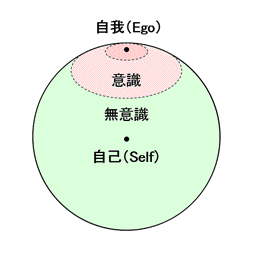
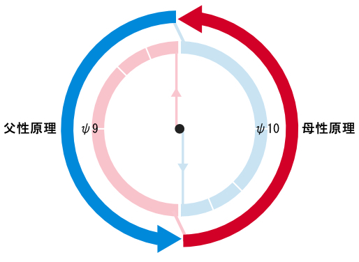

| NOSとNOOSの精神分析 全3部 | |
| 佐道 来夢 | |
| (2018) | |
＊ ＊ はじめに＊ ＊
本書のタイトルは「ＮＯＳとＮＯＯＳの精神分析」 である。本書は、宇宙論『ヌーソロジー』 の概念と、「ユング」 や「ラカン」 といった精神分析で語られていることをすり合わせて考えてみる・・・というのが主な目的である。
タイトルにある『ＮＯＳ（ノス）』 と『ＮＯＯＳ（ノウス）』 とは、「ヌーソロジー」に出てくる用語であり、「宇宙に流れる根元的な二元性」のようなものである。精神分析において、現場で「精神病」と扱われるものでも、宇宙論のような「世の中全体」の枠組みから捉えて解釈すると、それは「精神」と「物質」であったり、「個人」と「社会」であったり、「父性」と「母性」であったり、「神」と「人」であったり、「自己」と「他者」であったり・・・と、普遍的な「二元性」の問題が、個人的な問題とも関わっていることが分かってくる。従って、精神分析というジャンルを、このような「宇宙論」と絡めて捉えてみることで、何か新しいことが分かったり、新しい手段が見えてくるのではないか？ということで、これについて突き詰めてみる。
また、「ヌーソロジー」で語られている概念は、決して、人間の世界とは無関係なイデアの物事を語っているわけではない。むしろ、ユングやラカンの精神分析のような、一般の人が無意識の世界と向き合った時に出てくる、ドロドロしたものと密接な関わりがあるものだと思う。むしろ、ヌーソロジーで「高次元」として扱われるものは、人間にとってドロドロしたものと関わりなく向かうことができるものではない。ヌーソロジーはどの辺をフォーカスして扱うかによってその印象は変わるが、そこは言い切っても良い。ヌーソロジーは「精神分析」的なジャンルを必ず通過するということは、逆に言うと、ヌーソロジーが、こうした分野にも役に立つということの裏付けにもなる思う。
本書は、三部作構成で「ヌーソロジー×精神分析」 というジャンルについて書いていくことにする。一部目は「ユング」 について。二部目は「ラカン」 について。三部目は「オイディプス」 という概念についてである。
早速、一部目は「ユング」についてであるが、ここでは、ユングだけでなく「フロイト」 についても軽く扱い、それから、最後は簡単に「うつ病について」 というテーマも軽く扱うことにする。
本書の目的としては、ユングやラカンといった心理学の内容について、「初見でも理解できるようになること」と、「ヌーソロジーと絡めて理解を深める」ことである。ユングやラカンの言っていたことと「ヌーソロジー」とを繋げることで、ユングやラカンの心理学自体に繋がりを見いだすといった目論見もある。そして、行く行くは「魔術や魔法」 といったジャンルとも繋がりを見いだしていこうとも思う。これによって、「心理学」がより役に立つものになり、「ヌーソロジー」もより役に立つものになってくれれば、幸いだと思う。
本書では「ヌーソロジー」に関する知識の説明は詳しくはせず、前提としてのヌーソロジーの知識は無料公開ページである『Raimuのヌーソロジー入門』 や、書籍『ヌーソロジー基本概要＋(プラス)』 のものを用いるため、そちらを参照して欲しい。
＊ ＊ 「ヌーソロジー」の簡単なおさらい＊ ＊
まず、『ヌーソロジー』について軽くおさらいをしておく。心理学や精神分析の分野では、ヌーソロジーで言われている『次元観察子』 というものが中心となる概念として出てくるため、そこの所を特におさらいしようと思う。
・次元観察子の階層構造
ヌーソロジーで『次元観察子』と呼ばれるものは、「次元ユニット」とか「霊」などとも説明できるようなものであるが、これは「人間の空間認識の構造」とリンクして出来上がっているものであり、『次元観察子ψ １〜ψ １０』 までは、それぞれ以下のような階層構造を持っている。
次元観察子ψ １〜ψ ２
空間と時間がただ存在する場
次元観察子ψ ３〜ψ ４
一つのモノを中心に形成される場
次元観察子ψ ５〜ψ ６
無数のモノと、一つの身体を中心に形成される場
次元観察子ψ ７〜ψ ８
無数の身体を中心に形成される場
次元観察子ψ ９〜ψ １０
上位概念。言語の場と、感覚の場。
『ψ １〜ψ ２』の「空間と時間がただ存在する場」から、『ψ ７〜ψ ８』の「無数の身体を中心に形成される場」 までで、『人間の元止揚』 と呼ばれて一まとめになるが、『次元観察子』の全体像を掴む場合は、以上のイメージが出来ていると良い。
・奇数系は「自己・精神」寄り、偶数系は「他者・物質」寄り
『次元観察子』のψ １，３，５，７・・・といった「奇数系」 は自己化 を深める流れであり、精神世界 寄りの方向性である。これは『ノウス（ＮＯＯＳ）』 と呼ばれる。
一方で、『次元観察子』のψ ２，４，６，８・・・といった「偶数系」 は他者化 を深める流れであり、物質世界 寄りの方向性である。これは『ノス（ＮＯＳ）』 と呼ばれる。
そうした中で、『ψ １〜ψ ２』までが「意識の世界」であり、『ψ ３〜ψ ４』からが「無意識の世界」と呼んで良いものだが、この「無意識の世界」を開いて『顕在化』 させていくのが「奇数系」である『ノウス（ＮＯＯＳ）』の流れである。
また、『奇数系観察子』と『偶数系観察子』は、『ψ １〜ψ １０』までであると、以下のような要素と対応している。
奇数系
次元観察子ψ １： 空間
次元観察子ψ ３： 主体
次元観察子ψ ５： 自己
次元観察子ψ ７： 意識進化
次元観察子ψ ９（思形）： 言語
偶数系
次元観察子ψ ２： 時間
次元観察子ψ ４： 客体
次元観察子ψ ６： 他者・自我
次元観察子ψ ８： 時空
次元観察子ψ １０（感性）： 感覚
以上ような「階層構造」と、それから「奇数系」と「偶数系」の流れの違いというのも、イメージできるようになると良い。
・ケイブコンパスについて
『次元観察子』は以下のような『ケイブコンパス』 という図にまとめて記述される。

この中で、『次元観察子ψ
１〜ψ
８』は『元止揚』
と呼ばれるわけだが、それぞれ、右側にある『奇数系元止揚』
と、左側にある『偶数系元止揚』
とで分かれている。それから、『次元観察子ψ
９』は『思形』
、『次元観察子ψ
１０』は『感性』
と呼ばれる。
それぞれをざっくり説明すると、『奇数系元止揚』は「精神世界」 であり、『偶数系元止揚』は「物質世界」 に該当する。それから、『思形』は「言語の世界」 であり、『感性』は「感覚の世界」 である。
人間の世界においては、『思形』は「物質世界」 を裏で支えていて、『感性』は「精神世界」 を裏で支える構造になっている。しかし、それぞれは本来、奇数系観察子・偶数系観察子であるため、奇数系（思形）が精神世界を支え、偶数系（感性）が物質世界を支える・・・という、逆の力も持っている。
『次元観察子』は、つけ加えると『次元観察子ψ １１』や『次元観察子ψ １２』もある。さらには『次元観察子ψ １３』や『次元観察子ψ １４』もあるが、本書ではあまり引用しないため、その説明は省略する。
＊ ＊ ユング精神分析について＊ ＊
■ユング心理学の有り様について
・ユングとはどんな人か？
ここからは、「精神分析」の本論に入ることになる。まず、「カール・Ｇ・ユング」 の心理学である「ユング心理学」 についてである。これは「分析心理学」 とも言われている。
まずは「カール・Ｇ・ユング」
とはどういう人物か？について述べていく。
ユングは、１８７５年にスイスで生まれ、死没は１９６１年である。精神科医という立場でありながら、霊能現象やオカルトといったものに関心を持っていた人物であり、オカルティストを兼ねた心理学者として有名である。ユングは、幼少期から不思議な夢をみたりしていて、そのような不思議な体験から、心理学や無意識への関心を持つという、不思議体験を色々と持っていた人らしい。
精神科医として、患者の抑圧した感情に興味を持ち、「夢分析」を用いていたユングは、同じく「無意識」の研究の先駆者だった「ジークムント・フロイト」
に着目する。そこで、１９０７年に初めて会うようになり、年齢的には19
歳年上のフロイトと意気投合する。
しかし、フロイトは「リビドー（性的欲望）こそが全ての精神病の原因である」という、極端なことを主張する人物であった上、ユングは、オカルト現象や霊的現象に関心の強い人物だったため、そういうものに否定的であったフロイトにとっては、その点については快く思わなかった。
フロイトから「国際精神分析協会」の会長という重要なポストを任されていた身であったユングだが、その思想の違いから、次第にハッキリと決別するようになり、ユングは独立して行動するようになる。
こうしたユングとフロイトの決別は、お互いにとってショックが大きく、ユングはこの出来事を機に統合失調症を発症するようになる。しかし、ユングはここで自身に起きた精神の分裂現象は、自分自身が向上するためのものだと捉えて、自身を分析するようになる。
ユングはこのような経緯がある中で、人間の無意識には、自己と他者同士で繋がった領域があるという「集合無意識」 といった概念を提唱したりする。これは科学的には受け入れ難い、突拍子もない考え方だが、こうした発想を持つ所が、ユングがオカルティストと呼ばれる理由でもある。
また、ユングは、西洋の思想にはない、東洋の思想に着目していた人物である。西洋が正しいと論ずる「近代理性」や「キリスト教」的な考え方を疑問に思い、東洋や南アフリカといった、自然と共に暮らす考え方を持つ民族に関心を持った。それから、精神分裂の統合の象徴として「曼荼羅（マンダラ）」を導入したりし、自身も様々なマンダラを描いたりする。
このようなユングの思想は、後にアメリカのヒッピーやニューエイジといった人達にも人気が出ることになり、後世でヒッピーカルチャーに影響を与えた人物としてもよく名前が上がる。
・河合隼雄さんの功績
今度は現代日本の話になるが、現代日本にてユングを理解するにおいて、日本のユング派カウンセラーであった「河合隼雄」 さんの影響は大きいと思う。
まず、ユングの言っていることには特有の難解さがある。書籍が分厚かったりもするし、オカルトが絡んでいることや、夢分析といった手段を用いていることから、ユング心理学を学ぶとなると、それなりに難しさをともなう。
しかし、そうした中でもかなり分かりやすいユング心理学の入門書を書き、学びやすいようにしているのが、河合隼雄さんである。
河合隼雄さんは、元々は数学教師の道を歩むはずの人であったが、それよりもカウンセリングの道に関心を持つようになり、スイスに留学して、本場でユング心理学を学んで、ユング派の精神分析家としての資格を取った人である。
河合隼雄さんは、長いカウンセリング経験を兼ねつつも、ユング心理学を独自に噛み砕いて自分のものにしているため、その書籍も分かりやすい。河合隼雄さんのユングは、およそ「河合隼雄流ユング心理学」 となっているのであるが、その心理学のクオリティが高いのだと言っても良い。
ユング心理学を学ぶ場合は、ユングを直接読むよりも、河合隼雄さんが噛み砕いたユング心理学を理解した方が、はるかにやりやすいだろうと思う。いわば、「仏教」の原典としては「ゴータマ・シッダルタ（釈迦）」の言ったことにあるが、それよりも、日本の仏教僧で有名な人から仏教を教わった方が良いようなものだと思う。
河合隼雄さんの著作は「心理学」以外のものも多く、「心理学」の枠を越えて様々なことを考えていた人物でもあり、それを読んでいくだけでも面白いので、そうしたものもオススメである。
・推奨文献
ここで、ユングを理解するために、筆者的にオススメの文献を挙げておく。
まずは、河合隼雄さんの『ユング心理学入門』 である。凄くよくまとまっているため、これ一冊でもほとんどの概要が分かるようになっている。
それから、入門向けの本を読んだ後は、ユングの原書を押さえておきたい・・・ということで、ユングの書いた『自我と無意識』 という本がある。この本は、ユングの原書にしては、ユング心理学の主要概念がコンパクトにまとまっている本である。しかし、読みやすい本でもない・・・とはいったものの、ユングの原書ということで、カウンセリングの実践経験が豊富な人の書いた本でもあるため、読み応えのある本である。
ユングについて、基本概念を押さえることを目的とするならば、この二冊だけでも十分だと思う。どちらも文庫サイズが出ているので手に取りやすく、これだけでもかなり広範囲の概念を押さえることができる。
本書も、この二つに書いてあることをベースにして、用語の解説をしていくので、合わせて読むことで、理解を深めていってもらいたい。本書では、「具体例」のような事項は極力省いて説明しているが、『ユング心理学入門』には具体例などが詳しく書かれているため、気になった場合は参照してみて欲しい。
ユングに関しては、覚えるべき概念の数というのは、そこまで多くはないと思う。あとは、自身の「内在」や「無意識」といったものと、自分と世の中との関わり方など、そういったテーマとどこまで向き合えるか・・・だと思う。
■ユング心理学の内容（元型論）
さて、いよいよユング心理学の内容に入ろうと思う。まずは、「元型論」 に関する所からである。
本書は、ヌーソロジーの概念と絡めて書くことが目的である。従って、まずは「普通に解説」を書き、そこから「ヌーソロジー的に何が言えるか？」を書くという構成で説明していくことにする。
ここでは、河合隼雄さんの『ユング心理学入門』を主な参考文献としているので、合わせて読んでみると良いと思う。
・「元型」について
まずは「元型」 という概念についてである。
ユングの「元型」については、「集合無意識」 という概念と合わせて述べられる。
ユングが様々な患者の夢を分析していると、その患者の中には、個人的な「無意識」を超えた、普遍的な「無意識」から発しているようなものが見えた。このように、人類同士で共通して持っている無意識を「集合無意識」 と呼んだ。
次に、このような「集合無意識」から発しているものの中で、共通の「型」 が見られたので、それを「元型」と呼んだ。この「元型」は、それぞれの文化に伝わっている、神話や童話や言い伝えにも通じていると言えるものである。
ちなみに、「元型」そのものは、「集合無意識」にある「型」に該当するため、それは顕在意識として現れることはない。「元型」が元になって意識に現れる心像が『原始心像』 と呼ばれるという仕組みになっている。

書籍『ユング心理学入門』によると、ユングが元型として取り上げたもののうち、特に重要なものが、「シャドウ（影）」「ペルソナ」「アニマ」「アニムス」「自己」「大母」「老賢者」 と名付けられるものである。従って、本書でも、これらについての解説を試みる。
ヌーソロジー的には？
ヌーソロジーは、いわば「精神構造」を明らかにする宇宙論であり、「具体的イデア論」 とも呼ばれるものである。ここで明らかする「精神構造」は人類普遍として通じているものであり、それは『元型』とも言えるものだと思う。
ヌーソロジーの『次元観察子』や『大系観察子』といったものは、まさしくそのようなものである。
この中で、『次元観察子』は、人間の世界に近いものであり、「人間の世界にある空間の構造」から導き出される「精神構造」が『次元観察子』の世界である。この構造は、ユングの『元型』とも紐づけて解釈することができる。
それから、『次元観察子』よりも上位にある、「神話」の世界にある構造を表しているのが『大系観察子』と捉えると良い。こちらは、具体的に理解することは難しいが、「神話」のように人類の背後にあるものとして捉えておくと良い。
ヌーソロジーは「具体的イデア論」と呼ばれ、『次元観察子』の内容を具体的に解き明かしているが、これは、ユングの『元型』を具体的に解き明かす ことにも繋がっていくようにもなる。
・「シャドウ」について
次に、元型の一種である「シャドウ」 について説明する。
「シャドウ」は簡単に言うと「普段の自分があまり見ていない自分」 という意味で良いだろうと思う。書籍『ユング心理学入門』でも、「その個人によって生きられなかった半面、その個人が形容しがたいとしている心的内容であり、それは文字どおり、そのひとの暗い影の部分をなしている。」・・・という説明がされている。
人間は、生きている際には「これが正しい」という価値体系を持って生きているため、そこから抑圧された価値観や感情というのが必ず存在することになる。
自分が普段持っている表面的な価値観が「善」で「光」に満ちあふれているほど、その逆である「影」は、「悪」で「暗い」ように感じるものである。逆に、表面的な価値観を、さほど「善」だと思わなければ、「影」はさほど「悪」という風には感じない。「シャドウ」にはそうした性質がある。
普段の正義感が強ければ強いほど、自分の中の「嫌な部分」として感じるようになる「シャドウ」だが、人間が無意識の世界に向かう場合、必ず出てくる元型でもある。また、それは無意識にある自分の姿の現れであるので、それと向き合うことで、自分の「本性」が分かってくる道が開けるようにもなる。
人間が「シャドウ」を持つことで起こり得る展開として、まず「他者投影」 というのがある。ある時、自分の身近な人物、あるいは、目に触れた人物の「嫌な部分」を見て、非常に「嫌な感じ」を受けることがある。それは、あたかもその他人が悪いかのような印象を受けて、自分はその他人を批判するようになったりするし、状況が悪い場合は攻撃するようにもなってしまう。しかし、よくよく見てみると、その「嫌な部分」は、自分が持っている「嫌な部分」なのである。つまり、自分が他人に対して批判していたと思われたことは、自分が自分の「嫌な部分」に対して、他人に投影して批判していたのである。このように、「シャドウ」は「他人に投影される」という性質を持つ。
一方で、人間が「シャドウ」を持っている場合で起こりうることとして、それを受け入れ、「受容」する道というのもある。精神分析においては、どちらかというとその道が望ましい。先ほども言った通り、「シャドウ」が「悪」のように見える時というのは、「普段の価値観」が持っている正義感が強く、「善」に対するこだわりが強い場合である。また、本来は自分が認めるべき「劣性」の部分は、他人の中にあるものではなく、自分の中にあるものだと認識するべきである。そうしたものは、自分の内部にあると認めた上で、上手いこと付き合っていく必要がある。
このような「シャドウ」の「受容」は、言うのは簡単かもしれないが・・・実際に行うのは難しいかもしれない。しかし、精神分析において目指すべきこととして、気長に構えてでも上手くやりたい所だと思う。
ヌーソロジー的には？
まず、ヌーソロジー的には、普段の人間の意識は、『次元観察子ψ １〜ψ ２』 にある。そこから、『次元観察子ψ ３』や『人間の外面』に向かう 際、無意識の世界に参入するため、「シャドウ」が出てくることになる。

『次元観察子ψ ３』のある場所である『人間の外面』は、「夜」のようなイメージのものであるため、このイメージが「シャドウ」のイメージとも合致している。「シャドウ」は、世間で正しいとされている価値観のものとは、逆の価値観を持っている。しかし、先ほども言った通り、悪いものかどうかは別問題であり、その逆である『次元観察子ψ ４』や『人間の内面』に対して、「善」や「光」や「正義」といった観念が強い場合、その逆の「影」が一層と濃くなる。
つまり、ヌーソロジー的に『ノウス（ＮＯＯＳ）』の方向に向かい、『次元観察子ψ ３』を発見することにより、「影のように見えるもの」が出てきた場合、それは「シャドウ」だと言うことができると思う。
こうした「シャドウ」に対して「他者投影」を行い、他人に対して攻撃ばかりすることは、自身の無意識と向き合うことと避ける行為である。これは、ヌーソロジーで目指すべき道と逆方向に行っていると言っても良い。ここで目指すべきことは、「シャドウ」の「受容」であり、それが『顕在化』や「自己発見」の道にも通じている。実は、この「受容」こそが、ヌーソロジーで言われている『等化』 の道とも通じている。これが分かるようになると、ヌーソロジーに必要な問題は「イデアの認識」といった無機質な問題ではなく、「こころの問題」だということが分かってくるのである。
また、ここでの「シャドウ」は、ヌーソロジーの『顕在化』において初期の段階で出てくるものだと思う。より突き詰めてみると、「シャドウ」という元型は、後述する「こころ」という元型や、「アニマ・アニムス」といった元型とも通じているということが分かってくる。
・「ペルソナ」について
「ペルソナ」 は「仮面」 という意味の元型である。
それは、簡単に説明するならば、「外的環境に適応した自分」や「常識を守る自分」だと言えるものである。男性であるならば「男性らしく」しており、女性であるならば「女性らしく」している。
我々が「普段の自分」を演じる時は、およそ無意識的にそれをやっている所があるので、無意識の構成要素である「元型」として扱われる。我々が普段、自分が自分だと思っている「自我」 に、「ペルソナ」が宿っているものが、普段の自分だと言うことができる。
「普段の自分」を表す「ペルソナ」は、人間が生きていくにおいて必要なものである。例えば、仕事をして生きていく場合においては、「仕事をする自分」としての「ペルソナ」を演じ続ける必要がある。これは必要なことではあるが、同時に「ペルソナ」が自分の全てだという価値観に覆われるようになると、「そうでない自分」というのを無意識に抑圧するようになる。そこで抑圧されたものとしていずれ出てくるのが、それとは逆の概念であり、それが「精神分析」のジャンルで探求されるものである。
このように、「外的な環境」に向かっていて、普段の自分を形成している元型が「ペルソナ」である。
ヌーソロジー的には？
「ペルソナ」は、ヌーソロジー的には『偶数型元止揚』全体 に対応している。
ヌーソロジーの『偶数型元止揚』は「物質世界」を構成しているものに該当するため、これは、「物質世界を生きるため自分」 だということもできる。そして、ヌーソロジーの概念に当てはめて考えると、「ペルソナ」にはψ ２〜ψ ８という階層構造があると捉えることができる。
ちなみに、自分の書いた『Raimuのヌーソロジー入門』での解説では、「ペルソナ」と「シャドウ」を対立した存在 として書いているが、これは、『次元観察子ψ ３〜ψ ４』の段階において、ψ ４段階の「ペルソナ」と、ψ ３段階の「シャドウに見えるもの」が大事だからである。
ここで、「シャドウ」を受容し、「ペルソナ」を使いこなすことが、次のステップに進むことに通じており、『等化』をすることにも通じている。
『偶数型元止揚』である「ペルソナ」は、「ψ ４→ψ ６→ψ ８」という風に発展していくものであるが、これは、「客体（コミュニティに生きること）→他者（組織・団体に生きること）→時空（概念に生きること）」という発展でもあるため、そのような発展構造や階層構造が見えてくるようになると良い。
・「こころ（Soul）」について
「こころ」 は、ユングが「Seele」と読んだ概念であり、我々が「心」とか「魂」とか読んでいるものを、ユングが明確に定義づけしたものである。
「Seele」は、英語では「Soul（魂）」と訳されているが、河合隼雄さんは書籍『ユング心理学入門』で、「こころ」と訳しているため、ここでもそのように呼ぶことにする。これは、後述する「アニマ」や「アニムス」といった元型に発展するものでもある。
「こころ」は、簡単に説明すると、「自分自身が内的に持っているもの」 である。それは、自身の外在の世界に向かうものと対立し、無意識の世界へと向かうように機能している。先ほどの「ペルソナ」は「外的な態度」の元型であるのに対して、「こころ」は「内的な態度」の元型である。
元型としての「こころ」は、意識的に把握することはできないが、心像として、夢の中に現れることがある。その中の女性像を、ユングは「アニマ」と呼んでいる。従って、「こころ」と「アニマ」は、夢に現れてくる場合は、ほとんど同義語として扱われている。
「アニマ」や「アニムス」について、詳しくは後述するが、「こころ」は、そのベースとなるものである。
ヌーソロジー的には？
「こころ」は、ヌーソロジー的には『奇数系元止揚』全体 に位置づけるのが良いと思う。それは、『偶数系元止揚』である「ペルソナ」とは、『対化』の関係を持っている。『奇数系元止揚』は「精神世界」を構成しているものなので、「精神世界」にあるものだとも言える。

これは、「精神世界を生きるための自分」だとも言うことができる。それから、ヌーソロジーの観察子構造から判断するに、「ペルソナ」に階層構造があるように、「こころ」にも階層構造があると解釈できる。
ヌーソロジー的に意識を『顕在化』させていくにおいて、まずは、『次元観察子ψ ３〜ψ ４』が問題になるため、『次元観察子ψ ３』が一番始めに出てくる「こころ」である。これが、暗い「影」のように見えた場合は、「シャドウ」となっていると思う。しかし、「シャドウ」の裏には「こころ」があり、暗い影のようなものの中にも、「こころ」のようなものを発見することが、まずは大事なこととなる。
『奇数系元止揚』である「こころ」は、「ψ ３→ψ ５→ψ ７」という風に発展していくものであるが、これは、「主体（脱コミュニティ・哲学的な探求）→自己（自己発見）→意識進化（概念の意識に参入）」という発展でもあるため、そのような発展構造や階層構造が見えてくるようになると良い。これは、それぞれ「ペルソナ」にあるものと『対化』の関係を持っている。
・「アニマ」と「アニムス」について
次に「アニマ」 と「アニムス」 についてである。
簡単な解説では、「アニマ」は「人間を無意識の世界へ引き連れる女性性」 であり、「アニムス」は「人間を無意識世界へ引き連れる男性性」 という風に説明できるが、これは結構深い意味も持っている。
「アニマ」と「アニムス」の本性は、先ほども言った通り「こころ」であり、「自分自身が内在に持っているもの」である。それが夢の世界で、女性として現れた場合は「アニマ」で、男性として現れた場合は「アニムス」となる。
そして、一般的には、実際の性別が「男性」の場合は、女性である「アニマ」 が登場し、「女性」の場合は、男性である「アニムス」 が登場する。普段の自分と逆の性がそこで登場するということである。これは、「ペルソナ」が「男性らしいか女性らしいか」という側面が濃ければ濃いほど、その傾向は強いと思われる。
「こころ」の派生物である「アニマ・アニムス」は、「ペルソナ」に対するものとして現れる。「ペルソナ」は得てして「物質的な安定」を求めるものだが、「アニマ・アニムス」は、その逆として出てくるため、いくらか反社会的な性質も持っている。「精神病」の発症もその性質の一つだが、「アニマ・アニムス」の発する警告は、自身のペルソナ的側面が、ある種の偏りがあった場合に出てくるものである。それは、自分個人が偏った性質を持った時に出てくるものであったり、家族全体が偏った性質を持った時に出てくるものであったり、社会全体が偏った性質を持った時に出てくるものであったり、さらには、人類全体が偏った性質を持った時に出てくるものでもある。自分個人の「無意識」の問題から始まるものでも、それは、人類普遍の「集合無意識」に通じる問題になっていることもある。
このような「アニマ・アニムス」は、「世間全体に対抗するもの」として現れることもある。例えば、父権性が強すぎる社会の場合は、総じて「アニマ」が発生することが多くなり、逆に、母権性が強すぎる社会の場合は、総じて「アニムス」が発生することが多くなる。このような「強い無意識の力」を持っているものが、「アニマ」と「アニムス」である。
社会全体からの視点でいうと「アニマ・アニムス」は、「目に見えない存在」と結びついている傾向にある。人間の世界は「目に見えるもの」が主流として君臨しているため、人間社会において「目に見えない存在」は劣性として、無意識の世界に抑圧されやすい。そうした抑圧観念が、「アニマ・アニムス」と結びついていくのである。現代社会において主流な、科学的な価値観や唯物的な価値観は、主に「男性性」として象徴される。従って、「目に見えない存在」と「アニマ」という女性イメージが結びついたものは、現代社会において重要なポジションとなる。
このように反社会的で強い無意識の力を持った「アニマ・アニムス」だが、書籍『ユング心理学入門』を引用すると、ユングは「アニマ」に関しては、以下のように述べたらしい。
「一般には、男性としての強さや判断力などがまず期待されるので、このような外的な期待にそえるペルソナを作り上げることが大切であり、このようなペルソナを人生の前半において築いた後に、アニマの問題との対決は人生の後半（三十五〜四十歳以後）になされるのが普通である。」
「ただ、例外として、芸術家、宗教家や、前述したように心理療法家なども、若いときからアニマの問題と取り組まねばならぬ宿命を背負った特殊な人であると思われる。」
・・・と、このように、それだけ自身を揺るがす力を持っているのが「アニマ・アニムス」だということである。
ヌーソロジー的には？
ヌーソロジー的に「アニマ」と「アニムス」は何なのかというと、それは「こころ」とほぼ同様で『奇数系元止揚』 から出てくるものである。「アニマ・アニムス」は、そこに異性イメージが加わったものということで、ひとまずは良いと思う。
「こころ」に階層構造があるように、「アニマ・アニムス」にも階層構造がある。「アニマ」の女性像と、「アニムス」の男性像は、階層構造によって変化するものだと捉えても良い。
それから、「アニマ」は「女性性」、「アニムス」は「男性性」とそれぞれ関わりがあるため、ヌーソロジー的には『感性』と『思形』 に関わりがあることも考えられる。ユングの説明において「アニマが単一人格であるのに対して、アニムスは複数である」といったことが述べられている。この点はなかなか難解な所だが、女性の意識的態度は、男性よりも個人的なものだという指摘から来ていて、女性は「家族」といったコミュニティを重視しつつも、本質的には自分たち自身にしか興味を持っていないと言う。対して、男性は、国家であったり、民族であったり、企業集団といったものに関心が強く、普遍的なものに興味を持つ（これはあくまでユングの見解であるが・・・）。こうした性質の違いも、『感性』と『思形』の性質の違いであるため、「アニマ」と「アニムス」にはこのような違いがあることも踏まえておくと良い。
・「自己（Self）」について
次は「自己（Self）」 という元型についてである。ユングは、精神分析の目的として「個性化」 というものを設定しているが、この「個性化」というのは、言い換えると「自己実現」 とも言えるため、この「自己」という元型はその中心となる。精神分析的にも、「自己発見」や「自己認識」というと、この「自己」を発見したり、認識したりすることだと言っても良い。
まず、我々の意識は、普段は「自我（ego）」 を中心として動いていて、それが人格の中心だと思って生きている。
しかし、精神分析においては、無意識を含めるとそれよりも奥の意識というのがあり、その中には自我を超えた「高次元」であったりと、「高次の全体性」と呼べるようなものがある。無意識世界に踏み入れようとする時、「自我」の安定性を崩してまで、高次の全体性へと向かう動きが、人間の心の中には見られるのである。
人間が、こうした「自我」に留まった状態から、無意識の世界に参入し、高次の全体性に向かうようする ことを、ユングは「個性化」や「自己実現」と読んだ。そして、これが人生の究極の目的であり、心理療法の目的でもあるとした。
そうした中で、高次の全体性への統合へと向かう、通常の意識を超えた動きの中心として、ユングは「自己」というものを考えた。「自我」が意識の中心であるのに対して、「自己」は意識と無意識とを含んだ心の全体性であると説明されている。

ユングの「自己」という考え方は、東洋思想の影響を受けており、中国の「道（タオ）」の考え方にも影響を受けている。意識と無意識は、相対する陰と陽の動きのように、意識の世界も大事でありながら、無意識の動きも大事であり、この両者の動きが分かったとき、われわれの全人格の中心は、「自我」ではなく「自己」であることを知ると言う。
また、こうした「意識」と「無意識」の関係は、西洋の近代理性と東洋の無為自然の思想にも通じているため、「自己」の発見は、西洋思想と東洋思想の二つの思想の落とし処だとも言うことができる。
先ほど述べた元型との絡みで言うと、「自己」は、「ペルソナ」と「こころ」（あるいはシャドウ）を「統合」するようなポジションにもあたる。
ここでいう「統合」とは、「錬金術」 的な発想のものである。ユングは錬金術の研究をしていたことでも有名であり、その発想を精神分析の世界に取り入れている。相反するものを炎にくべて、熱の中で変容を起こし、新たな生成物を作り出すイメージ・・・これは、先ほどの「道（タオ）」のイメージにも近く、そのように生まれたものが「自己」であり、それは最終的には「金（Gold）」の錬成へと向かうということになる。
このような「自己実現」は、人間にとっての究極の目標にも通じていることだが、これには注意点もある。それについては『自己実現の道の危険性について』 の項目にて述べる。
ヌーソロジー的には？
ユング的な「自己（Self）」は、ヌーソロジー的には何に該当するのかというと、『次元観察子ψ ５』 の位置にあるものとするのが良いと思う。
ヌーソロジーの情報元であるオコツトも「『次元観察子ψ ５』とは「自己」の有り所」だと言っている。ここで言う「自己」は、ユングの言う「自己（Self）」と、ほとんど同じものだと言っても良い。

ヌーソロジーにおいて『次元観察子ψ ５』は、人間の意識を『ノウス（ＮＯＯＳ）』側に引っ張る力を持っており、それは、「自他分離状態における最高位」の「自分」だと言うことができる。
それから、『次元観察子ψ ５』は、『次元観察子ψ １〜ψ １２』においては、丁度「中心」ぐらいのポジションにあたる。（ちなみに、ψ １〜ψ １４においては、ψ ７が中心になる・・・というポイントも少し重要である。）
また、『次元観察子ψ ５』は、『次元観察子ψ ３』と『次元観察子ψ ４』の『等化』で分かる箇所でもある。観察子全体においては、『次元観察子ψ ５』より高次元のものはまだまだあるものの、そのポイントは人間の世界にも近く、「自己」と「他者」の関係性で世の中を生きるにおいて、重要なポジションである。
・自己実現の道の危険性について
ユングの「自己」という元型についてはまだ語ることがある。それは、「自己実現」の道の危険性 についてである。この危険性は「自己実現」に向かう人の心が、まだまだ未熟である場合に起きることである。
まず、心が未熟である者が、「自己」を理解して、その感覚を実感した時、その偉大さに埋没してしまうことがある。その結果、偉大である「自己」に従い、それと自分が同一であるかのように行動をしていくが、その時に自分が「自己」だと思っていたものは、実は「自我」が膨大に膨れ上がっただけのものだという、「自我肥大」 という現象が起きてしまうのである。
また、「自己実現」の道に向かうにおいては、「無意識」の重要性だけでなく、「意識」の重要性も忘れてはならない。「無意識」の世界に参入すると、「無意識」の存在感の強さを実感することになるが、逆に意識が優勢である普段の価値観の反発もあり、今度は、無意識の世界が重要という価値観を持ち、意識の世界の重要性が抜けてしまうことがある。東洋思想においても、「無意識」を重視している興味深い所が見られる一方で、むしろ「意識」の重要性が欠けている所も見られる。
そのため、「人間はまず自我を十分に強化し、無意識に対して埋没することなく対峙できるようになってから、自己実現の道に入るべき」・・・ということをユングは言っている。これは、先ほど述べた「アニマとの対峙は人生の後半（三十五〜四十歳以後）から」ということにも通じていると思う。
それから、普通の人が「自己実現」の道に入ろうとすると、そこで「一般的に信じられている価値観」というものを捨てるようなことも起きてくる。人によっては、そこでショックが起きることでもある。これは、「ペルソナ」に対する、「シャドウ」や「アニマ」の驚異であり、無意識にある元型との対峙の際に出てくることである。
このように、「自己実現」の道はユングが指し示している目標であるが、決して簡単な道ではないことも、踏まえておくべきことである。
ヌーソロジー的には？
「自己実現の道の危険性」は、ヌーソロジーにもそのまま通じていることである。
ヌーソロジーの構造は、ある意味でシンプルな所があり、着実に理解をしたい場合は、「数字が少ない所から理解をするべき」 という鉄則がある。ここで言う「数字が少ない所」というのは、ψ １とかψ ３といった所のことである。逆に、ψ ９やψ １１といった、「数字を高い」所を掴むと全体のイメージが掴めるため、それはそれで良いこともあるが、しかし、やはりちゃんと『顕在化』というレベルでしっかりと理解するつもりの場合 は、少ない方から基盤を固めるのが基本だと思う。まずは、『次元観察子』の「ψ １〜ψ ２」から「ψ ３〜ψ ４」にかけてである。
ヌーソロジーの『観察子』は、数字が少ない所の方が人間の世界に近いため、実感を含めた理解がしやすい所である。・・・しかし、人間の世界に近い所ほど、人間の「影」にも近いため、目をそむけたい所でもある。それは、「シャドウ」の問題が絡む所であるため、普通の人が避けたがる理由はそこにあると思う。
もし、『観察子』の数字を飛ばして分かろうとした時、下手するとどうなるのか？ そうすると『迷化』 という現象が起きるようになる。『迷化』とは、その存在の構造がハッキリ分からない状態なのにも関わらず、「分かったつもり」と盲信した状態に落とし込むと、それは、進化の方向性とは真逆の方向性となってしまう ことをいう。
『迷化』は、「宗教」の世界でよく起きていたことである。キリスト一神教的な「神」を追い求めるあまり、自身を「神」と同一視したり、あるいは、誰かを「神」と同一視してしまうことは、「神」が何なのかを分かっていないにも関わらず盲信した結果であるため、ここでも『迷化』現象が起きていると言っても良い。
これは、『次元観察子ψ １〜ψ ４』をいきなり飛ばして、『次元観察子ψ ５』を理解しようとする場合でも起こりえるし、より高い次元を理解しようとすると、余計にそうなってしまうことでもある。より高次元を妄信している傾向が強いほど、問題は深刻となっていると言える。
ヌーソロジーの『次元観察子』とユング心理学との対応において、『ψ １〜ψ ２』は「自我」の理解、『ψ ３』は「シャドウ」と「こころ」の理解、『ψ ４』は「ペルソナ」の理解に通じている。従って、『ψ １〜ψ ２』に依存ずる価値観を捨てることや、『ψ ３〜ψ ４』の双方の価値を認める問題は、ヌーソロジーの理解を進めているうちに必然的に発生する、心の問題でもある。
つまり、ヌーソロジー的には、自己実現の道の注意点は、『次元観察子』の『ψ １〜ψ ２』→『ψ ３〜ψ ４』の認識と理解を地道にやるべきだということに、そのまま通じているのである。
・「トリックスター」について
「トリックスター」 は書籍『ユング心理学入門』には詳しく書いていない元型だが、少し印象的な元型であるため、ここで取り上げることにする。
「トリックスター」は、既存の法や価値観を引っかきまわすような、いたずら好きの元型として伝えられるものである。「トリックスター」の特徴として言われていることは、いたずら好きであること、既成の法や聖なる物をひっかきまわすこと、半獣のような側面を持つこと、愚か者かのように見える一面があること・・・などである。それは、人間を超越した能力を持っている一方で、動物以下のような愚かさを持っている元型である。
このような「トリックスター」は、状況をひっかき回して周りを混乱させるが、そこから良い結果になることが多く、救世主や英雄に転じる場合もある。
日本神話では「スサノオ」 が「トリックスター」の代表として挙げられる。それは、「荒ぶる神」であり、「タカマノハラ」で暴れ回ったかと思えば、人間の世界に降りて、ヤマタノオロチを倒すような、英雄的な一面も見せる神様である。
ヌーソロジー的には？
「トリックスター」をヌーソロジー的に解釈するのは意外と難しいが、ひとまず、神話におけるそれは『プレアデス』的なもの と捉えると良いかもしれない。
それから、神秘家の「ルドルフ・シュタイナー」が「ルシフェル的なもの」 と読んでいるものが、ヌーソロジー的には、『性質』と『反性質』の二面性を持つ ものと解釈することができるものであり、「トリックスター」もそれと似たようなものと解釈することができる。
「トリックスター」は『プレアデス』的であると同時に、人間を超えているような性質も持ち合わせている。そうした英雄としての側面は、ある意味では『シリウス』に対する志向性とも解釈できると思う。
・「大母（グレートマザー）」と「老賢者」
ここで、「大母（グレートマザー）」 と「老賢者」 という元型についても軽くふれておこうと思う。
「大母」は、夢の中に出てくる、偉大な「母なるもの」のイメージである。特徴としては、全てを受容し、あらゆる生命を生み出す偉大さを持っている反面、全てをのみこむような恐ろしさを持っているものである。
一方で、「老賢者」は、「知恵を持った老いた賢者」のイメージである。特徴としては、理性の象徴とも言えるような高い知能を持ち、その力で人々を導いたりする。
この二つは、それぞれ「母性原理」と「父性原理」の象徴 ともされる。しかし、この二つは「夢にそのようなイメージ」が出てくると、そう認識されるようになるが、その夢において、それが何であるか？については、多様な解釈ができることもあるかもしれない。その正体を見極めるためには、どういう役割を持っている者なのかを見極める必要がある。
ヌーソロジー的には？
「大母」と「老賢者」は、夢に出てきた場合は、定まった解釈のし難い元型であるため、ヌーソロジー的な解釈は、内容次第で変化するかもしれない。しかし、「大母」が「母性原理」の象徴を、「老賢者」が「父性原理」の象徴を表している場合は、それぞれ「大母」は『感性』、「老賢者」は『思形』 が関係していると思われる。『次元観察子』というよりかは、神話の次元にあるものとして捉えるなら、『大系観察子』の Ω １０（感性） と Ω ９（思形） と捉えた方が良いかもしれない。『感性』は母親としての役割を持つ側面があり、『思形』は知恵を与える側面がある。

しかし、解釈によっては、「母なる地球」としての「大母」は、『プレアデス』という存在の象徴として出てくることもあるかもしれない。
それから、「師」としての「老賢者」は、「自己（Self）」や「アニムス」に近く、『次元観察子』のψ ３，ψ ５，ψ ７に紐づいた何かしらの存在が「老賢者」として現れることがあるかもしれないし、「超越者」としての「老賢者」は、『オリオン』的な存在が当てはまるかもしれない。そのあたりのケースは色々と想定できる所である。
・父性原理と母性原理
「父性原理」 と「母性原理」 というのは、ユングの元型というよりかは、河合隼雄さんが言っていた二つの原理である。
「父性原理」と「母性原理」は、書籍『ユング心理学入門』では触れられていないが、河合隼雄さんの別の書籍『子どもと学校（岩波新書）』 などに書かれている。それから、『父性原理と母性原理 (河合隼雄全対話)』 という書籍も出ている。
書籍『子どもと学校』から引用すると、河合隼雄さんが言っていた「父性原理」と「母性原理」は、それぞれ以下の性質を持っている。

河合隼雄さんは、元々は数学教師の免許を持っている理系の人であるため、こういう二元論的な分析を好む人でもあった。
筆者は、ヌーソロジーをやる前は、こうした二元論を考察するのが好きだったため、「父性原理」と「母性原理」といった二つの原理は、非常に気になる概念であった。
ここで、河合隼雄さんが述べていたことを簡単に説明すると、日本は本来、「母性原理」が強い国であったが、戦後のグローバリゼーションの流れによって、欧米の文化を輸入しているうちに、「父性原理」的な考え方も多く輸入することになった。そして、頭で考えたりする時は、父性原理にもとづいて考えたりするのだが、実際の行動や感情的な面は、いまだ母性原理によって生きている。特に、インテリは父性原理で考える傾向が強いが、行動や感情となるとまた別の話になるわけである。
「母性原理」で大事な考え方は、全体の「場」を意識することであり、そうした中で、全体の平衡状態を維持することが大事となってくる。そのため、個人が自己主張をするというより、全体のバランスを考えることが重視される。
一方で、「父性原理」では、個人差や能力差が大事となるため、「競争」という考え方が出てくるようになる。日本は本来、こうした考え方が希薄であり、その中で組織を運営していくためには「年功序列」的な考え方が主流であった。例えば、日本の「武士」なんかは、一見すると父性的に見えるようで、案外、母性的な行動原理を持つ者の象徴のような性格を持っていたりする。そして、現代は、日本が古来から持っている考え方に加えて、父性原理的な競争原理が混在している状況になっている。
河合隼雄さんが言うには、日本は西洋化しているといっても、まだまだ母性原理で動いている という。このようなギャップから生じる問題が、今日の「精神病」の問題へと繋がっていくこともあるため、これは精神分析においても重要なテーマである。
こうした「父性原理」と「母性原理」の関係の問題は、実に奥が深く、詳しく述べていくとキリがないぐらいであるため、今後も考察を深めていくべきテーマであると思う。
ヌーソロジー的には？
こうした「父性原理」と「母性原理」の概念は、意外とヌーソロジーの概念にピッタリと当てはめるのは難しいのだろうか・・・といろいろと考えたが、やはり『次元観察子ψ ９（人間の思形）』 と『次元観察子ψ １０（人間の感性）』 がそれぞれ対応していると思う。根元的なものとしては、『大系観察子Ω ９』と『大系観察子Ω １０』が当てはまる所だと思うが、ひとまず、人間にとって身近な所は、「ψ ９」と「ψ １０」の所である。ψ ９は「言語」、ψ １０は「感覚」が、それぞれ関係している。

「ψ ９」も「ψ １０」も、ヌーソロジー的には『ノス（ＮＯＳ）』方向に転ぶこともあれば、『ノウス（ＮＯＯＳ）』方向に転ぶこともある。
元々は、 ψ ９（父性原理）は『ノウス』 の力、 ψ １０（母性原理）は『ノス』 の力を持っている。しかし、人間にとっては、それが逆方向の力へと向かう。 ψ ９（父性原理）が『ノス』方向に転べば『反定質』の方向性 になり、 ψ １０（母性原理）が『ノウス』方向に転べば『反性質』の方向性 になる。
つまり、この二元は、『反定質』と『反性質』の二元にも絡むようになる・・・ということである。
それから、日本は古来から「母性原理」が主流であったが、そこに「父性原理」を組みこむということは、一種の「両性具有」 を行く道ということになり、これは『シリウス』に向かう道だと言うこともできると思う。現代日本においては、日本が持っている本来の長所を活かしつつ、近代的で合理的な思想の良い所を上手く組み込むことによって、『シリウス』に向かうことができるのだと思う。
・『次元観察子』と「元型」の関係
ユングの「元型」とヌーソロジーの『次元観察子』の関係 については、前にも軽く触れたが、ここは重要な所なので、詳しく説明しようと思う。
まず、ヌーソロジーの『次元観察子』は、「意識の位置から作られるもの」 という点が重要である。ここで、「意識の位置」と言われるものは、「無限遠点」 や「無時間」 の場所だったりする。それから、『次元観察子』の構造は、ヌーソロジー的には、「意識と光速度の関係」や「素粒子の仕組み」といったものとも対応している。このように、物理的に最初から存在する「構造」から出来上がっているものが『次元観察子』だと言っても良い。
対して、ユングの「元型」は、ユングの提唱したものであり、童話や神話などとも繋がりがある、いくらか「抽象的なもの」 である。この「抽象的なもの」が、人間の顕在意識で「イメージ」として認識された時、「原始心像」となるわけである。
このように、「元型」と『次元観察子』は、厳密には違うものなわけであるが、しかし、ユングの提唱したものと、ヌーソロジーで言われているものとの二つの概念の中で、見解が一致している所を見出すことはできる。
それから、『次元観察子』は、明確な「構造」を持っているものであるため、『次元観察子』を理解した上で「元型」を捉えることで、「元型」の明確な構造が分かってくるようになる。さらには、そこから浮かび上がる「原始心像」の構造も分かるようになる。
このように、「抽象的なもの」の「構造」が分かるようになるのは、ヌーソロジーの長所とも言えることである。
■タイプ論について
ユングは、人間を２つのタイプに分けたり、４つのタイプに分けたりすることを提唱した人物としても有名である。この「人間のタイプ」については、フロイトと決別した後にユングが書いた『心理学的類型』という本に書かれている。
そのタイプ分けとは、まずは「内向タイプ」 と「外向タイプ」 の２つであり、加えて、「直観タイプ」「感情タイプ」「思考タイプ」「感覚タイプ」 の４つのタイプが存在する。それらが組み合わさることによって、２×４で、合計８つ のタイプが考えられる。
まずは、「タイプ分け」については、それを行う意義が重要な話となる。それは、単にタイプを「分類」するというよりも、４つのタイプを「座標軸」として設定することによって、本人の人格に接近しやすくなることを目的とするべきである。ここで、「分類」をした結果、ただの「レッテル張り」にしかならないようでは、「タイプ分け」には何も意味がないことになる。
思うに、このような分析で心がけるべきことは、「ＡであるかＢであるか」ではなく、「Ａに近いか、あるいは、Ｂにも近いか」 であったり、「それによって何が言えるか」 の方が大事である。そもそも、人間の心というものは、移り変わりやすいのが常であり、分別は微妙なものであるため、結果は「多様」なのが基本である。それから、精神分析においては「結局、どうすれば良いのか？」という、とりあえずの着地点を見いだすことが結果として必要になる。
こうしたことを踏まえつつ、ユングの言った「４つのタイプ」について取り上げようと思う。
・内向タイプと外向タイプ
まずは「２つのタイプ」の「内向タイプと外向タイプ」 についてである。（これは、『ヌーソロジー基本概要＋（プラス）』といった書籍や、『Raimuのヌーソロジー入門』でも説明しているが、ここでも同様に説明しようと思う。）
これは、簡単に説明すると「意識のベクトルが内側に向いているかと外側に向いているか」 によって起きる２つのタイプと言われている。言い換えるならば、無意識に向かっているか、外在への適応に向かっているか、と言うこともできる。ユングの「元型」でいうと、「シャドウ」や「こころ」が先手の傾向があるのが内向タイプで、「ペルソナ」先手の傾向があるのが外向タイプだとも言える。
それから、書籍『ユング心理学入門』からの引用だと、以下のように述べられている。
世の中には、ある場合に反応する際に、口には出さないけど「否」といっているかのように、まず少し身を引いて、そのあとでようやく反応するような一群のひとびとがあり、また、同じ場面において、自分の行動は明らかに正しいと確信しきって見え、ただちに進み出て反応してゆくような郡に属するひとびとがある。
前者はそれゆえ、 客体とのある種の消極的な関係によって、また、後者は客体との積極的な関係によって特徴づけられている。
・・・前者は内向的態度に対応し、後者は外向的態度に対応している。
こうした「内向タイプと外向タイプ」についても、先ほども述べたように「Ａに近いか、あるいは、Ｂにも近いか」という分析が妥当であり、状況によって変わることは、当然のようにあり得ることである。あるいは、どちらとも判断しづらい、ニュートラルのような人もいるだろうと思う。
こうした「内向タイプ」と「外向タイプ」について、自分なりにまとめてみると、以下のようになると思う。
ヌーソロジー的には？
「内向タイプ」と「外向タイプ」は、ヌーソロジー的には何がいえるのだろうか？
まず、人間の自我は『次元観察子ψ １〜２』にあり、そこから、「ψ ３（主体）→ψ ５（自己）」に向かうベクトルを持っているのが「内向タイプ」 であり、一方で、「ψ ４（客体）→ψ ６（他者）」に向かうベクトルを持っているのが「外向タイプ」 である。
これは、人間にとって身近な『ノウス（ＮＯＯＳ）』と『ノス（ＮＯＳ）』にも該当している。実は、『ノウス』と『ノス』を簡単にイメージするのに適しているのが、この「内向タイプ」と「外向タイプ」の二つの傾向だったりする。
「内向タイプ」と「外向タイプ」は、「こころ」に従属する者 と、「ペルソナ」に従属する者 、という言い方でも当てはまるため、以下のように、ケイブコンパスにも当てはまる。

以上のように、「内向タイプ」と「外向タイプ」は、ヌーソロジーと縁が深い概念なのである。
・「オタク」と「リア充」についてなど
さて、最近では、「リア充」 という言葉があったり、それから「オタク」 と言われ方をされる人達というのがいる。前者はおよそ「外向タイプ」、後者はおよそ「内向タイプ」に関係している。
「リア充」は「リアルが充実している人」 ということを意味する。リアルが充実してるということは「外在世界」が充実しているということであり、これはそのまま「外向タイプ」へと繋がるようになる。
一方で「オタク」は、今は「アニメとかゲームとか好きな人」みたいなっているが、本来は「一つの物事に異常に集中できる人」
のことを言う。「オタク」とは、アニメ業界で「オタキング」として有名な「岡田敏夫」によると、以下のように定義されるらしい。
・進化した視覚を持つ人間
・高性能のレファレンス能力を持つ人間
・飽くなき向上心と自己顕示欲
これは、ヌーソロジー的に言うと、新しい知覚を目指すような方向性という解釈することもできるし、「４次元空間」へと向かう志向性 と言うこともできる。（しかし、最近のオタクは、逆に「２次元空間」 の方向へと向かっている傾向がある。そこの所は、色々と考察できそうな所ではあるが・・・。「２次元空間」に向かうと、ある意味では『ノス』や外向的な要素に向かうことになるので、また事情が複雑になる。）
元々のオタクは、古代ギリシャで、哲学者プラトン が指し示したような、「イデア」 へと向かう哲学のような方向を持つものなのだと思う。（ちなみに、プラトンはレスリングをやっていた人物だったらしい。貧弱なイメージではないみたいである。）
そういう意味では、「オタク」は『ノウス』的であるし、「リア充」は『ノス』的なのである。
・４つのタイプ
さて、次に「直観」「感情」「思考」「感覚」 に紐付く４つのタイプについてである。これらは、ユングによると「４つ心理機能」 と言われている。
それぞれをざっくりと説明すると以下のようになる。
〜直観タイプ〜
いわゆる「直観力」を駆使して、
可能性を見いだすのが得意なタイプ。
「ピンと来たもの」で行動するが、
完全な当てずっぽうではなく、何かしらの記憶の蓄積から、それが来るものと思われる。
割と理想主義に近いタイプとも言える。
〜感情タイプ〜
「心」や「感情」といったもので判断するタイプ。
感情で捉えることができるものに関心を持ち、
良いと感じるかそうでないかを重要視する。
〜思考タイプ〜
「頭」や「思考」といったもので判断するタイプ。
思考で捉えることができるものに関心を持ち、
理に適っているかそうでないかを重要視する。
〜感覚タイプ〜
実際に知覚した物事を重視して行動するタイプ。
知覚内容は「視覚」「聴覚」「触覚」などの総合的なものであり、
それらの経験に基づいた行動を行う。
割と現実主義に近いタイプとも言える。
これらの４つのタイプについては、色々と詳しいことが言えるし、これと「内向タイプ」と「外向タイプ」との複合によって、様々な性格が出来上がることになる。
それから、この４つのタイプの中で、「直観←→感覚」・「感情←→思考」 は、それぞれ対の関係になっているため、以下のように十字型の軸で表すことができる。
この十字型の軸の中で、「４つ心理機能」の特徴として見られることは、対となっている片方が優れている場合、もう片方が劣性機能になりやすい ことである。そして、そうした劣性機能は「無意識」に抑圧されやすくなるため、心理療法においても、この劣性機能の部分が重要なテーマとなる。
このように、「４つ心理機能」について見ていくことで、自身の意識に持っているものと、無意識に持っているものとのバランスについても見ていくことができる。このようなバランスを把握することが、タイプ論の本来の使い方である。
ヌーソロジー的には？
「直観と感覚」・「感情と思考」の４つの心理機能は、ヌーソロジーの『ケイブコンパス』に当てはめてみると、以下のようになる。

「思考」→『思形』 、「感情」→『感性』 との対応は、そのまま当てはまるものだと思う。それから、「直観と感覚」についてであるが、それぞれ、「直観」は『奇数系元止揚』 、「感覚」は『偶数系元止揚』 に当てはまる。『奇数系元止揚』は「精神世界」のようなもので、『偶数系元止揚』は「物質世界」のようなものである。従って、理想主義的な直観タイプと、現実主義的な感覚タイプのイメージが、そこで結びつくようになる。
それから、『思形』と『奇数系元止揚』との結びつき や、『感性』と『偶数系元止揚』との結びつき について、ここで着目したい。それらは、観察子構造としては繋がりを持っており、これは「思考と直観」「感情と感覚」が結びつく ことを意味している。
「思考」と「直観」の関係について言えることは、まず、「思考」機能に対応する『思形』が司っているのは「言語」であり、それに紐付く「思考体験」の場にあるのが「思考」機能だと言える。そして、その「思考体験」の積み重ねによって出てきたものが、人間が今いる場所に、瞬間的に降りてくるのが「直観」なのである。つまり、「直観」とは「思考の積み重ね」から瞬間的に起きるものであり、それを駆使するのが「直観タイプ」 だと言うことができる。「直観タイプ」の持つ瞬間的な「ひらめき」は、時間感覚のないような場から出てくるものであるため、どこか超越的な存在をそこにかいま見ることができる。
次に、「感情」と「感覚」の関係についてだが、「感情」機能に対応する『感性』は、「感覚」を司っている。そこで、純粋な「感覚の場」にあるのが「感情」機能だと言える。そして、そうした「感覚の積み重ね」から行動するタイプというのが「感覚タイプ」 だと言うことができる。こうした「感覚タイプ」の持つ「感覚の積み重ね」は、人間の持つ「時間感覚」に紐づいているものであり、「経験」と言うこともできる。従って、「感覚タイプ」とは、言い換えるならば、「経験タイプ」とも言えるのだと思う。
このように、ケイブコンパスに４つの心理機能を当てはめると、ユングがそれぞれ指していた４タイプと少し異なるようにもなるかもしれないが、ケイブコンパスのような全体論と４つのタイプとを合わせて捉えることで、より理解を深めることができるようになる。
・「火」「水」「風」「土」とケイブコンパス
４つの心理機能である「直観」「感情」「思考」「感覚」は、「西洋魔術」や「西洋占星術」における「火」「水」「風」「土」 という４大元素にも対応している。従って、ケイブコンパスでも、「火」「水」「風」「土」は、以下のように対応する。
ヌーソロジーの概念と「火」「水」「風」「土」という４大元素との対応は、『負荷・反映・等化・中和』や『定質・性質・反性質・反定質』といった概念についても諸説あり、色々と言えるので定まってない所もあるが、この『火： 奇数系元止揚』『水： 感性』『風： 思形』『土： 偶数系元止揚』 という対応に関しては、かなり定まったものだと言えると思う。
人間の世界は、この４つの中で、『偶数系元止揚』に該当する「土」の要素だけが異常に強く、それは、ある種の絶対的な「父」のように君臨している。逆に、『奇数系元止揚』である「火」の要素は弱く、一部の芸術家やオカルティストといった人達が復興しようとしている所であるが、世間的には下火の扱いとなることが多いのである。
ケイブコンパスと４大元素とを絡めて捉えてみると、このようなアンバランス構造も見えてくるようになる。
■ユング心理学の内容（その他）
これまで、「元型」や「タイプ論」について色々と述べていったが、最後に、ユング心理学にて取り扱われていた、「夢」「集合無意識」「シンクロニシティ」「コンプレックス」「カイロスとクロノス」「マナ人格」 といったことと、ヌーソロジーの絡みについて見ていこうと思う。
・「夢」について
「夢」 は、人間が夜に見るものであり、ユングやフロイトが「夢分析」として心理療法に用いていたものである。
そもそも、人間が何故、夢を見るかについては、色々と諸説がある。起きていた時の記憶の整理や、神経疲労や脳細胞の回復などと色々あるだろうが、謎が多いものかもしれない。ユングなんかは、自分自身が不思議な夢を見たことがある体験があるから、人間の持っている無意識の謎の探求をしている所がある。
ユングやフロイトによる心理療法では、夢は「無意識に抑圧された感情や欲望が出る場」とされていたので、精神分析においてその内容が重要視された。
さて、筆者も、ユングに興味を持った人間として、「夢」については色々と調べたし、どんなものなのかを自分なりに考えた。そうした中で、筆者の見識としては、「夢」は、ただのストレス解消であるパターンと、無意識の奥底からのメッセージであるパターンとがあるのだと思う。後者の場合は、非常に印象深い感情が残るものである。
それから、自分が色々と調べた中で重要だと思ったのは、「夢」の世界においては「関係性」が大事 ということである。例えば、夢の中でＡという人物とＢという人物が出てきて、それで、ＡとＢは何かしらの知人であったり、知っているキャラクターだったり、分かりやすい職業の人物だったりするわけだが、そこで、ＡとＢの「姿」が何で、実際に「誰」であるかは、そこまで重要ではない。それよりも、「ＡとＢがどういう関係なのか」と、それから「自分とどういう関係なのか」の方が大事であり、そこからＡやＢはどういう「役割」のものを指しているのか？を考えると良い。
また、Ｘという事象が出てきた時、「それが何なのか？」という問いを出したとして、「○○である」という答えが出てきたとしても、恐らく、その「○○である」という答えはあまり重要ではない。・・・なんと言ったら良いだろうか・・・。「○○である」という答えを用意するということは、○○という「名前をつける」ようなものなのだが、そこで名前が付けられた「文字情報」ばかり追いかけることは、あまり重要ではない・・・ということである。
それよりも、その夢から印象を受け取った時、「どう感じたのか？」の方が大事であり、そこで受けた「感じ」が、「何だったのか？」に対する、ダイレクトな「答え」だったりするのである。そうした「感じ」から、夢を見ていて「気付くべきこと」が出てくるものである。
ユングが言っていたように、自分が見ている夢は、他の人も見ている夢・・・というか、その国の文化が持っている「何か」と関係していることもあるかもしれない。そうした場合も、自分の受けた「感じ」と、他の人の受けた「感じ」の「共感覚」を探る必要がある。その場合、「それがどういう名前でどういう姿をしているか。」よりも、「どういう感じのものか。」を着眼点のメインにして、探っていく必要がある。
こうした「夢」の内容は、見ている本人がどういう「文化」を受けて育ったかによって異なるものであるため、表象として見えた内容と、それが何を意味しているかは、人によって微妙に異なったりする。巷で出回っている「夢占い」のような本では、「○○が出てきた場合→○○を意味する。」というパターンが書いてあったりするのだが、それは使えないこともある。何故なら、個々人が持つ性格や経験によって、違いが出るからである。
夢分析を行う時は、そうしたことを考慮していく必要がある。
ヌーソロジー的には？
ヌーソロジー的には「夢」とは何なのだろうか？ これは、書籍『２０１３年： シリウス革命』に書かれていることだが、オコツトによる明確な回答がある。それは、まさしく「臨死体験」である らしい。
まるで、「夢」とは異世界に飛ぶようなものらしいが、ヌーソロジーにおいては、その異世界とは「死後の世界」だという。これは、ヌーソロジーで『人間の外面』と呼ばれている場所にも近く、『ケイブコンパス』で言うと、『次元観察子ψ ３』であったり、それ以降の『奇数系元止揚』の世界に入り込むことでもある。

人間が「夢」を見るということは、一種の「純粋主観」の世界に入るということになるのだが、ヌーソロジー的には、この「純粋主観」の世界から「死後の世界」が始まるのである。それから、そこは「時間のない世界」となっている。
・「集合無意識」について
「集合無意識」 は「元型」の所でも説明した、ユングの重要概念である。書籍『ユング心理学入門』では「普遍的無意識」 と訳されている。
改めて説明すると、人間の無意識には、まず、「個人的無意識」があり、その奥には「集合無意識」がある。そして、集合無意識においては、他の人の無意識と、自分の無意識が繋がっているのである。
フロイトの解釈は「個人的無意識」までだったが、フロイトと決別したユングは、こうした「集合無意識」まで発想を広げるようになった。人間の無意識が他人と繋がっているということは、科学的に考えると滑稽なことであるため、これは、ユングが「オカルティスト」として扱われる所以でもある。
ユングは、様々な患者の夢を分析していく中で、異なる人物の夢の中に普遍的な所が見えて、それを「集合無意識」と名付けた。そこから、「集合無意識」にある、特徴的なモデルを「元型」と読んだわけである。それは、それぞれの文化が持つ、神話や童話や言い伝えの中にも見られるものであった。
ヌーソロジー的には？
ヌーソロジー的には、恐らく、「集合無意識」は、『シリウス』 が絡んでおり、『次元観察子』で言うと、『次元観察子ψ ７』以降 ・・・と解釈することができる。「神話」も、およそ『シリウス』や『大系観察子』から発している所があるので、そのように捉えても良いと思うが、「集合無意識」について、ユングの原書を読んでみると、それに限った話ではないらしい。
ユングの原書である『自我と無意識』を読む限りだと、「自分」と「他人」が一緒の無意識を持っている所に「集合無意識」がある様子である。・・・つまり、『次元観察子ψ ３』と『次元観察子ψ ４』（「主体」と「客体」）においても「集合無意識」があり、『次元観察子ψ ５』（自己）の段階でも「集合無意識」に入り込んでいる ・・・ということになる。
従って、「集合無意識」は、ヌーソロジー的には、「『等化』の際に必ず出てくるもの」 と解釈するのが良いだろうと思う。そして、観察子の構造から言うと、それには段階があり、『次元観察子ψ ３〜ψ ４』『次元観察子ψ ５〜ψ ６』『次元観察子ψ ７〜ψ ８』のような階層構造がある中で、それが起きてくる。
しかし、その中で一番重要なのは、「自己」と「他者」における「集合無意識」であるため、やはり、『次元観察子ψ ５』と『次元観察子ψ ６』の『等化』である、『次元観察子ψ ７』がキーポイントとなるのは確かである。
・「コンプレックス」について
次は「コンプレックス」 についてである。これもユングが扱っていた概念であり、本来は「複合感情」 という意味を持っている。
「コンプレックス」は、「劣等感」という風に言われることもあるのだが、それは「劣等コンプレックス」を限定して指している。ユングが扱っていたものは、それとは異なるものである。
人間は、普段は「自我」を中心とした「心的複合体」を安定したものとして扱って、日常生活を過ごしている。しかし、そこで「自我の外」から何かの精神や感情が出てくるようになると、「心的複合体」の中で２つの感情がせめぎ合うようになり、「複合感情」という状態になる。これは、精神分析において、自身の「無意識」と向き合う時に必然的に出てくることであるため、そこで立ちはだかってくるものが「コンプレックス」である。
それは、「元型」の所で説明したように、「自我」に加えて「シャドウ」が出てきたり、「ペルソナ」と「アニマ」が同居したりするような状況のことを意味する。
そうした物事を乗り越えて、背反するものが同居しつつも、統合された「自己」を見つけるのが、ユングの言う「個性化」であるため、「コンプレックス」は「個性化」のために乗り越えるべきもの でもある。
ヌーソロジー的には？
ヌーソロジー的に「コンプレックス」は、『顕在化』をしていくにおいて、『次元観察子ψ １〜ψ ２』や『次元観察子ψ ψ ３〜ψ ４』に行くときに出てくる状態であり、自身の意識の中に『対化』を持っている状態 だと言うこともできる。無意識世界に参入する場合、まずは、『ψ ３』と『ψ ４』から始まる。
ヌーソロジー的には『対化』を見いだした後は、『等化』が必要になる。ヌーソロジーでは、『等化』とは「『負荷』と『反映』の対称性を見いだす回転の作用・・・」といった言い回しで説明されている。確かに構造的な見方から言うとそんな感じだが、精神的な見方から言うと、それはコンプレックスの問題の解決と同義 と言っても良い。
このように、ヌーソロジーの言い回しというのは独特なものであるが、実際にやっていくことは、ユングが言った「個性化」において必要なことと、ほぼ一緒だと捉えても良い。
・「シンクロニシティ」について
ユングが言っていたことの中に「シンクロニシティ」 というものがある。「シンクロニシティ」とは、何らかの一致する出来事が、離れた場所などで同時に起こるということ。また、物理現象として説明できない状況で、何かが「一致」するということが起きた時に、「シンクロニシティ」という言葉が使われる。
これは、本来なら偶然で起こり得るようなことが、まるで必然のように起こるということでもある。
ユングは、科学では証明できないような超上的な体験をいくつかしている人物である。霊能力を持つ人と関わっていた時に、閉まってあったナイフが割れていたとか、フロイトと話している時に本棚からポルターガイストのように大きな音が２回も鳴ったとか、「第一次世界大戦」が起きる前にヨーロッパの大勢の人が死ぬようなヴィジョンを繰り返し見ていたとか・・・そういうエピソードが色々とある。心理学者という立場であるユングは、そういうものに対して「シンクロニシティ」として解釈していたわけである。
また、これは「集合無意識」との絡みもあり、「別々の人達が、同じような発想を持つ」ことも、一種の「シンクロニシティ」に該当する。それによって人が集まって、一つのムーブメントが起きるという、ヒッピー的な発想にも繋がる現象である。
ヌーソロジー的には？
ヌーソロジー的には「シンクロニシティ」とは何なのか？ これは、あまり難しく考えなくても良いかもしれない。
ヌーソロジーにおける『顕在化』は、自身の意識を「時間と空間の関係のない世界に接続する」 ということになり、そうなってくると、不思議なことが必然的に発生してくる ようになる。「精神」の世界にあるものが「物質」の世界に関与したり、その逆があったりと、そういうことが起きるものなのである。そうなってくると、「シンクロニシティ」が自然に起きてくるようになる。
特に、『次元観察子ψ ５』あたりになると、それなりの強度を持ってくるのではないか？と思う。「ψ ５」になると、意識と無意識との関係作りが「身体」を中心に起きるようになったり、共感覚や共時性の能力が強くなったりする。
・「カイロス」と「クロノス」について
「カイロス」 と「クロノス」 とは、ユング本人が言っていたものではないが、河合隼雄さんが言っていたものであり、書籍『ユング心理学入門』にある『自己実現における「時」』 という項目の所に書いてある。
「カイロス」は、簡単に言うと、自己実現において、突発的に起きてくるような「時」 のことを言っている。一方で、「クロノス」は、人間の世界に流れている、時計が刻む時間のような「時」 のことを言う。この両者の「時」を区別して考えることが大切であると、河合隼雄さんは提唱していた。
人間は普段、時間を守って生きている。例えば、学校へ行く時もそうだし、仕事をする時もそうである。「この時間にこれをやる」があらかじめ決まっていて、その規定の中で生きていることが多い。このように、生活していく上で守らなければいけない「時」が「クロノス」である。
しかし、そうした中で無意識からのメッセージや、今まで抑圧してきたトラブルが起きる時、それは突然やってくるものである。これは無意識にある「時」に即して出てくると言っても良いかもしれない。このように、クロノス的な時間感覚を破るように出てくるものが「カイロス」である。例えば、幼い子供の行動原理なんかもそれに近いものだと言うことができる。
普段は外向的に生きている人間は、「クロノス」という「時」に身をゆだねながら生きている。しかし、内向的なものに関心が向くようになり、ある種の問題に巻き込まれるようになると、「カイロス」という「時」を大切にしないと、自己実現の機会を失うことにもなる。そもそも、人間の身体は自然の産物であり、自然に発生する「カイロス」に従うという性質も持っているため、その問題は無視できないのである。
しかし、そこで「カイロス」ばかりを重視して、「クロノス」を軽視するようになると、今度は自身の「ペルソナ」が危機的な状況になることもある。
このように、自己実現において、人間はこうした「クロノス」と「カイロス」に板挟みになることがあるという問題が、重要になってくるのである。
ヌーソロジー的には？
「クロノス」と「カイロス」の問題は、「時間」をテーマにした問題であるが、ヌーソロジーにおいても「時間」というテーマはかなり主要な問題として出てくるものである。
ヌーソロジー的には、「クロノス」は「均質的な時間」 に該当する。「均質的な時間」とは、古典的な物理学で扱われる時間であり、「一定間隔で刻まれていて、全て同じ性質を持つ時間」という意味である。これは、デジタルの世界で流れる時間と言っても良い。
そして、「カイロス」は「持続的な時間」 というものに該当する。「持続」 とは、哲学者の「アンリ・ベルクソン」 という哲学者が提唱した時間の概念であり、「純粋持続」 とも呼ばれる。それは、簡単に説明すると「人間が感じる時間」であり、「内在的な時間」のことを言っている。「純粋持続」は、「全て均一の性質」ということはなく、その「質」は「生命」と結びついていて、変化していくものである。こうした不連続性をもつ「持続的な時間」は、突発的な時間として機能することもあり、そこで「カイロス」的な事象とも繋がってくるのではないか？と思う。
ヌーソロジー的には、「均質的な時間」は『偶数系観察子』において先手として働いており、「持続的な時間」は『奇数系観察子』において先手として働いている。
『奇数系観察子』は、時間が存在しない「無時間の世界」だとも言うことができるが、それは、「均質的な時間」が無いということであり、「持続的な時間」はあるということである。
それから、『次元観察子ψ １〜ψ ２』から、『次元観察子ψ ３』に向かうためには、まず、時間を「反転」させる必要があるが、これは、「均質的な時間」を「持続的な時間」に反転させること意味する。ヌーソロジー的な「無意識参入」は、そうした「反転」から始まる。
そして、「反転」した後は、『次元観察子ψ ３』側に「持続的な時間」があり、『次元観察子ψ ４』側に「均質的な時間」がある。ここで、二つの時間に板挟みされるようになるが、この二つが、それぞれ「カイロス」と「クロノス」に該当するというわけである。
・「マナ人格」について
「マナ人格」 は書籍『ユング心理学入門』には書いていない概念であり、ユングの原書である『自我と無意識』に書いてある概念である。割とマイナーな概念にあたると思う。
ユングによると、人間は「個性化」の課程で、「自我」は「アニマ・アニムス」の性質を取り込むようになる。特に、理性の強い者の場合は、「アニマ」を取り込むことになるのであるが・・・ユングによると、「アニマ」はオカルトな呪術的特性、即ち「マナ」 を持った存在であるという。
自我が「アニマ」を統合するようになると、アニマは「マナ」を失うようになる。そこで、自我が「マナ」を引き受けるようになる。そこで出来るのが「マナ人格」である。
ユングによると、「マナ人格」は、呪術的特性や精神エネルギーを持っていることに加え、魔術的な知識と力まで兼ね揃えているらしい。
このような強力な力を持った「マナ人格」は、同時に危険性も持ち合わせている。自我が「マナ」のエネルギーに取り込まれるようになり、逆に、自我の欲望の部分がマナを覆うような状況におちいることもある。その結果起きるのが、先ほども述べた「自我肥大」のような現象である。
つまり、「マナ人格」は「自己（Self）」にも似た存在であるのだが、精神的に未熟なままで、このような「アニマの力の取り込み」を行うと、「自己」の力の偉大さに負けてしまい、自我の持つ欲望が解消しきれずに自分を自己と同一視してしまうのと同様に、「自我肥大」の方向に向かってしまうのである。
ヌーソロジー的には？
「マナ人格」は、言い換えるならば、「アニマ（こころ）」の持つ特性を扱えるようになった「ペルソナ」的な自我を持つ者 だと言うことができるが、ヌーソロジー的に言うと、これはまさしく、「『奇数系観察子』が扱えるようになった人間」 ということだと思う。
こうした「マナ人格」は、「自己（Self）」の元型にも近いもの である。「マナ人格」の中心となるのは、『次元観察子ψ ３〜ψ ４』を『等化』した『次元観察子ψ ５（自己）』のあたりだと思うが、やはりこれにも段階があり、それぞれ『ψ １〜ψ ２』『ψ ３〜ψ ４』『ψ ５〜ψ ６』『ψ ７〜ψ ８』の『等化』において、それぞれ出てくるものだと思う。
そうした中で、より高次元の段階に行くほど、より強力な「マナ人格」だと言うことができる。このような『奇数系観察子』の力を持つ人は、ヌーソロジーで言われていることとしては、ほとんど『変換人』 といっても良いと思うし、あるいは、「『シリウス』の力を持った人間」 と言っても良いと思う。
しかし、「マナ人格」には、「アニマ（こころ）」の力を取り込みながらも、自我的な意識が先手になるケースもある。
ヌーソロジーにおいても、『奇数系観察子』と『偶数系観察子』の双方が扱えるようになったとしても、そこで、『奇数』が先手になっているか、それとも、『偶数』が先手となっているかで方向性が異なることになるため、ユングが「マナ人格」において警告している「自我肥大」のような問題は、『変換人』にとっても注意するべき問題 である。
このあたりは、「精神」と「物質」の双方を扱う際に出てくる問題でもあるため、人間が『シリウス』に向かうムーブメントにおいて、新たに問題となる所である。
＊ ＊ フロイトについて＊ ＊
・フロイトについてざっくりと
これから、ユングの師にもあたり、多くの心理学者や精神分析家にとって多大な影響を及ぼした「ジークムント・フロイト」 について述べていく。フロイトについては、精神分析学の中心人物ということで取り上げるものの、自分はそこまで詳しいという程ではないので、ここでは簡単に取り扱うことにしたい。
フロイトは１８５６年にオーストリアで生まれ、１９３９年に亡くなった、「ユダヤ人」である。フロイトの特徴としては、精神分析学の創始者としても有名だが、とにかく、人間の「性」の問題にこだわった人 としても有名である。フロイトが終始一つの物事にこだわり続けたのも、「ユダヤ人」という民族的な要因も恐らくあった。
精神科医としてヒステリー（神経症）の研究をしていたフロイトは、「シャルコー」という神経学者が催眠療法を使用している現場を見て、そこから催眠療法に興味を持って使っていくことになる。ヒステリーの原因を探るには、患者が抑圧した感情を探る他ないと考えたフロイトは、そこから「無意識」の研究に入るようになる。そうした中で、催眠療法は上手く行かないこともあり、試行錯誤の末、「自由連想法」を用いることになったりする。
それから、１８９６年に起きた父親の死をきっかけに、フロイトに転機が訪れることになる。最愛の父を失ったフロイトのショックは大きく、その影響で体調まで崩すようになるが、その後、フロイトは「近親相姦」の夢を見る ことになる。この衝撃が非常に大きかったが、フロイトは自身の夢を分析していくことにして、そこから「オイディプス・コンプレックス」 の着想を得るようになる。そこから、「幼児にも性欲がある」という「幼児性欲」 という発想も出てくるようになり、「性欲」をベースにするフロイト独自の考え方が出てくるようになる。
その後、フロイトは「性」というタブーを用いながら、持論を展開していくようになるが、その内容の滑稽さから、当時のヨーロッパでは大きく批判を浴びるようになる。そうした中でも、フロイトは、１９００年に「夢判断」 を刊行し、夢を用いた精神分析の治療法を確立させていき、「ウィーン精神分析協会」を創立する。そこから、アドラー やユング といった後の巨匠も集まるようになり、精神分析の界隈はそこから盛り上がるようにもなる。「国際精神分析協会」が設立されるようになり、ユングが会長に任命されることにもなった。
しかしながら、フロイトの言ったことは「人間のすべての悩みの原因は、性的なエネルギーから発している」といった主張であったため、アドラーやユングといった人物が、思想の違いから離れていくようになる。
フロイトが言及していた「性」の問題は、キリスト教が主流なヨーロッパではタブーな問題でもあったため、だからこそ逆にフロイトがそれに着目したのかもしれないが、それ故に批判もまぬがれなかったのである。
・・・と、以上のような批判を受けつつも、持論を展開していき、精神分析家として活動を続けていたのが、フロイトという人物である。
フロイトの活動は、ユングやアドラーといった人物や、ラカンといった人物にも影響を与えることになる。哲学の界隈にも影響を与えていて、ドゥルーズとガタリによる共著である『アンチ・オイディプス』 は、フロイトの「オイディプス・コンプレックス」に対して言及している。
このように、フロイトは、人間の「無意識」というジャンルに精神科医して初めて挑んだ、精神分析学の「父」のような人物なのである。
・・・ということで、フロイトの言った心理学の内容についてをここで簡単に説明し、ヌーソロジーの概念とも対応させていくことにする。しかし、フロイトの言った「性理論」の内容についてなどは、ヌーソロジーとの割り当てが難しいため飛ばすことにする。また、「オイディプス・コンプレックス」については、後の『オイディプス編』にて詳しく述べることにする。ここでは、「リビドー」、「自我」、「エス」、「超自我」、「エロス」、「タナトス」 といった概念について説明していく。
・「リビドー」について
まずは、フロイトの中心概念と言っても良い、「リビドー」 についてである。
「リビドー」は、簡単な訳だと「性的欲望」 などと言われているが、「性的衝動を発動させる力」 とも言われているし、ユングによっては「全ての本能のエネルギー」 とも言われている。フロイト的には、それは「様々な欲求に変換可能」なエネルギーに該当する。
もし、患者がヒステリーなどの精神病をわずらっており、抑圧した感情を持っている場合、フロイトの場合は「幼児の頃から育んできたリビドーに原因がある。」という風に解釈しようとする。
このように「リビドー」とは、人間の「性欲」に絡んだものだが、フロイト的には「すべての人間の悩みの根本的な原因」にあたるのである。
ヌーソロジー的には？
思うに、フロイトの言う「リビドー」を、単に「人間の性的欲望」のように捉えると、語弊があるのかもしれない。
ここで、「人間」という枠を超えて「性欲」というものを突き詰めてみると、ありとあらゆる「二元性」 というものが絡んでくるようになる。特に重要なのは「父性」と「母性」 という「二元性」や、「自己」と「他者」 という「二元性」である。フロイトの言いたかった「根元的な力」とは、どちらかというと、そうした「根源的な二元性」 が絡んだものであったのかもしれない。
この点、後にラカンがフロイトの言っていたことを追うようになり、『対象ａ』という独自の概念を提唱し、それに向かう欲動があるということを言っていたが、そちらの方が「リビドー」の言わんとしていることに近いのかもしれない。（これについては『ラカン精神分析編』 にて、詳しく説明する。）
こうした力は、ヌーソロジー的には、『対化』を『等化』しようとしている力 に通じている。これは、人間の持つ欲望というより、「生命や魂の持つ欲動」である。こうしたものが、人間においては「性欲」という風に現れているが、それは本来の姿とは違うようになっている。
やはり、フロイトはユダヤ人であったこともあり、人類の持つ根元的な所に対して言及していたのかもしれない。
「性欲」が根源的な問題となって絡んでいる所は、おそらく『次元観察子』でいうと「ψ １１〜ψ １２」のあたりの話と関係している。「ψ １１〜ψ １２」は、ヌーソロジーでは『人間の定質と性質』と呼ばれているが、「ψ １１〜ψ １２」で閉じた世界における限界は、ユダヤ思想の限界にも通じているのである。
また、フロイトの言う「父」と「母」と「子」と「性欲」を巡る問題というのは、具体的な「両親」というより、「父性原理」と「母性原理」のような二元性と捉えてみるとどうなるだろうか？
そうすると、ヌーソロジーの「ケイブコンパス」における、『ノウス』と『ノス』の関係のあり方、もとい、「自己」と「他者」の関係の在り方から、あらゆる悩みが生じるという風に改めて解釈することができる。

・「自我」・「エス」・「超自我」について
次に「自我」・「エス」・「超自我」 についてである。それぞれ「エゴ」・「イド」・「スーパーエゴ」 と呼ばれることもある。これらは、割と分かりやすい概念かもしれない。
まず、「自我」 は、特に説明することもないが、「我々が自分だと思っているもの」であり、我々が意識できるものである。基本的には、人間は自我や意識の力によって動いているが、たまに無意識の力によって衝動的に動くこともある。
次に、「エス」 は、ドイツ語で「それ」という意味らしいが、「無意識にあるもの」である。フロイト的には「リビドー」の生じる所 で、感情や欲求や衝動など、人間が制御し切れないものもここから出てくる。
それから、「超自我」 は、「エス」から生じるような衝動を押さえるためにある「規範」の意識である。この「規範」の意識は、人間が言語活動を行っていく上で形成されるようになる。人間が下手に「エス」に従って動いてしまうと、そこで反社会的な行動に移ってしまうため、「超自我」の意識が「自我」を統制して、真面目な人間として押さえ込む役割を持っている。
このような三つがある中、「自我」は、「エス」による衝動と、「超自我」による統制の影響を受けつつも、両者を揺れ動くように機能しているというのが、フロイトの述べた「精神構造」である。
ヌーソロジー的には？
ヌーソロジー的には、「自我」・「エス」・「超自我」は何にあたるのだろうか？ これは、二つほど解釈があるので、それぞれ述べていく。
〜解釈その１〜
以下は、『次元観察子』の「ψ １〜ψ ４」までを表した図である。
ここで、『次元観察子』の「ψ １〜ψ ２」の領域にあるものが「自我」 であり、 ψ ３以降の領域にあるものが「エス」 であり、 ψ ４以降の領域にあるものが「超自我」 である。「エス」と「超自我」は、より奥に進むと、それぞれ『奇数系元止揚』と『偶数系元止揚』に該当するだろうが、ひとまず始めに出てくるのは『ψ ３』と『ψ ４』である。『ψ ３』と『ψ ４』は、それぞれ、「主体」と「客体」にも関係している。
「エス」のようなψ ３以降の世界というものは、無意識の世界であるため、人によって出てくるイメージが違うものである。ユングの場合は、神話や童話の世界のようであり、ラカンの場合は、シュルレアリスムな世界観のようであった。そして、ユダヤ人でもあったフロイトにとっての「それ」は、ひたすら「性」の問題だったのかもしれない。だから、フロイトは「性」の問題にこだわり続けたのだと思う。
〜解釈その２〜
次に、以下は半田広宣さんが当てはめていたモデルである。
『ケイブコンパス』の中で、『偶数系元止揚』が「自我」 にあたり、『奇数系元止揚』が「エス」 にあたり、『偶数系元止揚』に被さる『思形』が「超自我」 になっている。
ここで、『偶数系元止揚』を「超自我」と解釈しても良さそうだが、『思形』は「言語」に該当するものであり、『偶数系元止揚』を背後で支える役割を持っているため、以上の解釈の場合、それを「超自我」と解釈しているということになる。
・「エロス」と「タナトス」
「エロス」 と「タナトス」 は、それぞれ「生の欲動」 と「死の欲動」 と言われるものである。これは、晩年のフロイトが着目した二つの概念であり、１９２０年に刊行された『快感原則の彼岸』でまとめられるようになる。
フロイトが生きていた当時は、１９１４〜１９１８年に「第一次世界大戦」が起きていたため、その時期から、フロイトは「死の欲動」というものについて考えていた様子であり、「エロス」と「タナトス」は、そうしたことから出てきた概念のようである。
フロイトによると、「エロス」とは、「生の欲動」であり、端的に言うと「生を統一し、保存しようとする欲動」 とされている。一方で「タナトス」とは、「死の欲動」であり、端的に言うと、「破壊し、殺害しようとする欲動」 とされている。この二つは対になって機能しており、片方の欲動だけが孤立した形で働くことはないとされている。
また、別の言い方をすると、人間は「リビドー」を持って生きているが、これはつまり「エロス（生の欲動）」である。しかし、人間はそうした「エロス」ばかりをさらけ出して生きているわけにはいかないため、それに対する逆の力である「タナトス（死の欲動）」を持ち、それを押さえ込む必要もある。人間は、こうした二つの欲動を持ち合わせているということである。
フロイトは、「タナトス」を第一次世界大戦での悲劇と結びつけ、戦争において、皆が「死」に向かっていることを、「タナトス」という「死の欲動」と絡めて考えるようになった。そこで、フロイトは『反復脅迫』 という概念を提唱するようになった。「反復脅迫」とは、「過去にあった状態を、ふたたび蘇らせたいとする欲動」であり、これは「エロス」にも「タナトス」にも起こるものとして言われている。ある状態が「タナトス」によって破壊されると、それを「エロス」によってまた作り出すことを望み、逆に、「エロス」によって生まれたものは、「タナトス」によってまた無機物に戻したいと望むようになる。フロイトの言う「反復脅迫」とは、そうした欲動である。
このように、晩年のフロイトは「エロス」と「タナトス」という二つの欲動に着目し、そうした二元論を自身の精神分析の理論にも組み込むことになる。
・・・と、以上が「エロス」と「タナトス」についての説明であるが、この二つはいくらか抽象的な概念でもあり難しいため、フロイトを語る人の中ではあまり言及されないこともある。しかし、晩年のフロイトが提唱した新しい二元論として、重要なものである。
ヌーソロジー的には？
晩年のフロイトは、人間の中にある「相反する二つの精神」に着目していたようで、「エロス」と「タナトス」という二つの概念による葛藤もそれだと思われるため、この二元論については、ヌーソロジー的にも非常に興味深いものである。
・・・しかし、これをヌーソロジーの概念に当てはめるのは、結構、難儀な所であった。そもそも、ここで言われている「生の欲動」と「死の欲動」は、「精神的な生と死」のことを言っているのか、それとも「肉体的な生と死」のことを言っているのかで、解釈が異なってくる。そもそも、フロイトの言った「タナトス」という概念自体、まだ未完成な印象を受ける。
ひとまず、ヌーソロジー的には、人間の意識が『次元観察子ψ １〜ψ ２』にあるとすると、『次元観察子ψ ４』側に自我の「生」 があり、『次元観察子ψ ３』側に自我の「死」 がある。

しかし、フロイトの言った「エロス」と「タナトス」は、それだけの問題ではなさそうである。
恐らく、「エロス」の根っこには、ヌーソロジー的には『性質』があり、それは『反性質』に転じる ことがある。『反性質』は自我の破壊という意味での「死」を求める一方で、魂のレベルでは能動的に生きることを渇望する。
一方で、「タナトス」の根っこには『定質』があり、それは『反定質』に転じる ことがある。『反定質』は自我の安定という意味での「生」を求める一方で、戦争などに向かうと死に向かうようになる。
『定質』『性質』『反定質』『反性質』の４つの概念は、以下の『タカヒマラ・テンプレート（２Ｄ版）』 で表される。
つまり、フロイトの言ったことは、この４つの力に通じているのではないか？と思う。
・「転移」現象について
最後に、これはフロイトに限った話ではないが、精神分析において常に出てくる問題である、「転移」という現象 について述べておく。
精神分析の現場というものは、いわば、極限状態まで追い込まれた人間のいる現場である。そうした中で、悩みを持った患者と分析家の関係において、患者が、悩みの原因となる「何か」を、分析家に投影して、同一視する ことがあるらしい。これを「転移」 と言う。つまり、患者の「悩みの対象」が、分析家に「転移」されるということである。もし、性的な感情を転移した場合は、患者は分析家のことを好きになってしまう・・・フロイトはこのようなことを経験し、対応に戸惑った末に、「転移現象」を発見した。この「転移」は、精神分析全体に通じている問題なため、ユングやラカンといった人物もよく取り上げている問題である。
悩みの元となるものが、恋愛の対象であれば、それを分析家に転移し、憧れの対象であれば、それを分析家に転移し、怒りの対象であれば、それを分析家に転移し、憎しみの対象であれば、それを分析家に転移する・・・このように、様々なケースがあるのが「転移現象」である。
フロイトによると、「転移」には二種類のものがあり、分析家のことを好きになる転移を「陽性の感情転移」 とし、嫌いになる転移を「陰性の感情転移」 とした。そして、分析家は患者の性的な欲望の満足にはかかわらず、中立的な立場をまっとうすべきだとした。
このような「転移」現象は、精神分析の現場においては、かなり極端な現象として発生するものであるが、軽いレベルのものであれば、日常的にもよく発生するものでもあるため、そうしたものに注意して見てみると、見つかるものだと思う。
ヌーソロジー的には？
ヌーソロジー的には、「転移」とはどういうことになるのだろうか？ 恐らく、これは割と単純な話であり「過度な同一性」によって生じるもの だと思う。
『同一性』 とは、ヌーソロジーで使われている哲学用語だが、それは「何かと何かを同一視してしまう性質」 のことを言っている。これは、ヌーソロジー的には『中和』側の力 を持っていて、『中和』や『付帯質』といった『ノス（ＮＯＳ）』の力と相乗効果を生む ものである。
精神分析において、無意識のドロドロした世界に入り込んでいくということは・・・本来は『等化』側の世界（『奇数系観察子』の世界）に入り込んでいくことになるわけだが・・・そうした世界への入り方が強引であると、その反動のように『中和』側の作用が過剰に出てくる こともある。その過剰な『中和』の力によって出てくるものが、過剰な「同一視」であり、その結果出てくるものが「転移」という現象なのではないか？と思う。
人間は感情的になると、ましてや、ヒステリーの勢いになると、過剰な「同一視」の性質が働くようになるため、過剰な「転移」が発生するというわけである。冷静になると少しは「差異」が分かるようになるので、「転移」が発生した人に対しては、まずは、落ち着かせることが先決であると思う。後は、いつも通りに悩みの根本を探っていくしかない・・・のだと思う。
■これまでの用語まとめ
これまでに述べたユング・フロイトの用語と、ヌーソロジー用語との対応をまとめると、以下のようになる。
〜元型論関連〜
---『元型』---
人類同士が共通して持っている無意識の「型」。
本性は「集合無意識」にあり、
夢において「原始心像」として現れて出てくる。
ヌーソロジーの『次元観察子』も「元型」として解釈できるが、
これは「具体的な構造を持つもの」として、素粒子の構造などと関係がある。
『大系観察子』はそれよりも抽象的なもの。
---『シャドウ』---
簡単に言うと「普段の自分があまり向き合っていない自分」。
ヌーソロジー的には、『次元観察子ψ １〜ψ ２』から『人間の外面』に向かう時、
いくらか出てくるものだと解釈することができる。
「自我」から見た『次元観察子ψ ３』にあるものとも言える。
「シャドウ」の本性が分かってくると、「こころ（Soul）」が見えてくるようになる。
---『ペルソナ』---
「仮面」という意味。
簡単に言うと「外的環境に適応した自分」。
ヌーソロジー的には、『偶数系元止揚ψ ２〜８』にあるもの。
階層構造があるものと解釈できる。
『次元観察子ψ ３〜ψ ４』においてはψ ４にあたる。
---『こころ（Soul）』---
元の言葉は「Seele（魂）」。
簡単に言うと「自分自身が内的に持っているもの」。
ヌーソロジー的には、『奇数系元止揚ψ １〜７』にあるもの。
「ペルソナ」と同じく階層構造があるものと解釈できる。
『次元観察子ψ ３〜ψ ４』においてはψ ３にあたり、
「シャドウ」に近いものとして認識される。
---『アニマ・アニムス』---
人間を無意識の世界へ引き連れる「女性像」と「男性像」。
「こころ」とほぼ同様のものであり、
「こころ」が夢の中で異性として認識されると「アニマ」と「アニムス」になる。
ヌーソロジー的にも「こころ」とほぼ同じ意味で『奇数系元止揚ψ １〜７』にあるもの。
それから、それぞれ『感性』と『思形』とも関係があると思われる。
---『自己（Self）』---
人間が持つ「自我」や「無意識」を含めた
「高次の全体性」において、その中心にあるもの。
ヌーソロジー的には『次元観察子ψ ３〜ψ ４』を『等化』した
『次元観察子ψ ５』にある「自己」が、ほぼそれと一致する。
---『トリックスター』---
神話や童話において、既存の法を引っかき回す、いたずら好きの者。
ヌーソロジー的には、恐らく『プレアデス』的なものか、
あるいは、『性質』と『反性質』の二面性を持つ、ルシフェル的なものにあたる。
---『大母（グレートマザー）』---
夢の中に出てくる、偉大な「母なるもの」のイメージ。
ヌーソロジー的には『大系観察子Ω １０（感性）』と関係がある。
あるいは、『プレアデス』に近いもの。
---『老賢者』---
夢の中に出てくる、偉大な「父なるもの」のイメージ。
ヌーソロジー的には『大系観察子Ω ９（思形）』と関係がある。
あるいは、『オリオン』に近いもの。
---『父性原理と母性原理』---
ユングが提唱した概念というよりか、
河合隼雄氏が追求した概念。
それぞれ、ヌーソロジーにおいて、
『思形（ψ ９,Ω ９）』と『感性（ψ １０,Ω １０）』に関係がある。
元々は、『思形（父性原理）』は『ノウス』の力、『感性（母性原理）』は『ノス』の力を持っているが、
人間にとっては、それが逆方向の力へと向かうことがあり、
父性原理が『反定質』に転じると、『ノス』の方向性になり、
母性原理が『反性質』に転じると、『ノウス』の方向性になる。
〜タイプ論関連〜
---『内向タイプ・外向タイプ』---
意識のベクトルが内側に向いているものと、外側に向いているもの。
ヌーソロジー的には、『次元観察子ψ １〜ψ ２』にある自我が
「ψ ３（主体）→ψ ５（自己）」へと向く方向と、
「ψ ４（客体）→ψ ６（他者）」へと向く方向と解釈することができる。
「こころ」に従属する者と、「ペルソナ」に従属する者でもある。
それぞれ『ノウス』と『ノス』のイメージにも近い。
---『直観タイプ』---
いわゆる「直観力」を重視して行動するタイプ。
４大元素では「火」にあたる。
ケイブコンパスにおいては『奇数系元止揚』に対応する。
---『感情タイプ』---
「心」や「感情」といったもので判断するタイプ。
４大元素では「水」にあたる。
ケイブコンパスにおいては『感性』に対応する。
---『思考タイプ』---
「頭」や「思考」といったもので判断するタイプ。
４大元素では「風」にあたる。
ケイブコンパスにおいては『思形』に対応する。
---『感覚タイプ』---
実際に知覚した物事や、その経験を重視して行動するタイプ。
「経験タイプ」と言い換えても良い。
４大元素では「土」にあたる。
ケイブコンパスにおいては『偶数系元止揚』に対応する。
〜その他関連〜
---『夢』---
人間が寝る時に見るものであり、
精神分析においては、抑圧された精神が出てくる場なため、分析の対象となる。
オコツトが言うには、人間の「夢」は死後の世界であり、時間の無い空間。
夢の世界に行くことは『人間の外面』や『奇数系観察子』の世界に旅立つことになる。
---『集合無意識』---
「個人的無意識」の奥にある、自分と他人とが無意識同士で繋がっている領域。
ヌーソロジー的には、ψ ３〜ψ ４、ψ ５〜ψ ６と、『等化』していくポイントに、
それぞれ集合無意識のように繋がるポイントがあると解釈することができる。
本格的に入り込むのは『自己』と『他者』の『等化』である、
『次元観察子ψ ７』が重要なポイントとなる。
『シリウス』の領域とも解釈できる。
---『コンプレックス』---
「複合感情」という意味。
ヌーソロジー的には、自身の意識の中に『対化』を持っている状態と言える。
無意識世界に参入する場合、『ψ ３』と『ψ ４』から始まる。
---『カイロスとクロノス』---
ユングが提唱した概念というより、
河合隼雄氏が追求した概念。
「カイロス」は突発的に生じる「時」であり、主観的な時間でもある。
「クロノス」は時計が刻む時間のような「時」のことを言う。
「カイロス」は『奇数系観察子』において先手となり、「クロノス」は『偶数系観察子』において先手となる。
---『マナ人格』---
「アニマ・アニムス」の性質を取り込んだ「自我」。
ヌーソロジー的には、『奇数系観察子』の力を取り込んだ『偶数系観察子』の意識になる。
『シリウス』の力を得た人間と解釈することができ、恐らく、『変換人』にも近い。
『偶数系観察子』が先手になって暴走することもある。
〜フロイト関連〜
---『リビドー』---
「性的欲望」や「性的衝動を発動させる力」。
それから、「全ての本能のエネルギー」とも言われる。
ヌーソロジー的には「父性・母性」や「自己・他者」といった、
「根源的な二元性」と関係があると解釈することができる。
---『自我』---
我々が普段、自分だと思っているもの。
ヌーソロジー的には、『次元観察子ψ １〜ψ ２』の領域にあるもの。
または、『偶数系元止揚』に対応するもの。
---『エス』---
ドイツ語で「それ」という意味。
無意識にあるもの。
ヌーソロジー的には、ψ ３以降の領域にあるもの。
または、『奇数系元止揚』に対応するもの。
---『超自我』---
「エス」から生じるような衝動を押さえるためにある「規範」の意識。
ヌーソロジー的には、ψ ４以降の領域にあるもの。
または、『思形』に対応するもの。
---『エロスとタナトス』---
晩年のフロイトが提唱したものであり、
それぞれ、「生の欲動」と「死の欲動」の意味を持つ。
ヌーソロジー的には、恐らくψ ４に向かうものが「エロス」であり、
ψ ３に向かうものが「タナトス」である。
あるいは、『性質』・『反性質』・『定質』・『反定質』と関係があり、
『性質』・『反性質』が「エロス」にあたり、
『定質』・『反定質』が「タナトス」にあたる。
---『転移』---
患者の悩みの原因となる「何か」が、分析家に投影されて、同一視されるようになること。
『等化』側の世界に強引に入り込むことによって、
その反動のように『中和』側の作用が過剰に出てくることがあるが、
それによる「過度な同一性」によって生じるものだと思われる。
＊ ＊ うつ病について軽く書く＊ ＊
さて、この本のメインテーマは「精神分析」であり、一応は「精神病」についてが絡んだ本でもある。そこで、ここから話を少し脱線して「うつ病」 について軽く述べていくことにする。
・・・・とは言ったものの、筆者自身、医者のお世話になるほどの本格的なうつ病にかかったことがあるわけではなく、ましてや、「医者」というわけではない。これについては、ヌーソロジーとの絡みを少し踏まえつつ、本当に軽く触れることにするので、その点はご了承願いたい。
・オススメのうつ病本
まず、うつ病に関しては、自分の知見なんかよりも、良い本を探せばあるだろうと思う。自分が知っているものとして『私はウコンでうつを治した！』（小菅正規著、宝島社新書） という本があるのだが、これが良かった、と思う。タイトルはふざけているようでも、この本の著者はうつ病の発症の経験がありながらにして医者でもあるため、医学的に詳しい内容が書かれていながらも、患者視点の内容もしっかりと書かれている本である。
この著書はタイトルのように、「ウコン（鬱金）」 でうつを治した人が書いた本である。それから、ここで言う「ウコン」とは、中国医学で漢方としても使われることもある、由緒正しき、薬用食材である。ここで、「漢方食材」を用いるという「東洋的治療法」 によって治したという所がポイントだと思う。やはり、うつ病の問題は、西洋思想と東洋思想の関係というフレームで考えると、過度な西洋思想によって起きている側面もあり、そうした中では、ユングのように東洋の産物に救いを求める姿勢も妥当なのだと思う。
それから、この著書は「ウコンを食べればうつが治る。」と言っているのではなく、「私はウコンでうつを治した！」と言っている所もポイントである。（薬事法に触れるという問題もあるだろうが・・・） そもそも、「うつ病」といった精神病に対して、何が効果的かどうかは、人それぞれであるだろうと思う。
その他、この本はウコンについてだけでなく、著者自信がうつ病にかかり、薬の副作用に苦しんだ経験をしたことについてや、治療をするにあたって悩んだ出来事や、うつ病の薬の種類や、良い精神科医の選び方など、有用なことが色々と書いてある。
従って、その辺りの詳しい内容については、先の本を参照して欲しい。
・うつ病治療法は大きく分けて二つ？
さて、うつ病治療に関する簡単な話であるが、一般的なうつ病治療の方法は、「休養」「薬物療法」「精神療法」・・・といったものが挙げられる。
筆者は医者ではないけど、うつ病の治療方法を自分なりに分析してみると、それは「身体調整」と「意識調整」 の二つに分けられるのではないか？と思う。
「身体調整」 は、「休養」や「薬物療法」といったものが該当する。これは、内蔵や肉体にある失陥を治すのと同じ要領で、もし「身体」が不調になっている所があれば、時間をかけて治すということを行ったり、必要に応じて「薬物療法」を行うということになると思う。
次に「意識調整」 は、様々な種類の「精神療法」がこれに該当する。これは、うつ病に限った問題ではないが、「意識」や「精神」の不調というのは、本人の「生き方」に関わった問題であるため、そこから様々な原因が考えられるし、治し方は多様である。
このように、「身体調整」と「意識調整」に分けて考えてみると、ヌーソロジーのケイブコンパスにも当てはめて解釈することができる。
「身体調整」は、「物質」である「肉体」を調製して治す部分にあたり、「意識調整」は、「無意識」にも繋がった「精神」を調製して治す部分にあたる。それぞれ『偶数系元止揚』と『奇数系元止揚』に対応するわけである。
ひとまず、ここで言いたいことは、うつ病の治療方法として、「身体調整」と「意識調整」というフレームを使って捉えると、多種多様な方法論が考えられると思うので、その中で自分に合ったものを探すと良いのではないか？ということである。
・「ウコン」と「てぇげぇ主義」
先の『私はウコンでうつを治した！』という著書を参照すると、この本の著者は、様々なうつ病の治療法を試しつつも、それなりに回復するようになっていくわけだが、そこで、うつ病を治した主柱となる二つは、「ウコン」という食材と、それから、沖縄にある「てえげえ主義」 という考え方であったらしい。
まず、「ウコン」は、東洋の漢方でも使われている食材であり、漢方は中国医学で『気・血・水』と呼ばれるものを扱う独自の理論から成り立つものであるが、先の著者にとって、「身体調整」ができる食材として一番合っていたのが「ウコン」 だったのだと思う。それから、中国医学の世界は奥が深く、それぞれの人の体質によって合う食材というのが違うので、その人に合ったものを処方するという考え方を持つ。（ちなみに、筆者（来夢）に合った食材は「ショウガ（生姜）」なので、すり下ろしを冷蔵庫に入れて保存し、紅茶やジャスミンティーに入れて、ほぼ毎朝・毎日飲んで生活している。）
次に、先の著者の話の中に出てくるのは「てえげえ主義」 である。「てえげえ主義」とは、琉球古来よりあるらしい、沖縄にある行動様式で、簡単に説明するならば、細かいことにあまりこだわらない、いや、こだわっていけない ・・・みたいなもので、住んでいる人がみんな「いい加減」な感じであるが、それでも上手く言っているのが、沖縄という場所らしい。それから、沖縄には「オキナワタイム」 という価値観もあり、そこでは、とにかく時間の流れがゆっくりしているらしい。待ち合わせをしても時間通りに来なかったり、時間通りに行くことよりもおしゃれに気をくばったりと、沖縄全体では、それが暗黙の了解として普通であるため、皆、腹を立てることが無いという。以上のような考え方から成り立つのが「てえげえ主義」というものらしいが、どんなものかなんとなく分かったであろうか？
そもそも、うつ病を発症するような人というのは、生真面目で、貴重面で、目標や計画を立てて行動するような人が多いらしい。しかし、沖縄の発想に感銘を受けた先の著者は「適当にやってもなんとかなる。」という考え方を、リハビリをしながら生活に取り入れるようになり、上手くいくようになった様子である。このように、「てえげえ主義」や「オキナワタイム」の取り入れたことが、先の著者にとっての「意識調整」にあたるのではないか？と思う。
そして、こうした「意識調整」においても、沖縄の伝統という「東洋思想」 が出てくる。やはり、このようにゆったりとした思想が、過剰に厳格となった西洋思想に対して、必要になってくるのだと思う。
このように、「てえげえ主義」や「オキナワタイム」は、社会的な規定や時間に対して割とルーズになるという考え方であるが、これは、ユング心理学における「カイロス」重視の考え方を連想させるため、そうしたことにも通じている。（あくまで、社会的な仕事もそれなりにできるという上で、こうした考え方に則るべきだと思うが・・・）
このように、「身体調整」と「意識調整」という二つの軸を使って、うつ病や精神病について考えてみると良いかもしれない。
・睡眠不足という社会問題？
さて、筆者自身は、本格的なうつ病といったものにかかったことはないものの、ＩＴ企業のプログラマーとして、激務を乗り越えた経験ぐらいはある。正直な所、自分が経験したピーク時の忙しさも「せいぜい上の下ぐらいだろう。」というような、上には上がいるという激務のある業界であるが・・・まぁ、そうした経験から、語れることだけ語ってみようと思う。
まず、自分はどんなに忙しい時でも、睡眠時間は６〜７時間ぐらいは確保することが多かった。残業をしつつ作業をするとしても、それはギリギリ確保するなり、また、確保できない日があったとしても、ペース配分を考えて、平日のどこかで確保するようにしていた。結局、睡眠時間を削ると、作業が進まないものであり、プログラマーという仕事はどんなに忙しいといっても、結局、頭を動かして作業を順調に進めることが一番重要な仕事であったため、そのあたりのペースを考えながら仕事していた。あと、土日にしっかりと休むことも重要であり、二日分の休みがないと、次の週の平日も順調に乗り切れるものではないと思っていた。
しかし、ある時のピーク時は、その睡眠時間の確保が６時間を切るようなことが続いていた。加えて、３週連続での休日出勤といったことが出てくるようになってきた。それでも、納期までにやるべき作業を済ますために、なんとか頭を稼働させておくことを強いられる状況であった。
（以上の労働時間だけ見て「それぐらいの量は大したことない」と言う人も中にはいるかもしれないが、それは仕事の内容と本人の意志と能力によって辛さは違うため、厳しい人によってはやはり厳しいものだと思う。）
そういうことがあったとき、何か「ちょっとヤバい」という感覚が起きるようになってきた。その時に、どの部分の疲弊が一番致命的に感じていたかというと、やはり「神経」だった。頭の部分の神経しかり、手足の部分の神経しかり、ちょっと下手するとおかしくなりそうな感覚があった。「神経」がここまで疲弊するということは、今まで経験が無かったため、ちょっとした生命的な危機感というのをその時にいくらか感じた。最後の砦として、そこだけは疲弊しないように今までやってきたが、その最後の砦が崩れそうになったような気がした。
自分は体質的には、割と身体の不調には敏感な方であり、身体のどこが疲弊しているか、恐らく普通の人なら無意識化しているであろう所でも分かるタイプだったため、そこで「回避」することができた。（ちなみに自分は、体重は約50 Ｋｇ弱という、軽量級の痩せ型の身体である。） そうして「ヤバい」と感じた時は、ペースを落とすなり、疲れを訴えるなりして、とりあえず仕事の方はなんとかなったのだが・・・相当危ない気がしたのでもう経験したくはないと思った・・・
さて、以上の経験から、日常業務を順調にこなしていく上で重要なことは、やはり「睡眠」による「神経回復」だと思った。
恐らく、「睡眠」というものは「神経」を回復するのに一番優れた手段であり、「神経」とは、人間の「意識」や「精神」、それと「肉体」との接続機能を持っている、かなり重要な器官なのだと思う。
それから、「睡眠」は、ヌーソロジー的には、『偶数系観察子（物質側）』に対して『奇数系観察子（精神側）』のエネルギーを補給する行為でもある。人間は、起きている時は社会生活を営み、「物質側」を充実させるが、寝ている時は「精神側」を充実させている。

そして、その「睡眠」の部分がおろそかになると、いよいよ本格的にバランスが崩れることになる・・・のだと思う。社会全体がそうなっている場合は、やはり、社会全体がおかしいということであり、社会問題の話にも繋がってくる。
だから自分は、睡眠時間は７時間ぐらいは確保しておきたいし、土日は休んで休息もじっくりとることにする。そうした中でも、それ以外は残業はしているし、仕事に没頭するハメにはなるため、睡眠を確保した上で、仕事をしっかりやることにはなる。あとは賢く善処していく他ないだろうと思う。
しかし、やっていることの方向性が間違っている場合（根本的に向いていない仕事の場合など）はどうにもならないだろうと思うので、そこから考え直していく必要があると思う。
こうした問題は、人それぞれの生き方の問題も絡んでいるため、それぞれ多種多様なケースが考えられると思うが、ひとまず、自分が語れることは、ここまでである。
＊ ＊ ラカン精神分析編、はじめに＊ ＊
『ＮＯＳとＮＯＯＳの精神分析 〜ユング精神分析編〜』では、「ユング」や「フロイト」について扱っていったが、次はフランスの心理学者・精神分析家である「ジャック・ラカン」 について扱うことにする。
「ラカン」は、フロイトにシンパシーを感じた心理学者であり、「パリ・フロイト派」 という一派を立ち上げた人物であるが、フロイトの理論に追従しながらも、独自の精神分析の理論を作り上げていった人物である。
しかし、ラカンの精神分析学（もとい心理学）は、難しいことに定評があり、その内容の難しさから、日本人から「ラカンはわカラン」とか、ダジャレのように言われたりしている。
ラカンの精神分析学は一体、どのように難しいのか？ その難しさについては後ほど述べていくことにするが・・・、しかしながら、それでいてコアなファンも多い人物であり、ラカンのマニアは「ラカニアン」 とか呼ばれている。
恐らく、19 〜20 世紀にかけての精神分析学において、「無意識」という分野に対して、ラカンほどに「理論的に」解き明かした心理学者はいないだろうと思う。そして、その理論は、同じ精神構造を解き明かしたものとして、宇宙論「ヌーソロジー」とも通じている。
もし、「ラカン」と「ヌーソロジー」との繋がりが見えれば、そこから「ユング」との繋がりも見えてくるようになるし、その他の心理学との繋がりも見えてくるようになると思う。
本書では、ラカンの精神分析学のすべては扱わないことにする。ラカンが精神分析家として活動していた時期は長く、その内容の増築・アップデートもたびたび行われていたため、前期のラカン・後期のラカンを通じて、難しい所もある。従って、本書で扱っていない分野もあるが、分かるところを確実に理解していけば、難しい所も対処しやすくなると思う。
本書では、ラカンの理論と、ヌーソロジーの理論が通じていることを明らかにし、双方とも実用できる見通しが立てれば、ヌーソロジーに関する理解がより広まるのではないか？という目論見の元、ラカンについて扱っていく。
＊ ＊ ラカン精神分析について＊ ＊
■ラカンについて
・ラカンとはどんな人か？
まず、「ラカン」とはどんな人なのか？についてである。ラカンは１９０１年にフランスのパリで生まれ、死没は１９８１年である。（ちなみに、フロイトは１８５６年〜１９３９年である。年齢的には45
歳年上ということになる。）
１９２６年頃、ラカンは「シュルレアリスム運動」 に影響を受けているという所が重要であり、精神医学を専攻していたこの頃のラカンは、当時のフランスで起きていたシュルレアリスム運動に興味を持つようになり、そこで動くようになったりする。
１９３２年になり、ラカンは「エメ」と呼ばれる女性を主題にしたパラノイア（神経症）に関する論文を発表する。これは、今後のラカンの精神分析の方向性を表しているものにもなっている。それから、これまでもフロイトにいくらか関心を持っていたラカンだが、ラカンが本格的にフロイトに取りかかるのは、恐らくこの頃あたりかららしい。
１９３６年に、マリエンバードの精神分析学会という所で、独自の理論である「鏡像段階論」 を発表する。これが、ラカンが初めて分析家として姿を現した時であったらしい。この「鏡像段階論」は、ラカンの精神分析の中核をなす理論である。
そこから、ラカンは分析家として色々と活動を続け、「パリ精神分析協会」に所属するようになったり、会長に選ばれるようになったりするが、そこで内紛が生じて分裂するようになったりする。
１９５１年から、ラカンは「セミネール」 と呼ばれるセミナーを開くようになり、そこで独自の理論を語るようになった。
そして、パリ精神分析協会から離れるようになったラカンは、１９６４年に「パリ・フロイト派」 を立ち上げる。ここから、精神分析家として独立した立場で動くようになる。
以上の中で、ラカンがやっていたこととして有名なのは『短時間セッション』 と呼ばれるものだった。これは、通常は55 分ぐらいあるセッション時間を、分析家のペースで短く縮めるというものだった。これは、決して「手抜き」でやっていた行為ではなく、ラカン的には自身の理論とも整合しているが故に行っていたことであり、自身の「時間」に対する考え方にもとづくものだった（これは、後ほど詳しく説明する）。しかし、ラカンのこの行為は「パリ精神分析学会」でも物議がかもされていた。
それから、ラカンはフロイトの娘である「「アンナ・フロイト」が創始した「自我心理学」について批判していた。この「自我心理学」は、フロイトの言う「抑圧されるもの」ではなく、「抑圧するもの」に着目するという趣旨のものだった。父親であるジークムント・フロイトが訴えていた「無意識」よりも、どちらかというと「意識」に重点を置くこうした風潮は、フロイトを正しく継承していないとし、「フロイトに還れ」 というようなことを、ラカンは主張していたわけである。
このようなことをしていたラカンは、破天荒なことを色々とやっていた様子であり、批判されることも多かったみたいだが、ラカンが今でも人気なのは、その反骨精神によるものかもしれない。
ラカンの代表的な書物としては、論文の集積である『エクリ』 が挙げられる。しかし、ラカンは書物を書くことをあまりしなかったため、『エクリ』のように本として出版されたものがほとんど無かったらしい。（しかし、この『エクリ』があまりに難解であることが、ラカンが難しさをさらに際立たせている。） それから、セミネールの内容をまとめた講義録として『精神分析の四つの基本概念』 が挙げられる。
ラカンについては、他にも色々とスキャンダルがありそうであり、それを取り上げると色々と言えることがあるかもしれないが、ひとまず、これくらいにしておこうと思う。
・「人間は人間でないものを知っている」
まず、ラカンの主張がよくまとめられている言葉を紹介していきたい。
ラカンは「短時間セッション」という斬新なことをしていたわけであるが、これは、「時間」と「人間の自我の形成」とが関わりのあるものとして、ラカンは考えていたからである。ラカンは、人間の自我の形成（これは言い換えるならば「自己規定」とも言われる。）について、以下のように３段階に分けて要約した。
（※書籍『ラカンの精神分析 (講談社現代新書)』より引用）
・人間は人間でないものを知っている。
・人間たちは人間たちであるために互いの間に自分を認める。
・私は人間たちによって人間でないと証明されるのを恐れながら、自分は人間であると断言する。
以上の要約は、「短時間セッションの論理的裏付け」 として挙げられた、自己規定のプロセスなのであるが、論理的裏付けがどうこうというより、なかなかインパクトのある台詞だと思う。
「人間の自我」と「時間」と「短時間セッション」の関係について、詳しくは後述するが、ラカンの理論は、はじめから「人間でないもの」を想定しているような所があり、そこから、「自己」と「他者」との関わり合いの中で、「人間らしいもの」が生まれてくるという内容になっている。
「人間でないもの」というと、ユングなんかも、心理学にオカルトや神話を持ち込んだ人物として有名であるが、ラカンもまた、精神分析家としての立場から、「人間でないもの」について言及していた人物だと言うことができる。
・ラカンの読み方について
さて、次に、自分なりの「ラカンの読み方」について述べていくが、ラカンは、ひとまず「分かる所」から理解した方が良い と思う。ラカンをしっかりと理解していくためには、しっかりとした「実感」をともないながら理解していった方が良いが、こうしたことは、分かる所からでも着実にやっていった方が良い。（ちなみに、これはヌーソロジーにも言えることであり、自分がヌーソロジーを修得するにおいて身につけた学習法でもある。）
あとは、これはヌーソロジーとの絡みの話にもなるが、難しい理論に挑む時は、理解するのに意識の「反転」が必要な所 は用心した方が良い。こうした理論には「感覚的に解かる必要のあるポイント」というのがあり、そこは、哲学や心理学の領域というよりは、「センス」が必要になってくる領域になる。大げさに言うと、理解に挑む前に「禊（みそぎ）」をするなり、「精神統一」をするなり、十分な心構えをするなり、体調を整えて望むなり・・・と、妙な話になってくるが、抽象的なことを理解するというのは、実際にそういうのが必要な話になってくるので、あなどれないことなのである。
ラカンの難所を理解する難しさは、ヌーソロジーにおいて『等化』を理解する難しさにも通じている。従って、ポイントが掴めないと難しいが、ポイントが整理できると分かりやすくなるような気がする。そして、「センス」が必要な所を押さえたら、あとはセンスで何とかするしかない・・・という側面もあると思う。
筆者によるラカンの説明では、「分からない所」はいまだ取り置き状態であり、ラカンの理論の全てを網羅できているわけではないため、それについてはご了承願いたい。
しかし、本書の内容でも、多くのことを理解できるようになると思う。
・ラカンの難しい所
ラカンの原書に『エクリ』というのがある。しかし、ラカンによると、これは「読む人のことを想定していない」書物であるらしい。従って、この本はラカンを理解するためのテキストとして相応しいわけではないという所が、さらにラカンを難しくしている。
そこで、講義録として有名な『精神分析の四基本概念』 というのがある。これは、ラカンが精神分析協会を破門された後に行った講義の記録であり、ラカン本人が語ったものの中でも読みやすい方らしい。
・・・というわけで、筆者もすべて目を通したわけだが、しかし、それでもやっぱり難しい。
『精神分析の四基本概念』に書かれているラカンの講義の内容を見てみると、精神分析の現場においては、患者の欲望の中に「語ることができないもの」というのがあることが分かってくるという。
これは、哲学の世界でもよくあったことで、プラトンの「イデア」であったり、カントの「モノ自体」であったりと、「語ることができないもの」に該当する概念は、思想や哲学の世界ではよくつきまとっており、「刑而上学」という人間の感覚や経験を超えた真実を追い求めるものとして、あれやこれやと言われていることである。
ラカンが言っていた先ほどの講義の内容は、その「語ることができないもの」である「ナニカ」は、「語る」と「言語」になり、「言語」は聞き取られることで、聞き手の「想像」や「イメージ」となり、その「想像」から本来の意味合いから離れてしまうという・・・つまり、「語ってしまうと、その本性から離れてしまう」というようなことを、何度も何度も何度も何度も言っているような印象であった。
このような聞き苦しさがある所も、ラカンが難しい理由の一つだと思う。
・西洋の外から見るラカン
このようなラカンの言っていることは、ヌーソロジー的に捉えてみると、やはり「反転」 が分からないと難しいものなのだと思う。しかし、逆に考えると、もしかすると「反転」が分かれば簡単なのでは？ という気もしてきた。
ラカンのいたフランスは、「西洋」という諸国に含まれる国であり、東洋の良き文化があまりない場所である。
例えば、東洋の「仏教」にある「禅」 の思想などは、意識の「反転」に適したものを含んでいるため、実はラカンを理解するための助けになるという長所がある。
それから、東洋にある「妖怪」 という発想が、実は精神分析において大事だったりする。「妖怪」の出所というのは、元々は「現象そのもの」であり、民俗学的に「妖怪」という存在は非常に奥が深かったりする。「人間にとってわけの分からないもの」は、「悪いもの」のように扱うのではなく、まずは「妖怪」のような「現象」として捉えてみることが大事である。このような「現象」のありのままを追いかけることは、ラカンの言う『現実界』を捉えるにおいても、必要な姿勢である。（『現実界』については、後ほど詳しく説明する。）
しかし、西洋諸国は「禅」や「妖怪」といった考え方があまり無いものであり、「キリスト教」といった価値観が主流であるため、西洋では何か得体の知れないものを探求する場合は、「それは悪魔である」という価値観に惑わされてしまうことになる。従って、それのありのままの本性を追い求めるとなると、必然的に難しい環境の中で足掻いていくことになる。フロイトが「性」の問題についてこだわらざるをえなかったのは、当時の西洋には「人間の無意識」に結びつきやすい文化が、そもそも少なかったため、「抑圧された性」という道に行き着きやすかったのだと思う。
ただ、以上のような「キリスト教的な風潮」の例外として起きていたのが、フランスの「シュルレアリスム運動」であり、ラカンがシュルレアリスム運動を支持した理由は、そこに「妖怪」めいた思想があったからだと思う。
さて、以上のような特徴を持つラカンの精神分析学であるが、本書ではラカンの理論とヌーソロジーの理論とを結びつけていこうと思う。そうすることによって、ヌーソロジーを上手く理解するコツが掴めれば、それと繋がりのあるラカンも理解できるのではないか？と思う。
それから、ヌーソロジーもまた、難しいと評判のものであるが、上手く理解すれば汎用性が広く、色々な分野に繋げることができるという展望のあるものである。従って、ラカンの理論をヌーソロジーと繋げることで、他のあらゆる分野に繋げることも可能である。そのようにして、他の分野の理解が深まる所にまで発展していくと良いと思う。
・推奨文献
さて、ラカンを理解するために、筆者がオススメできる文献をいくつか紹介していこうと思う。
まず、図付きで楽しめるものとして『ラカン (FOR BEGINNERSシリーズ)』 というものが良かった。これを読んですべてを理解できるかどうかは分からないにしても、ラカンの雰囲気を味わうのに良いのではないか？と思う。
それから、精神科医の「斎藤環」 という人が書いた『生き延びるためのラカン』 は割と評判が良い。タイトルの通り、少し社会的な生活と関わりのある所？を重視していて、語り口調で書かれており、かなり癖のある雰囲気であるが、興味があれば読んでみると良いと思う。
ラカンについてしっかりとした内容を押さえたい場合は、『ラカンの精神分析 (講談社現代新書) 』 といったものがある。また、『ラカン入門 (ちくま学芸文庫) 』 なんかは、ラカン心理学の前期・中期・後期と分けて、さらに色々と書いてある、詳しい所を知りたい場合は、そうした本を読むと良いと思う。
筆者の知ってる限りでは、ラカンのオススメ本は以上である。
■ラカン心理学の内容（鏡像段階論とＲＳＩ）
ここから、ラカンの言っていた心理学の内容について述べていくことにする。まずは基本として押さえやすい「鏡像段階論」 を初めとして、「象徴界」「想像界」「現実界」 という三つの概念について説明していく。それから、ヌーソロジー的にはそれらは何に対応しているのかについても、同様に説明していく。
・「鏡像段階論」について
まず、ラカンの心理学のスタートであり、「基本」となっているのは『鏡像段階論』 である。この「鏡像段階論」とは何か？について、順を追って説明していこうと思う。
人間は、幼児の段階においては「自分が自分である」という感覚を持っていない。ただ単純に「目の前に光景がある」というのを認識しているだけで、我々が一般的に見ているように「立体物で構成された世界」という風には見えていない。
それから、自分の「身体」に関してもバラバラに認識しているにすぎず、目の前に見えている光景と、自分の持っている感覚に繋がりを見出し、「自分は身体を持っている人間である」という認識を持つには至っていない。
そこで、成長するにつれて段々と「他者からの視線」があるというのを意識するようになり、「他者にとっての自分」というのがあることに気付くようになる。その時、「他者からこう見られているであろう自分」というイメージから、「自分の身体像」というのを形成していくようになる。その身体像は、「鏡に映った自分」のように「客観」的な姿から作られているとも言えるので、「鏡像」 だと言うことができる。そして、「人間の自我」はこの「鏡像」をベースに作られている ということを言っているのが、ラカンの「鏡像段階論」である。
「鏡像段階論」において「自分がこう見られているであろう」というイメージから、自身の「自我」が出来上がるということであるが、この自我は『想像的自我』 と呼ばれている。
人間の自我は「鏡像」という、「他者からの視線」によってできたもの に基盤を持つというのが、まず、ラカンの理論において重要なポイントである。
ヌーソロジー的には？
さて、「ヌーソロジー」は、半田広宣さんによって、「宇宙論」だとか「具体的イデア論」という風に言われているが、実は、「自己」と「他者」の関係性によって出来る「自他論」 でもあるということを、半田広宣さんは言っている。ラカンの「鏡像段階論」のように、「自己」と「他者」の関係から生まれる精神構造 というのは、むしろ、ヌーソロジーの真骨頂とも言える所なのである。
まず、「鏡像段階論」においては、「見られている」という意識によって、自分が形成される という所が重要である。ヌーソロジー的には、「見られている」という意識の場には「客体」 というものが存在している。そして、それとラカンの話をすり合わせると、この「客体」をベースにして、「想像的自我」 が生まれていると言うことができる。
それから、「客体」はヌーソロジーの観察子でいうと、『次元観察子ψ ４』に対応している。これは、ヌーソロジーの実践において、スタートの方で出てくる概念である。
このように、ヌーソロジーにおける人間の自我形成では、まず、「見られている」という意識と『次元観察子ψ ４』に対応する「客体」が出てくる のである。
そして、あくまでこれは、自我形成のスタートの部分であり、人間の自我は、そこから発展してさらに完成に向かっていくようになる。ヌーソロジーにおける自我形成の仕組みについては、詳しくは、本書にある『人間の自我構造の発展』 の節で述べていくことにする。
・「エス」と「主体」について
次に「エス」 と「主体」 について述べておこうと思う。
「エス」は、『ユング精神分析編』の『フロイトについて軽く』 の節の所でも説明したが、フロイトが言っていたものであり、「無意識にあるもの」である。
次いで、「主体」という言葉も、「欲動の主体」といったように、フロイトが用いていた言葉であるが、ラカンはこれをさらに積極的に使っている。ラカンの扱う「主体」は、「エス」とほぼ同義であるとして捉えても良い。
ここで、ラカンの扱う「主体」とは、簡単に言うと、「想像的自我」とは違う、自分の「本性」のようなもの である。
つまり、「エス」と「主体」は、「鏡像段階論」における「鏡像」とは対称的に、「無意識にあるもの」 に該当する。
ヌーソロジー的には？
「主体」という言葉はヌーソロジーでもよく使われている。
ヌーソロジー的には、『次元観察子ψ ３』に「主体」があるというように言われているが、ここで言う「主体」と、ラカンの「主体」とは、ほとんど一緒のものと解釈しても良い。
それから、「エス」は、『フロイトについて軽く』の章でも説明したが、無意識という場にあるものであり、ヌーソロジー的には『人間の外面』から始まる場所にある。
・「想像界」と「象徴界」について
ラカンの心理学を理解する上で、「鏡像段階論」の次は、『想像界』 と『象徴界』 の理解に発展させると良く、この二つは、対称性を持つものとして、セットで捉えておくと良い。
先ほど述べた「鏡像段階論」において、人間は「他者からの視線」から出来た「鏡像」を元にして「想像的自我」という自我をイメージする。そして、そこで「想像」が行われるわけであるが、このイメージのある場が『想像界』 である。
次いで、『象徴界』は、「名」や「言葉」のある場であり、それらのネットワークが作る場 である。ラカンにおいては、「名」という概念と「イメージ」という概念が対を成すように重要な概念となっているため、「象徴： 名」というワードと「想像： イメージ」というワードをセットで押さえておくと良い。純粋な「名」や「言葉」というものは、「イメージ」で形成されている場にはない。ここは重要なポイントである。
（このことについては、『「シニフィエ（名）」と「シニフィアン（イメージ）」』 の項目にて、詳しく述べる。）
「想像界」は、「想像的自我」が形成される場 だと、先ほど説明したが、一方で、「象徴界」は「主体」が寄り添っている場 となっている。「主体」の持つ純粋な「名」は、「象徴界」にあるという所も、重要なポイントである。
この「想像界」と「象徴界」については、『「シェーマＬ」について』 の項目の所でも再度出てくるため、後ほどまた説明する。
ヌーソロジー的には？
「想像界」と「象徴界」は、ヌーソロジー的には何と関連しているかというと、人間の意識に近い所から述べると、それぞれ『次元観察子ψ ４』と『次元観察子ψ ３』に関係している。
同様に、それぞれ『人間の内面』と『人間の外面』に、「想像界」と「象徴界」の概念が紐付いているが、それは、それぞれ「入り口」と解釈した方が良い。つまり、『人間の内面』は「想像界の入り口」 であり、『人間の外面』は「象徴界の入り口」 ということになる。

しかし、「想像界」と「象徴界」は、より深い所へ踏み込んでいくと、『次元観察子ψ １０』 と『次元観察子ψ ９』 に対応している。ψ １０とψ ９は、それぞれ『人間の感性』と『人間の思形』と呼ばれるものである。ヌーソロジー的にも『人間の感性』には「イメージ」があり、『人間の思形』には「言語」があるため、そのあたりの整合性も取れるようになる。

それから、『次元観察子ψ ９』は、『凝縮化』によって『次元観察子ψ *３』になる構造を持ち、『次元観察子ψ １０』は、『凝縮化』によって『次元観察子ψ *４』になる構造を持つ。
そこで、「ψ ９→ψ *３→ψ ４」と伝わって発展したり、「ψ １０→ψ *４→ψ ３」と伝わって発展したりする構造も持っており、そのあたりの発展構造についても、ラカンの心理学から読み取ることができる。（これについては『「シニフィアン（名）」と「シニフィエ（イメージ）」』 の項目にて詳しく述べる。）
・数列を使った象徴界の例え話
ラカンの「象徴界」と「想像界」の説明として、数列を用いて例えてみると分かりやすいので、それを使って説明してみようと思う。
例えば、以下のような数列があったとしよう。

以上は、簡単な「階差数列」であり、数列になってる数の値と値の差に、また「１，３，５，７・・・」という規則性を持っている数列である。数列における「一般項」と合わせると以下のようになる。（一般項のｎに数値を入れると、数列のｎ番目の数字になる。）

この数列を用いた比喩として説明できることは、この中で、数列の「規則性」の部分にあたるのが「象徴界」 であり、一つ一つの数字とそこから沸き上がるイメージが「想像界」 にあたる・・・ということである。
簡単な数学であるが、数列が持っているそれぞれの数字の値は、この数列自体が持っている「規則性」からできあがるという所は、重要なポイントである。そして、この「規則性」があるのが「象徴界」であり、そこは想像的なイメージといったものが何もない所である。
それから、それぞれの数字から沸き上がるイメージが「想像界」という話である。先ほど挙げた例では、数列の値として使われているものは「数字」であるが、実際問題、人間が言語を使う場合は、連鎖する「名前」がそこに表れている。人間は「名前」を見ると、そこから好きなようにイメージを膨らませることができたり、各自の自由な印象で受け止めることができるが、そうしたイメージの世界が「想像界」である。
以上が「象徴界」と「想像界」における、数列を使った例え話である。理解する上での参考になっただろうか？
・「現実界」について
「象徴界」と「想像界」に加えて、『現実界』 もまた、ラカンの提唱した重要概念であり、「現実界」・「象徴界」・「想像界」の三つ は、『ＲＳＩ』 と呼ばれるモデルとしてセットになっている。
ラカンの言う「現実界」とは、「ありふれた現実」のようなものとは違う意味である。ラカン的には、一般的な「現実」はむしろ「想像界」で出来ているものであるため、「現実界」は、どちらかというと、「想像界」からは見ることができない「本当の現実」のようなもののことを意味する。
この「現実界」は、ポジション的には「象徴界」にもいくらか近いものであるが、「象徴界」には、あくまで「身体」というものがない。従って、「現実界」とは、『ＲＳＩ』における「想像界」以外で、「身体」がある場 だと言うことができる。
ラカン的には、「主体」の本体は「現実界」にある・・・と言われている。つまり、「主体の本体」が「現実界」 にあり、「主体」の持つ「名」が「象徴界」 にある・・・という風に理解しておくと良い。
ヌーソロジーにおいて？
ラカンの「現実界」を理解することの難しさは、大体、ヌーソロジーで『等化』を理解することの難しさであったり、『人間の外面』を理解する難しさにも通じている。先ほども述べたことであるが、これは、意識の「反転」 をしないと、理解できないものなのである。（それから、「象徴界」を正確に理解することも同様に、「反転」が必要な所である。）
ヌーソロジー的には「現実界」は何に対応するのだろうか？ 恐らく、身近な所で言うと、『次元観察ψ ３〜ψ ４』が見えるようになり、『位置の交換』が起きたときに知覚できる世界が「現実界」の入り口 にあたると思う。これは、意識の「反転」が起きつつも、その時の「身体」が感じている世界 である。
また、『位置の交換』が分かったその時に感じる「現実界」は、あくまで「一瞬」のものに過ぎないのだと思う。それぞれ、「想像界」が『次元観察子ψ １０』、「象徴界」が『次元観察子ψ ９』に対応しているように、「現実界」はその双方に関係していると思われる。より深い話になってくると、「現実界」は、『次元観察子ψ ９〜ψ １０』の双方が分かった時に、より深く入り込むことができるのだと思う。

・映画「マトリックス」の比喩
以上の「想像界」と「象徴界」と「現実界」については、１９９９年に大ヒットした映画『マトリックス』 の世界観を使った、精神科医の「斎藤環」という人による比喩がわかりやすい（これは、書籍『生き延びるためのラカン』に書かれている）。
従って、映画『マトリックス』の内容を観つつも、それと照らし合わせて覚えておくと良いと思う。

想像界：
仮想世界マトリックス
象徴界：
マトリックス上のソースコード
現実界：
マトリックスから目覚めた現実世界
■ラカン心理学の内容（名とイメージの関係とシェーマＬ）
・「シニフィアン（名）」と「シニフィエ（イメージ）」
次は、『シニフィアン』 と『シニフィエ』 という概念についてである。これは、ラカンの提唱した用語というよりも、「ソシュール」という言語哲学者によって定義されたものである。しかし、ラカンの心理学においてよく出てくるため、ほとんどラカンが提唱したように思えるぐらい、ラカンによって使いこなされている上に、これもほとんどラカンの精神分析の中核として組み込まれている概念である。
「シニフィアン」は簡単に言うと「記号表現」 、「シニフィエ」は簡単に言うと「記号内容」 だと説明されている。・・・しかし、この二つは、他にも言い換えて説明することが色々と出来るものでもある。二つの意味をそれぞれまとめると、以下のようになる。
〜シニフィアン〜
記号表現、能記、象徴、名
例： 「海」という文字や、「うみ」という音声
〜シニフィエ〜
記号内容、所記、概念、イメージ
例： 海のイメージや、海という概念、ないしその意味内容
それぞれ以上のような意味であるが、ここでは分かりやすいように「シニフィアン」＝「名」 と「シニフィエ」＝「イメージ」 という言い換えを採用することにする。
ここで、「シニフィアン」は「単一の名」を意味していて、「シニフィエ」は「単一のイメージ」を意味している。そして、「シニフィアン（名）」が連鎖している世界が「象徴界」 であり、「シニフィエ（イメージ）」が交わり合って膨らんでいる世界が「想像界」 でる。
ここで、ラカン的には、「シニフィアン（名）」は「現実界」と絡めて考えられる こともあるため、「普通に認識できるもの」ではない ことを押さえておいてもらいたい。「シニフィアン」とは、あくまで純粋な「名」であり、「文字」として表記されている「名」を、無心で見たときのものが「シニフィアン」である。あるいは、イメージを抜きにした純粋な「音」として聞こえるものが「シニフィアン」である。
「シニフィアン（名）」を認識する時は、少しでもイメージが発生すると、「シニフィエ（イメージ）」に落とし込まれてしまうため、注意が必要なのである。
ヌーソロジー的には？
「シニフィアン（名）」と「シニフィエ（イメージ）」は、ヌーソロジー的には何と関係しているだろうか？
「単一の名」である「シニフィアン」は、ヌーソロジー的には、『次元観察子ψ ３』や「主体」に付随 している。同様に、「単一のイメージ」である「シニフィエ」は、ヌーソロジー的には、『次元観察子ψ ４』や「客体」に付随 している・・・と解釈することができる。
ここで、「シニフィアン」を知覚するためには、意識の「反転」が必要になる ことも分かってくる。それを理解するためには、まず、「視覚平面」が見えている必要がある。
「視覚平面」を理解するためのものとして、「エルンスト・マッハ」の以下の図がある。
筆者によるヌーソロジーの説明、『Raimuのヌーソロジー入門』や『ヌーソロジー基本概要＋（プラス）』などでは、この図がたびたび出てくるが、これはマッハ本人が右目から「見えているまま」を描いた絵である。この時に見える景色は、「平面」として見ることができるということを、この図は訴えている。
ヌーソロジー的には、意識を「反転」させ、『人間の外面』が分かるようになると、目の前の景色が「視覚平面」として見えてくるようにもなる。これは、目の前にある景色の「あるがまま」が見えるようになった結果である。
そして、これを見た時のように、「見えたまま」の「名」や、「聞こえたまま」の「名」が、ラカンの言いたい「シニフィアン」である ということを理解してもらいたい。それから、「主体」もまた、こうした「名」を持っているものである。
また、オコツト情報によると「『次元観察子ψ ３』とは、あなたがた一つのモノに対して与えている言葉の集合に相当します。つまりモノを認識する、もしくは指し示すときに作り出される名という言い方ができるでしょう。」 と言われている。ここにも、「象徴界」と『次元観察子ψ ３』が関係していることの裏付けがある。
「自己」と「他者」の関係においては、こうした「名」が「他者」から受け取られると、「シニフィエ」という「イメージ」へと還元されるようになる。それは、ヌーソロジー的には「ψ *３（他者の名）→ψ ４（自分のイメージ）」 になるという構造を意味している。逆に、「自己」から「他者」へとこちらが話す場合は、「ψ ３（主体の名）→ψ *４（他人のイメージ）」 という構造になる。そこも重要な所である。
・シェーマＬについて
『シェーマＬ』 もまた、ラカンの理論における中心概念である。これは『Ｌ図』 とも呼ばれている。
『シェーマＬ』は、以下のような図で表されている。
ここで、「主体（エス）」 と「大文字の他者」 と「他者」 と「想像的自我」 という用語が出てきている。まず、これについてそれぞれ説明していこうと思う。
まず、左上の「主体」はフロイトの言った「エス（Ｓ）」のことを言っている。ラカンの扱う「主体」はさきほども説明したが、「自分の本性」のようなものであり、幼児が「想像的自我」を形成する前からすでに持っていた、原始的なものに該当する。
次に、右下の「大文字の他者」 は、簡単に言うと「他者の主体」と捉えてもらうと良い。こちらも、原始的なものとしての「他者」という意味である。
次に、左下の「想像的自我」 は、先ほども説明したが、「鏡像段階論」の課程を経て、「他者の視線」によって出来上がる「自我」である。
最後に、右上の「他者」 は、単純に言うと「他者の想像的自我」と捉えてもらって良い。これは割と簡単な話であり、「自分から見える他人の人物像」のことを言っている。試しに、何か知り合いの姿を思い浮かべてもらえば良いが、その「見える他者」が、ここでいう「他者」である。これは「小文字の他者」 と呼ばれることもある。
ラカンの「シェーマＬ」で起きる流れとしては、まず、原始的な「主体」が、この世界に産み落とされることになる。そこで、「主体」は初めに「他者の語らい」を受けることになる。その時、「主体」はそこから周りにいる他者の人物像まではイマイチ把握することはできないが、それでも、何か「他者がいる」ということだけは、受動的に知覚している。ここで漠然と捉える他者を「大文字の他者」と言う。

次に「大文字の他者」から、だんだんと「人物像」が見えてくるようになる。そこで、「人物像」として見えてきた「他者」からの「視線」を感じるようになってくる。そして、それは自分と同じ姿をしているというのが、だんだんと分かってくるようになる。この時、「他者」は、自身の「鏡像」を作り出すものとして機能するようになる。そして、その「鏡像」から、自分自身の「人物像」と、「想像的自我」が形成されるようになる。
以上、「Ａ→Ｓ→'ａ→ａ」の流れが、「シェーマＬ」において出てくる一つの流れである。
「シェーマＬ」の話はここから続きがあるが、ここで一旦、区切ることにする。
ヌーソロジー的には？
ヌーソロジー的には、「シェーマＬ」は、以下のように、『次元観察子』がピッタリと当てはまるようになっている。
ヌーソロジー的には、『次元観察子ψ ３』には「主体」が、『次元観察子ψ ４』には「客体」があるが、「シェーマＬ」における「主体」と「想像的自我」は、そこにそれぞれ当てはまるようになるわけである。
対して、「大文字の他者」は「他者の主体」であり、普通の「他者」は「他者の客体」だと言うことができる。
それから、もしかすると、ラカンの「シェーマＬ」はもっと高いレベルで捉えることもできるかもしれない。その時は、ψ ３→ψ ５が対応し、ψ ４→ψ ６が対応するようになる。しかし、人間の自我形成において、「見る」と「見られる」の関係によって、まず一番初めに形成されるものは「ψ ３〜ψ ４」であるため、ここでは、人間にとって身近な所にあるものとして、『次元観察子ψ ３〜ψ ４』で解釈するのが良いと思う。
・シェーマＬにある二つの線
以上で説明した「シェーマＬ」には二つの重要な線がある。それは、「Ｓ（主体）とＡ（大文字の他者）」を繋ぐ線 と、「ａ（自我）と'ａ（他者）」を繋ぐ線 である。
まず、精神分析においてラカンが理想とするのは、「Ｓ（主体）とＡ（大文字の他者）」のコミュニケーションが成立すること である。そこに、ラカンが言う「主体」同士の関係があり、それぞれが本来持つ「欲望」を解消するコミュニケーションがある。このコミュニケーションは、純粋な「名」から構成される言葉のメッセージが伝わった際に上手くいくことでもあり、「象徴的関係」 とも言われる。
しかし、人間同士のメッセージ交換においては、その関係は、「ａ（自我）と'ａ（他者）」の線において阻害されるようになる。純粋な「名」から構成される言葉は、他者によって受け取られることで、「想像的なもの」として捉えられることになる。そこで、「Ｓ（主体）とＡ（大文字の他者）」の関係は打ち切られてしまう。この関係は双方の「イメージ」によって作られる関係でもあり、「想像的関係」 とも言われる。

ラカンが目指す所は、いかにして、「想像的関係」による阻害を避けて、無意識にある「主体」を明らかにして、Ｓ（主体）とＡ（大文字の他者）とのコミュニケーションを成立させるか・・・という所である。
ヌーソロジー的には？
「シェーマＬ」とヌーソロジーの概念との対応については、先ほども述べたことだが、ここで新しく出てくるのは、「象徴的関係」と「想像的関係」である。

ここで、「象徴的関係」は、ψ ３とψ *３にあたるもの を繋いでおり、「想像的関係」は、ψ ４とψ *４にあたるもの を繋いでいる。そして、それぞれのネットワークを作り上げるものとして、「象徴的関係」に対応するものは『次元観察子ψ ９（人間の思形）』 にあり、「想像的関係」に対応するものは『次元観察子ψ １０（人間の感性）』 にある。これは、「象徴界」が『次元観察子ψ ９』に対応し、「想像界」が『次元観察子ψ １０』に対応することにもリンクしている。
従って、「象徴的関係」と「想像的関係」の二つは、ヌーソロジー的には、『次元観察子ψ ９』と『次元観察子ψ １０』の関係にも当てはまると言うことができる。
・言語を「作る」世界と、言語を「使う」世界
これまで、「シニフィエ」と「シニフィアン」の関係や、「象徴的関係」と「想像的関係」の関係について述べてきた。
以上のラカンの理論から言えることは、「名」から派生した「言語」によるやり取りをしていくと、ラカンの言うＳ（主体）とＡ（大文字の他者）の関係は断ち切られ、抑圧されてしまう ・・・ということである。
しかし、これは「言語」が直接「主体」の阻害をもたらすというわけではない。「言語」が「イメージとして使われる」という作用を起こすことによって、「主体」が阻害されていくということである。
ここはややこしい所なので、しっかりと分かって欲しい所であるが、「言語の世界」と単純に言った場合には、「言語を作る世界」 と、「言語を使う世界」がある ということに注意して欲しい。
「作る世界」における言語 は、「象徴界」的なもの であり、そこには「名」があるわけだが、どちらかというと、「名」を作る「システム」や「仕組み」がメインとなってる世界である。
逆に、「使う世界」における「言語」 は、「想像界」的なもの であり、それは「名」や「言語」から派生した「イメージ」がメインとなっている世界である。先ほども説明した通り、「主体」の阻害を起こすのは、このような「想像界」的な関係なのである。
ラカンの精神分析学の書籍の中には、「象徴界に参入する」といったことを言われることがあるが、これは、「言語を使う世界」側に埋没するということではなく、「言語を作る世界」側に参入する ということである。その点について、注意してもらいたい。
ヌーソロジー的には？
ヌーソロジー的には、ここでいう「言語を使う世界」にあたるのが、『人間の内面』 に該当する。それは、「イメージ」がメインになって構成されており、そこでは「主体」が無意識に抑圧されるようになる。それから、そうした「想像界」の本体は、『次元観察子ψ １０（人間の感性）』にある。
一方で、言語を「作る」世界は『次元観察子ψ ９（人間の思形）』 に該当する。これが「象徴界」の本体である。ヌーソロジーにおいて、『人間の外面』にある「名」がその片鱗として出てくるが、そうした「名」同士を紡いだ「言語」を作り上げるネットワークの世界が「象徴界」というわけである。
・ラカンの精神分析が目指すもの
ここまで、ラカンの言った理論を説明してきたが、以上のことから、この中でラカンが言いたいことの中核になるのは何なのだろうか？ これを、ラカンの講義録である『精神分析の四基本概念』の内容を踏まえて述べておきたい。
詰まるところ、ラカンが言いたいことは、「シニフィアン（名）」が発された時、それは「シニフィエ（イメージ）」に落とし込まれてしまう。そして、そうした「シニフィアン（名）」と「シニフィエ（イメージ）」の仕組みによって、無意識にある「主体」の語らいが、「想像的関係」によって阻害されてしまうことが同様に起きてしまう。これは、患者の持つ真の「欲望」についても同じことが言える。従って、患者の真の「欲望」は、語らいの現場に表れた段階でその本性との差異を持ってしまう・・・。ラカンは『精神分析の四基本概念』において、そのようなことを、何度も何度も何度も何度も言っていた様子であった。
そうした中で、ラカンは「分析家の欲望は絶対的差異を得ようとする欲望」 と言っており、純粋な「シニフィアン（名）」の位置にある「主体」を明らかにした時、そこから表象として出てくる「シニフィエ（イメージ）」との差異が分かってくるようになるが、そうした「絶対的差異」を明らかにすることを目指していた。
色々と回りくどい言い方をして、様々なことを説明していたラカンだが、ラカンの言いたいことの中核にあるのは、以上の「シニフィアン（名）」と「シニフィエ（イメージ）」の関係と、そこから繋がる「主体」と「想像的関係」による阻害の所なのではないか？と思う。
そして、そうした中で「主体」をどのようにして明らかにするか・・・それをヌーソロジー的に言うのであれば、やはり、そこで「反転」 という発想が必要になってくるのである。ラカンは、「メビウスの輪」 や「クラインの壷」 のような、表裏一体の構造を持つものを好んでいたが、それは、ヌーソロジー的にも「反転」に通じる構造だからだと思う。
それから、ラカンが好んだ「シュルレアリスム運動」で表現される世界というものは、人間が持つ「物質的なイメージ」という、「想像的なもの」から解放する力を持っている。これは、人間が夜に見る「夢」と同じ方向性を持っていると言っても良い。従って、ラカンがそうしたものに目をつけたのは、自然の理に適っていたというわけである。
ラカンの理論では、「主体」が語らいをしてコミュニケーションをとろうとすると、そこで「主体の語らい」と「想像的なもの」との差異が生じてしまう・・・もちろん、こうした「差異」が発生しないようにコミュニケーションをとることも、やろうと思えば可能であると思うが・・・
ラカンが言ったことは、人間同士の言語コミュニケーションがいい加減になった場合に、特に言えることだろうと思う。ビジネスや宗教における話であったり、コミュニケーションの仕方が保守的になったりすると、そうした問題が顕著になってくる。それから、ラカンのこうした主張は、精神分析家が保守的なコミュニケーションを取った際に起きる問題についての言及でもあるのだと思う。
何にせよ、ラカンの精神分析においては、いかにして、こうした「差異」が発生しないコミュニケーションを行うか、あるいは、「差異」に気付けるコミュニケーションを行うかが、課題となってくる。
■ラカン心理学と「時間」について
ラカンは、精神分析における「時間」 の問題についても述べている。それは、「主体」や「想像的自我」といったものと、「時間」との関係についてでもある。
そもそも、ラカンが、周りが反対するのを押し切ってまで『短時間セッション』という試みを行っていたのは、ラカンは「時間」について特有の考え方を持っていたからである。精神分析において、分析家自身が時間を「区切る」ということは、ラカンにとって重要な行為を意味していたのである。
ここで、ラカンによる「時間」の考え方について説明していくが、これについては、まず『三人の囚人の寓話』について説明していく必要がある。
・「三人の囚人の寓話」について
『三人の囚人の寓話』 は、精神分析において生じる「時間」の構造について、ラカンが説明するために用いられた話である。書籍『ラカンの精神分析(講談社現代新書)』より引用しつつ、この話の説明をしていく。
（※この話の内容を理解するのは非常に頭を使うので、心してかかって欲しい。）
三人の囚人がいた。そこに所長がやってきて、このように言った「ここに五枚の円板がある。三枚は白で二枚は黒だ。これをおまえたちの背中に張り付ける。他人の背中を見ることは許されるが、話をしてはならない。そして、自分の背中の円板の色が分かった者だけが、そしてその理由を論理的に正しく構成できた者だけが、解放される。」
そして所長は、三人の囚人のすべての背中に、白い円板を張った。

・・・この結果、起きることは何だろうか？
囚人をそれぞれＡ，Ｂ，Ｃとし、一つ一つ思考を追いかけてみようと思う。

まず、Ａは、ＢとＣの背中が白であるのを見た。そこでＡは次のように考えた。
「もし私が黒であれば、Ｂは白い背中と黒い背中を見ていることになる。」
するとＢはこう考えるだろう。「もし私が黒ならば、Ｃは黒い背中を二つ見ていることになる。とすると、Ｃは走り出すはずだ。だって黒は二つしかないのだから。」
「ところが、Ｃは走り出さない。してみると、私は白なのだ。走りだそう。」

ところが、Ｂは走り出さないではないか。そしてＣも走り出さないではないか。したがって、私が最初に立てた仮定は間違っていたのだ。すなわち私は白なのだ。

論理構成としては以上なのであるが、その結果として起きたことは、三人のすべての者に、以上の論理構成が生じたために、三人のすべてが同時に走り出したという。これがラカンの設定したオチである。
つまり、他の二人が「自分の色について確信」が持てていない様子を見ることによって、「自分の色」が確信できる という仕組みである。
・「三人の囚人の寓話」の問題点
先の話の筋を要約すると、自分が黒だった場合は、他の二人が自分より早く円盤の色についての確信を持てるはずである。しかし、そうでないため、自分は白だと確信する、ということである。
この時、「他人の色は何であるか」を「推論」することによって、「自分の色」を確信するようになるわけだが、ここで「他者の視点を推論すること」 というのが、ポイントとなる所である。
この話でラカンが問題としているのは、「他者の視点を推論すること」において、「時間」が重要な要素として関わっているということであり、この推論において「他の二人が走り出していないのを見た」という瞬間があるということである。こうした瞬間は「論理の中にあるもの」であり、そこにある「論理の時間」 について、ラカンは言いたかったのである。
それから、この判断を下すには、ある囚人が他の二人よりも早く駆け出す必要がある。なぜなら、他の誰かが駆け出す瞬間を見てしまうと、論理的な判断が不可能になってしまうからである。このような理由から、推論を断言して行為することを、ラカンは「せき立て」 と呼んだ。
・「論理の時間」について
ここで、先の寓話で重要な所は、囚人の一人が行った「推論」の中には「論理の時間」が存在する という所である。
この「論理の時間」は、いわば、「普通の時間」の壁を越えているものであり、「推論」の中で一瞬で通過するような時間だと言えるものである。
ラカンの理論においては、患者の記憶にも「論理の時間」が存在している。 何故なら、ラカンの「鏡像段階論」においては、「他人からこう見える」という推論から、「自分」という自我を形成するから である。従って、ラカンが言うには、「三人の囚人の寓話」において、囚人が自身の色を「白」だと確信するように、我々も自分が「人間」であることを確信するらしい。そして、患者の悩みや欲望といったものも、「他人」を基盤にした推論の所から生じてくるというわけである。
それから、ラカンが言っていたこととしては、「論理の時間」が流れる「推論」の世界には、「人間でないもの」がいて、そこに「主体」もあるという。「主体」はそこから、「他人からこう見える」という推論をすることによって、「自分がこうである」と導きを出すようになり、自分が「人間」であることを確信する・・・というロジックになっている。
・二つの「時間」の方向性
こうしたラカンの「時間」論は、「普通の時間」に対する「論理の時間」という、新しい時間の見方を打ち出すものだと言えると思う。
そして、「論理の時間」は、「人間でないもの（主体）」が持っているもの であり、それから、「象徴界」にある時間 がそれであるということになる。
一方で、「普通の時間」は「想像界」 にあり、これは、普通に「人間と確信したもの（想像的自我）」が持っている時間 ということになる。
ここで、「普通の時間」が「想像界」側にあり、「論理の時間」が「象徴界」側にあるという構図に落とし込むと、その方向性で言えば、これは哲学者の「アンリ・ベルクソン」 が言っていたことや、ヌーソロジーで言われていることと同様だと捉えることができる。
ベルクソンの言った「純粋持続」 という時間も、ラカンの言った「論理の時間」と同様に、「記憶」の中にずっと在り続けているものであり、そこには「過去」と「今」との違いのない時間がある。
ヌーソロジー的には？
ここでは、「論理の時間」＝「純粋持続」とほぼ同義のものとして捉えることにする。そうすると、これは、河合隼雄さん流ユング心理学の「カイロス」の話とも繋がってくるようになる。
ヌーソロジーにおいて、「時間」と「持続」の関係は、『人間の内面』と『人間の外面』の関係にある。端的に言うと、『人間の内面』は普通の「時間」 を持っていて、『人間の外面』は「持続」 を持っている。

それから、『人間の外面』から先を行った、『奇数系観察子』の世界には「時間が存在しない」ということも言われている。これは、普通の時間ではなく「持続」がメインになっている世界 だということである。また、『ユング精神分析編』で説明した「カイロス」先手の世界 でもある。ラカンが言っていた「人間でないもの」がいる「論理の時間」の世界も、それと同様だと言うことができるわけである。
このように、ラカンの言った「精神分析における論理の時間」の問題は、ヌーソロジーにおいて、「無意識の世界」や『人間の外面』に向かった時に生じる問題にも通じているのである。
■人間の自我構造の発展
・人間の自我形成の仕組み、その１： 空間認識のレベル
ここで、ラカンとは少し脱線して、「ヌーソロジーにおける自我形成の仕組み」 の話をしていくことにする。何故なら、ヌーソロジーにおいて言われている「人間の自我形成の仕組み」は、ラカンの「鏡像段階論」とかなり近いため、合わせて理解しておくと良いからである。それは、基本的には「見られる」 ということをベースにして発展しているものである。
加えて、ヌーソロジーによって明らかになった自我形成の仕組みは、人間の空間認識の仕方と紐付いているものであるため、その内容は、既存の精神分析学には見られないほど、明確で具体的な情報となっていると思う。
ヌーソロジーにおける人間の自我の形成は、『次元観察子』の偶数系（ψ ２、４、６、８・・・）が先手になる ことで行われており、まずは、『次元観察子ψ １〜ψ ８』に対応した「４段階」 で一旦の区切りが存在する。そのため、まずは「段階１〜段階４」から、順を追って説明していくことにする。
１： 空間があるという段階
（※次元観察子ψ １〜ψ ２に対応）
人間の自我の形成は「幼児の空間認識の仕方」から起きているものであり、まず始めにあるのは「空間があるという段階」 である。
この段階では、この世界に産み落とされて、ただ漠然と「空間がある」というのを感じたり「時間がある」というのを感じたりしているだけである。
自我形成はこの時点ではまだ具体的に始まっている段階ではないが、外の空気に触れることで、それが始まるようになるという段階である。
２： 一つのモノがあるという段階
（※次元観察子ψ ３〜ψ ４に対応）
１の段階の次にあるのは、一つの「モノ」を認識するようになる段階 である。それにより、この世界が立体的に出来ているということを、片鱗だけでも感じるようになる。また、自分が「身体」を持っているということを、いくらか分かるようになる。
同様に、誰かの「視線」をこの段階で感じるようになる。「見られるという感覚」がここから始まるようになり、この「見られる感覚」が、ラカンの言う「鏡像」のベースになる。
しかし、この段階では、それぞれの感覚はバラバラに感じているに過ぎないため、統合された「世界像」や、「身体像」を形成するには至っていない状態にある。
３： 無数のモノと、一つの身体があるという段階
（※次元観察子ψ ５〜ψ ６に対応）
２の段階から、段々と無数の「モノ」を認識する ようになってきて、それらが繋がった世界像というのを把握する段階になっていく。同時に、自身の「身体」のイメージも、今までバラバラであったものが統合されて、そこで出来上がることになる。
連続して起きる複数の「視線」から「見られる感覚」が統合されていき、そうして出来上がった「鏡像」の中から、自身の「身体像」ができ上がることになる。
ここで、自身の「身体」をベースにして、「この世界」を立体的に捉えることができる。
４： 無数の身体があるという段階
（※次元観察子ψ ７〜ψ ８に対応）
３の段階では、自分の身体を中心にした空間認識を行うことしかできないが、自分以外の「身体」も意識するようになる ことで、この世界に対する空間認識が深まる段階に入っていく。「この世界に身体を持った人が自分以外にもいるように、自分も身体を持ってここにいる」ということを、無数にいる他人の身体から認識するようになり、他人とのやり取りの中から、今までは漠然としていた「物理法則」の存在も、だんだんと分かってくるようになる。
ここで、自分の身体と他人の身体との相互了解を深めていったり、「自分のペース」と「相手のペース」とを合わせていくことで、物理的な「時間の流れ」 を強く意識するようになる。この段階で時間と空間が一体となった「時空」の認識が完成する ことになる。
・・・と、以上のように、これらの４段階の空間認識の構造が、人間の自我の形成と紐付いているということである。ヌーソロジー的な自我形成は、４段階目で「時空」を完全に認識するようになっているため、そこで一旦、完結となっている。
・人間の自我形成の仕組み、その２： 上位レベル
さて、ここまでは、人間の「空間認識」によって発生する「自我」であったが、この時点では「人間の自我」としてはまだ未完成の状態である。ヌーソロジーの『次元観察子』の構造においては、ここからさらに「人間の自我」へと進化していく構造が、「空間認識」よりも上位のレベルにおいて存在している。
ヌーソロジー的な自我形成の仕組みについては、半田広宣によって解釈されているものもあるが、ここから先あたりになると、筆者（来夢）の独自解釈も少し入り込んでいるので、そういうものとして理解してもらいたい。
５： 言語と情動によって育つ自我
（※次元観察子ψ ９〜ψ １０に対応）
「１〜４」の段階までにある「空間認識」の仕組みの上位には、「言語」と「情動」の働き がある。この中で、特に「言語」の作用によって、人間の空間認識や、自我の形成は、より強固なものとなる。
まず、人間は「言語」を扱うことによって、情報の「記憶」や「記録」をすることができる。そこで、今より前の情報を「過去」として保持することによって、時間感覚が強まるようになってくる。加えて、「言語」を通じてこの世界を捉えることによって、この世界に対する認識が一層深まるようにもなる。
これは、人間の成長の段階でいうと、およそ小学生ぐらいの段階だと言えるだろうと思う。これは「児童期」 とも呼ばれている。小学生ぐらいというと、身体もそれなりに出来上がっていて、「喜怒哀楽」でよく行動する段階であるし、身近にいる人達を通じて色んなことを勉強していく段階であるが、物事を深く考える段階かというと、そこまででもないと言える。人間はここから本格的な自我形成を成し遂げるために、次の段階へと進むことになる。
６： 道徳と性欲によって育つ自我
（※次元観察子ψ １１〜ψ １２に対応）
「５」の段階は「言語」を用いることで自我形成が強固になる段階であったが、その段階では「言語」をまだ表面的にしか捉えていない状態にある。そこで、「言語」の中から、自分の生き方の指針となる「道徳」のようなものを本格的に見出して、そこから自我形成を行う段階が、次に存在する。これを「道徳」と「性欲」による段階 とする。
これは、人間の成長で言うと、恐らく、およそ「思春期」 や「反抗期」 と呼ばれている段階から、「青年期」 にかけてであると思う。それによって社会に対する反抗行為がいくらか出てくることもあり、加えて、それを乗り越えて価値観を形成する時期にも該当する。
この段階になると、表面的な「言語」や、大人が表面的に支持している価値観に囚われず、物事を深く考えるようになる。そこで、世間の「道徳」を自身の自我の在り方と一致させる者もいれば、そこから反抗して、独自で「道徳」を築き上げようとする者もいる。このようにして「大人」としての「人間の自我」が出来上がるようになってくる。さらには、そこに「性欲」が加わることによって「人間の自我」が完成するようになる。
７： 「人間の自我」を超えた精神とコンピューター的な存在
（※次元観察子ψ １３〜ψ １４に対応）
さて、ヌーソロジー的な自我形成の仕組みとしては、「人間の自我」に関して言うならば、以上で説明した「６段階」まであるということになるのだが、さらに視点を広げると「７段階」まである と言うことができる。この「７」 という数は、ヌーソロジーという宇宙論で言われている、全体の階層の数である。
ここで、「６段階目」を超えた精神は「人間の自我」を超えた精神と言えるだろうと思う。あるいは、何かしらのやり方で６までの段階を通過し、その次に進んだ段階が「７つ目」ということになる。この段階は、いくらか謎の多い領域となっているが、そこは「コンピューター」が絡んだ次元 であるという説もある。ひとまず、ここでは、６段階目までの状態を超えた「７段階目がある」ということだけ、述べておこうと思う。
・オンラインゲームとの対応
さて、これまで人間の自我形成の仕組みについて説明してきたが、ここで、「コンピューターゲーム」 と絡めて考えてみると、さらに面白いことが言えるようになる。実は「コンピューターゲームの発展構造」というのも、先ほど説明した「１〜４」の段階の空間認識と、仕組みが一致しているのである。
それは、以下のように対応している。
１： 空間があるという段階
・ゲームの存在は意識しているが、実際にゲームをやっていない状態
２： 一つのモノがあるという段階
・２Ｄゲームをやっている状態、あるいは、３Ｄ静止画を見ている状態
・３Ｄの空間認識を瞬間的に行っていて、３Ｄ空間内に身体はない状態
３： 無数のモノと、一つの身体があるという段階
・３Ｄゲームをやっている状態、あるいは、２Ｄオンラインゲームをやっている状態
・３Ｄの空間認識を連続的に行っていて、３Ｄ空間内に身体がある状態
４： 無数の身体があるという段階
・３Ｄオンラインゲームをやっている状態
・３Ｄ空間内に身体があり、その感覚を他者とも共有している状態
以上のように、コンピューターゲームにおける発展構造を、人間の自我の発展構造にも当てはめて捉えてみると分かりやすいと思う。ゲームにおいて、「３Ｄオンラインゲーム」の段階が限界であるように、人間の自我構造も、その段階が限界だというわけである。
また、こうした発展構造を踏まえて、そこから自分の自我形成を振り返ってみるのも良いと思う。
・「ペルソナ」と「こころ」
以上、人間の自我形成の仕組みにおける「１〜４」までの段階は、ヌーソロジーにおいて『次元観察子ψ １〜ψ ８』にそれぞれ対応しており、そうした中で『偶数系観察子』が先手となる ことで、自我形成が行われているわけである。
さて、ここで、話を「ユング心理学」 とも絡めていくことにするが、「ユング心理学」においては、「ペルソナ」という元型と、「こころ」（または、アニマ・アニムス）という元型は、それぞれ『偶数系観察子』と『奇数系観察子』に対応すると、以前の『ユング精神分析編』にて説明した。

ここで、「ペルソナ」と人間の「自我」は、他者から「見られる」ことを基盤にして形成されているものであり、ほとんど同じものだと言っても良い。
従って、「ペルソナの反対」である「こころ」も、人間の「自我」と同様に、４つの段階を経て発展し、最大７つの段階まであるもの だと解釈することができる。それは、『奇数系観察子』が先手となる ことで発達していくものである。
そして、そのようにしてできるものが、ヌーソロジーで『人間の反対』 と呼ばれているものなのだと思う。
■４次元で読むラカン
・「４次元」で読むとラカンは分かりやすい？
ここで、再度脱線して、今度は「４次元」 の話をしつつ、それとラカンの理論とを絡めていこうと思う。
まず、「４次元」とは何なのだろうか？ 一般的には、単純に「４次元」というと、「４次元時空」 と「４次元空間」 の二つの場合を指すことがある。「４次元時空」とは、「３次元の空間＋１次元の時間」のことであり、早い話が「この世界」のことを言っているのだが、それに対し、「４次元空間」は、「この世界」に対して、新しい空間の軸を一つ加えたという、いわば「この世界にないもの」である（ちなみに、ドラえもんの『４次元ポケット』なんかは、そちら側の「４次元」を指している）。
ここで、「４次元」という概念とラカンの理論を絡めて考えてみると面白く、双方を合わせて学ぶことで、理解を深めることが可能である。
・「４次元空間」とは？
まず、一方の「４次元」である「４次元時空」についてであるが、「４次元時空」は、物理学者の「アルベルト・アインシュタイン」によって確立された概念であり、「ミンコフスキー時空」 とも言われている。そちらの話は現代物理学においてよく掘り下げられているため、ここではあまり深く掘り下げる必要はない。
問題は「４次元空間」についてである。「４次元空間」は、現代物理学的には、むしろ「無いもの」という風に扱われている概念である。中には「多次元宇宙論」といったものにおいて出てくることもあるかもしれないが、あくまで抽象的な概念として機能しているため、この世界にあって証明されているものなのかというと、微妙なものなのが「４次元空間」である。しかし、ここでラカンの言うような「人間でないもの」が登場してくる話になると、「４次元空間」との絡みが出てくるようになるのではないか？と思う。
基本的には、「４次元空間」は物理学で証明されたものとして出てくる概念というよりは、「不思議な概念」という風に扱われるものである。物質の世界にそれがあるということが確立されているわけではなく、一般的には、その扱いは推論の域を出ることは無い。しかし、人間の意識の世界においては、そういう「不思議なもの」があるだろうということを前提にして、この話を進めることにする。
そして、この「４次元空間」とは結局の所、何なのだろうか？
筆者の書いた書籍『４次元思想とフラットランド』 には、その辺を詳しく書いたのであるが、ここに書いたことを端的にいうと、「４次元空間」とは、「時間が反転した世界」 だと言うことである。
「この世界」は、物理学において発見された「光速度不変の原理」と、アインシュタインが明らかにした「特殊相対性理論」にて、「物体の速度が光速度に近づくにつれ、時間と空間は相関性を持つようになり、時空が歪むようになる」という「ミンコフスキー時空」であるということが、現代物理学において一般的に言われている。ここで、この「ミンコフスキー時空」の「時間」の部分を「反転」させたもの （具体的には、「虚数」の値を掛けたもの）が、「４次元空間」だと言える・・・というのが筆者の考えである。
以上について、数式などを交えた詳しい仕組みといったことに関しては、書くと長くなるが、筆者の書いた『４次元思想とフラットランド』にて詳しく書いたため、そちらを参照してもらえるとありがたい。
・「４次元空間」側の「シニフィアン（名）」を見る
つまり、「４次元空間」とは「時間が反転した世界」・・・とのことであるが、ここで、「時間の反転」という概念が登場してくるようになる。「時間の反転」については、ヌーソロジーにおいても、実践的な入門の所でキーとなるポイントであるため、重要な所である。
この「時間の反転」について、ヌーソロジーから言えることとしては、それが掴めるようになると、「エルンスト・マッハの絵」のような「視野平面」 が見えるようになる。
これについては先ほども述べたが、こうした哲学は、ラカンの言う「シニフィアン（名）」を知覚することや、「象徴界」や「現実界」に参入することにも通じている。
ここで、「時間の反転」という概念から、ラカンの言う「シニフィアン（名）」と「シニフィエ（イメージ）」の話に繋がるようになるのだが、「４次元空間」が見えている状態というのは、純粋な「知覚」が出来ている状態だとも言えるため、人間はここで「シニフィアン（名）」を知覚することができる。しかし、そこから時間の流れを感じるようになり、意識が「４次元時空」側へとおちいるようになると、「シニフィアン（名）」は「想像的なもの」となり、今度は「シニフィエ（イメージ）」で捉えるようになってしまう。
つまり、ラカンの言ってたことと「４次元」という概念を絡めると、「シニフィアン（名）」は「４次元空間」側 にあって、「シニフィエ（イメージ）」は「４次元時空」側 にあるということになる。
また、「４次元空間」は「象徴的関係」 の場所であり、「４次元時空」は「想像的関係」 の場所だということが言えるようになるため、「４次元空間」内で育っているものが「主体」 であり、「４次元時空」内で育っているものが「想像的自我（客体）」 ということにもなる。
これは、ヌーソロジーで言う所の『人間の外面』 と『人間の内面』 にも対応しているため、以下のような図で表すことができる。

それから、「象徴界」と「主体」のある世界は、ラカン的には「論理の時間」というものが存在している世界であるが、この「論理の時間」は、時間が「反転」したもの であり、「４次元空間」ではそれが機能していると言っても良い。
・仏教の「止観」について
さて、ここで話を「仏教」 とも絡めていこうと思う。
「仏教」には『止観』 と呼ばれる瞑想方法がある。これは、仏教の原典に近い「阿含経」にも書かれていたらしい、由緒正しき行法である。
これが、５７５年頃の中国で、天台宗の創始者である「智顗（ちぎ）」 という人が、「阿含経」にも書かれているその概念に着目し、そこを掘り下げて、「座禅」や「止観」の瞑想方法を『天台小止観』や『摩訶止観』といった講義でまとめることになる。その講義録が構成に残り、「天台宗」や「禅宗」といった宗派で用いられているのである。仏教には、こうした方法論が伝えられて機能している側面がある。
このように伝えられている「止観」とは何なのか？ 簡単に説明すると、「ある一つの対象に意識を集中させ、散乱する心の動きを止める、そして、そのまま対象を観る」 というものである。それは、「ある一つの対象に意識を集中させ、散乱する心の動きを止める。」という行為を指す『止： サマタ』 と、「そのまま対象を観る。」という行為を指す『観： ヴィパッサナー』 の二つの要素で構成されており、それは二つの両輪のように機能しているため、片方が欠けてはいけないものとされている。
ここで、「止： サマタ」という行為は「時間を止める」、あるいは、「時間を反転させる」 という行為に通じていて、「観： ヴィパッサナー」は、そこから「時間の流れを観る」、あるいは、「ただ感じる」 ということに通じていると解釈することができる。つまり、こうした瞑想方法は、「４次元空間」を知覚することにも通じているし、ラカンの言う「現実界」に参入することにも通じているのだと思う。
このように、仏教にあるこうした行法は、いわば「時空の壁」を突破するための手段として働いているのである。それから、仏教の中には、無心になってひたすら「念仏を唱える」ということを支持する一派もいるが、そうしたものも、ラカンを理解するための手段だと言えると思う。
それから、仏教で伝えられている『空（くう）』 という概念と、ラカンの言う『対象ａ』 という概念も、通じていると解釈することができるので、そうしたことを考えてみるのも面白いと思う。
（「対象ａ」については、次の節にて詳しく説明する。）
■「人間の欲望の根本原因」と「対象ａ」について
・「対象ａ」について
さて、話をまたラカンの精神分析に戻そうと思う。
ここで、ラカンが提唱した重要概念である『対象ａ』 について、書いていくことにする。
これは、ラカンがよく言っていたことである「人間の欲望は他者の欲望である」という台詞ともよく絡んでいる概念である。
「対象ａ」とは、まず、簡単に説明すると「人間の欲望の根本的な原因となるもの」 といった意味のものである。しかし、これについてラカンが言おうとしていたことについては、そんなに簡単に説明できるものではない。
ここで、ラカンの講義録である『精神分析の四基本概念』にて、「対象ａ」の記述が出てくる所を引用すると・・・
「対象ａは欲望の中心欠如を象徴化する機能」
「対象ａとは、主体が自らを構成するために手放した器官としてのなにものか」
「対象ａはあるときは主体以前のものであり、あるときは主体の同一化の基礎であり、またあるときは主体によって否定された同一化の基礎」
・・・というように説明されている。
それから、ラカンが言っていた有名な台詞として・・・
「私は君を愛している、しかし、不可解なことに私が君の中に愛しているのは君以上のもの《《対象ａ》》なので、私は君を切り裂く」
・・・というのがある。
このように、色々と難しそうな説明がされているが、「対象ａ」とはそういう概念である。
ラカンの言っていた「対象ａ」は、このように、実体を掴むのがなんとも難しい概念であり、ある時は、「対象ａ」と「黄金数」 とを絡めて説明されることもあった。（これについては、詳しくは『「黄金数」の話』 の項目にて説明する。）
それから、「対象ａ」は、ラカン本人にとっても難解で厄介な概念だったらしく、ラカンが精神分析家として長く活躍している中でも、前期の意味と後期の意味とで違いも出てきているらしい。前期の「対象ａ」は「想像的な対象」 として扱われているが、後期は「現実界を表すもの」 として扱われていたらしい。
この二つの意味については、後ほど分かりやすく整理して説明するとして、確かに、ラカンの研究をしていると、「対象ａ」には、およそ正反対とも言える二つの意味があるということが、ラカン以外の解説者によって書かれている内容からも分かってくるようになる。しかしながら、それらは繋がっているものだということも分かってくる。この節では、その辺について明らかにしようと思う。
次に、ヌーソロジーの概念において、「対象ａ」は何にあたるのだろうか？ ここは重要な所なので次の項目で述べていくことにする。
・「対象ａ」はヌーソロジー的に言うと何か？
「対象ａ」はヌーソロジー的には何が当てはまるのだろうか？ これは大分悩ましい問題であったが、整理することによって、ようやく分かってきた問題である。
ラカンの言う「対象ａ」は、つまり、欲望の根本原因であり、精神分析においては、「患者の求めるナニカ」 といった所である。これは、「分析家の求めるナニカ」 であり、「人間の求めるナニカ」 でもある。
そうした「患者の求めるナニカ」は「患者にとって対立する他者と手に入れたいナニカ」 が絡んでおり、「対立する二つのもの」と、ヌーソロジー的な『等化』が絡んでいる のは間違いないだろうと思う。それは「欲望の原因」として、「根本性欲」 のように働いてもいる・・・そこで、フロイトの「リビドー」の感じにも結びつくのだが・・・これは、精神分析において、なかなか「語ることができないもの」でもあり、後期のラカンにおける「現実界を表すもの」としての「対象ａ」 に該当する。また、ラカンの言っていた「主体以前のもの」にも該当する。
しかし、そうした「現実界」にある「ナニカ」が、人間にとってはヌーソロジー的な『中和』側のものへと倒錯して認識される ようになる。これは、先ほども説明した「シニフィアン（名）」と「シニフィエ（イメージ）」の関係によって生じる問題である。「シニフィエ（イメージ）」になってしまった「ナニカ」は、「想像的関係」でしか捉えることができないものになってしまい、それは本来の関係を阻害するようになってしまう。これは、前期のラカンにおける「想像的な対象」としての「対象ａ」 に該当する。また、ラカンの言っていた「主体の同一化の基礎」にも該当する。
このような意味を持つ「対象ａ」であるが、ヌーソロジー的に、よりそれっぽい言い方をするならば、「対象ａ」は、ヌーソロジー的な『精神』と関係しているもの である。ヌーソロジー的な『精神』とは「対化を等化する力そのもの」であるため、ヌーソロジーで言う「『精神』として機能する対象」が、ラカンの言う「対象ａ」なのではないか？と思う。これが後期ラカンにおける「現実界を表すもの」としての「対象ａ」であり、「対象ａ」の本質的な部分である。「現実界」は、ヌーソロジー的には『人間の外面』を発見することで、その活路を開くことができる。それから、ヌーソロジー的な『精神』とは、恐らく、仏教で言われている「空（くう）」という概念も絡んでいる所なので、そのあたりも関係していると解釈することができる。
しかし、以上はラカンの言った「現実界」における「対象ａ」であるが、人間の世界では、そうした『精神』の力は、ヌーソロジーでは『付帯質』と呼ぶ力へと倒錯する ようになる。『付帯質』の意味は『精神』と逆であり、「対化を中和する力そのもの」である。人間の世界は、ヌーソロジー的には『人間の内面』の意識の中に閉じ込められているため、ラカンの言う「想像的なもの」によって閉ざされている。従って、ここでの「対象ａ」の意味は、前期のラカンのように「想像的な対象」という意味になる。
ここで、『人間の外面』から見えてくる本来の「対象ａ」 と、『人間の内面』に囚われている「対象ａ」 と、二つがあるということを理解すると、ラカンによる「対象ａ」の意味が二種類あるのも納得することができる。「対象ａ」は、ヌーソロジー的には『精神』として機能する場合 と、『付帯質』として機能する場合 の二面性があるものであり、一方の「対象ａ」は『人間の外面』側にあり、『等化』側として機能している。そして、もう一方の「対象ａ」は『人間の内面』側にあり、『中和』側として機能しているということである。
・「まなざし」としての「対象ａ」
以上で説明した「対象ａ」は、ラカンの提唱した「シェーマＬ」を使って説明することもできる。
「シェーマＬ」の図において、「Ｓ（主体）」と「Ａ（大文字の他者）」の線上にあるのが、本来の「対象ａ」であり、それは、「Ｓ（主体）」にとっては「Ａ（大文字の他者）」が持っているものである。しかし、「シェーマＬ」において説明されていたように、ここにある「象徴的関係」は、交差する「想像的関係」によって、阻害されるようになる。
「想像的関係」によって「Ｓ（主体）」が阻害されることにより、今度は「'ａ」と「ａ」の間に、「対象ａ」ができるようになってしまう。それは、「他者のまなざし」となって「鏡像」を作りだし、「想像的自我」を作る上での基盤にもなるものである。ラカンによると、このような「まなざし」もまた、「想像的なもの」としての「対象ａ」だと言われている。
「対象ａ」は他にも、ラカンによって「乳房、糞便、声、まなざし」 といった説明がされているが、これらは、すべて、「想像的なもの」としての「対象ａ」であり、ヌーソロジー的には、『人間の内面』から『付帯質』として機能しているものである。
・「人間の欲望は《他者》の欲望である」
次に、ラカンの言った「人間の欲望は《他者》の欲望である」 という台詞について、掘り下げていこうと思う。これは、欲望の原因のことを言っている台詞なので、「対象ａ」とも密接に関わりあるものである。
まず、重要なこととしては、ラカンがここで《他者》と言っているのは、「シェーマＬ」における「大文字の他者」のことを言っている。
つまり、「Ｓ（主体）」と「Ａ（大文字の他者）」という「象徴的関係」における、「Ｓ（主体）」にとっての「Ａ（大文字の他者）の欲望」 というのが、「人間の欲望は《他者》の欲望である」の本来の意味ということになる。
しかし、先ほども説明した通り、これは、「ａ」と「'ａ」という「想像的関係」に落とし込まれることになる。従って、「他者の欲望」は、ごく普通の「他者の欲望」かのように捉えられてしまう・・・といったことが起きるわけである。
・親鸞の「他力本願」について
さて、話をまた「仏教」へと絡めていこうと思う。これは、「ラカンがこう言った」というより、「ラカンをこう解釈できる」という趣旨の話である。
仏教の宗派の一つに「浄土真宗」 というのがあるが、その浄土真宗の創始者である「親鸞」 について、ここで取り上げることにする。
親鸞は、「法然」を師として「念仏」 で人々を救済する仏教を広めたことで有名だが、それに加えて、「他力本願」 ということの重要性を訴えた人物としても有名である。
親鸞の言う「他力本願」は、あたかも「他人任せ」という風に捉えられかねない言葉であるが、親鸞の言っていた「他力」は、いわば「仏の力」のようなもの のことを言っている。浄土真宗の場合は、「阿弥陀仏」という仏を信仰しているため、「阿弥陀様にお任せする」という意味になる。
そして、ここで親鸞が言っている「他力」も、ラカンの言う「人間の欲望は《他者》の欲望である」にある《他者》と同様に、違う風に捉えられやすい性質を持っているというわけであるが、しかし、親鸞の言いたい意味は違うということである。・・・ここも、絡めて考えると面白いポイントである。
そもそも、ラカンの言っている「《他者》の欲望」と言ったものも、親鸞の言いたい「仏の求めているもの」 に例えると、しっくり来るのである。親鸞の仏教における「人」と「仏」の関係において、「人」にとっての「仏」は「他者」であるし、同様に「仏」にとっての「人」も「他者」である。この関係において両者が「求めているもの」が、ラカンの「対象ａ」にも近いのかもしれない。しかし、こうした「人」と「仏」の関係が、得てして、「宗教化」や「言語化」がされていく中で、間違った方向に行くこともあるわけである。
それから、親鸞の仏教が持つ「念仏」という手段もまた、特殊なものである。念仏には、一般的な言語の持つ意味は、さほど大事ではなく、どちらかというと、音の響きそのものが持つ力 が実は重要である。そこで、まかり間違うと、言語的な意味が重要視されることもあるかもしれないが、本来であれば、音の響きが持つ「言霊」 の持つ力の方が大事なのが「念仏」というものだと思う。
法然や親鸞の使っていた念仏は、「南無阿弥陀仏（ナムアミダブツ）」 である。これは、「阿弥陀仏様にすべてお任せします。」というような意味を持っているが、そうした意味よりも、その言霊からダイレクトに伝わる「感じ」の方が重要なものなのである。これは、ラカン的にはどういうことかというと、「シニフィアン（名）」を普通に「言語」として扱わないということであり、「言語」を通して「シニフィエ（イメージ）」を伝えることをしないということである。つまり、「シニフィエ（イメージ）」を介すことなく、「シニフィアン（名）」が持っている力をそのまま伝えるということである。従って、こうした仏教で編み出された手法は、ラカン的にも理に適っていたというわけである。
このように、親鸞の仏教の話は一例であるが、ラカンの話に通じているものを、他の事例で探してみると面白いと思う。
・「黄金数」の話
さて、ラカンの「対象ａ」は、「黄金数」 として説明されたこともあったということを先ほど述べたが、ここで、それについて詳しく説明していくことにする。
まず「黄金数」とは何か？ それは、数学で出てくる無理数の一種であるが、以下の数値のことを言っている。
これを「比率」として使った場合、「１： １．６１８・・・」という比率が「黄金比」 である。黄金比については数学においても有名であり、以下のような形として使われていることはよく知られている。

その他、黄金比は自然界に存在する割合としてもよく知られているため、それに関しては、興味を持った人は調べて欲しい所である。
さて、このように数学の中では非常に有名な数である「黄金数」であるが、ラカンによると、「自己と他者の関係」からも、以上の値を導くことができて、これが「対象ａ」を表している と言う。
まず、「自分」 を「ｘ」 ということにする。加えて「他人」 を「ｙ」 ということにする。そうすると、「自分がいて他人がいる」ということは、次のように表すことができる。
次に、ラカンは、「自分と他人がいる中で、自分がいる」というのを、次のような分数で表した。ここで分母にくるのが「自分と他人がいる」であり、分子にくるのが「自分がいる」ということである。
それから・・・この次が難儀な所なのであるが、先の式は「全体（自分＋他人）にとっての自分」を表しているものだが、それは、自分が本来見ることのできない光景である。そのため、ここで「自分が他人をどのように見ているのか」から、「全体にとっての自分」が浮かぶようにする。
・・・要するに、「全体にとっての私」と「私が他人をどのように見ているのか」が一致した場合、次のようになる。

そして、以上の全てを「ａ」 とイコールとする。

この方程式から、「ｙ」＝「ａｘ」を求めることができる。ここからさらに得られる式が・・・

・・・であり、さらにこれを解くと・・・

以上の通りになる。ここでラカンの言うように「黄金数」が出てくることになる。
このように導かれる「黄金数」という数値だが、この中で「全体にとっての私」と「私が他人をどのように見ているのか」がイコールとなる・・・という所が、少し突拍子もない所になっているような気がする。この点に関しては、ヌーソロジー的に解釈してみるとどうなるのだろうか？
ヌーソロジー的には、こうしたものを「同じとして見ることができる前提がある」というのは、ヌーソロジーで言うと『等化』に通じている所がある。ヌーソロジーで言われている『等化』というのは、一見、相反する性質を持つ異なるものでも「対称性のもとに繋がりがある。」というような意味がある。特に「人間の意識」においては、そうした「位置」があるというのが、ヌーソロジーの世界観である。
ラカンの話もまた、このように、人間の意識は「円環構造」 をしているというような原理が前提となっていると解釈できるため、その辺りはヌーソロジー的な世界観とも一致しているということになる。
・メビウス構造
ラカンは、「メビウスの輪」や「クラインの壷」といった「表裏の区別も持たない」構造を好む心理学者であり、中には、「トポロジー」の話が出てくることもある。これは先ほども述べたが、ラカンは、人間の意識の中にある「円環構造」の仕組みに着目しており、相反するものが表裏一体となっているような、シュールなものを好む心理学者のようであった。一時期、シュルレアリスム運動にも近づいていたことから、そうした考え方をうかがうことができる。
ラカンの理論とヌーソロジーから言えることとしては、普通の人間が囚われているような『人間の内面』という意識の中では、本来の「対象ａ」を満たすような『等化』に向かうことができない。ラカン的には、それを表現するために必要だったのが、「メビウスの輪」のような構造だったというわけである。

こうした「メビウスの輪」のような構造は、ヌーソロジー的には「反転」という概念を連想するものでもある。やはり、ラカンが訴えたかった、世の中の持つ「閉塞感」を脱し、人間の持つ「欲望の根本的原因となるもの」を明らかにするためには、そうした概念が必要だったというわけである。
■「父の名」や「ファルス」について
・ラカンによる「オイディプス・コンプレックス」解釈
ラカンは、フロイトの影響を受けて「パリ・フロイト派」を立ち上げた人物であるが、フロイトは「オイディプス・コンプレックス」 というものについて提唱したことで有名である。この「オイディプス・コンプレックス」については、後の『オイディプス編』 の所で詳しく説明するが、簡単に言うと、それは「父」と「母」と「子」を巡る物語 から生まれるものである。
フロイトが言うには、最初、子供にとって「母」は唯一の性的な対象である。しかし、その「子」と「母」の関係の中に「父」が入り込み、その関係を邪魔する障害物となる。そうした絶対的な強者である「父」との関係による葛藤から生まれるもの・・・というのが、大まかな「オイディプス・コンプレックス」の内容である。
そして、ラカンは、フロイトに続いて「オイディプス・コンプレックス」について言及し、そこで「ファルス」や「父の名」といった独自の概念を提唱しながらも、独自路線でこれを掘り下げていった。
この節では、そのことについて説明していく。
・「ファルス」について
まず、ラカン的な「オイディプス・コンプレックス」の解釈 では、「母」と「子」の関係が形作られていく中に、加えて『ファルス』 という概念が出てくる。
この「ファルス」というものは・・・「男根」・・・もとい、「ペニス」（それも勃起したもの）で表されるものであり、ラカンはこれを「母親の欲望を満足させる、想像的なもの」 という概念として扱っている。
（ちなみに、ペニスは男の子しか持っていないものであるが、ラカン的には、女の子の場合でも想像上のペニスを持っているものとして、ここでは扱われる。）
ラカンが言うには、まず、「母」は、欲望の対象として「ファルス」というものを持っている。そこで、「子」は「ファルス」になりきろうとし、「ファルス」と「同一化」をする。あるいは、「母」が「子」を「ファルス」の場所に置くことで、「子」は受動的に「ファルス」と「同一化」されるようになる。
しかし、「ファルス」は、実は「母」の欲望の対象の実体ではなく、「想像的なもの」 として表れている、いわば、仮の姿をしたものである。真に「母」の欲望の対象となるものは、本来は実体のないものである。それは、「象徴的なもの」 であり、「現実界」のように実体が掴めないものである。そこで、「想像的なもの」として、代理の「表象」として表れているのが「ファルス」である。従って、「ファルス」と同一化した「子」は、「母」と「想像的な関係」を築くようになるが、それは本来の欲望を満たすものではない。そこで、「子」はこの関係に対して、いくらか空虚さを感じるようになる。
ここで、「シニフィアン（名）」と「シニフィエ（イメージ）」の話のように、「言語」の問題がまた絡んでくるようになるが、「母」の本来の欲望は「シニフィアン（名）」のような存在としてあるものだが、言語活動を通じて「母」と「子」の関係を築いているうちに、それは「想像的関係」へと落とし込まれてしまうようになる。そうした中で「子」は、「言語」で表せないものに対して空虚さを抱くようにもなる。これと同様のことが「ファルス」においても起きているというわけである。
「子」が「母」との関係において、いくらか空虚さを感じている中で、その次に「父」 という存在が出てくることになる。そこから先の内容については、次の『「去勢」について』 の項目にて説明していくことにする。
ヌーソロジー的には？
ヌーソロジー的には「ファルス」とは何にあたるのだろうか？
それよりも、まず、こうした問題は、実際の「性」の問題として捉えたり、実際の「両親」としての「母」や「父」という風に捉えたりするよりも、もっと概念的なものとして捉えた方が良い。
ここで、「子」と呼んだものにしても、「男の子」のことなのか、「女の子」のことなのかに違いがあるし、それから、どんな両親から生まれるかという点についても、各個人で違いがある問題である。しかし、「母」を「地球」 として、そこから生まれる「子」を「人間」 とした場合、それはどのケースでも当てはまるということになる。「母の欲望の対象」は、いわば、「地球という存在の欲望の対象」 ということになるかもしれない。一方で、「父」は「社会」 という風に置き換えると良いかもしれない。そちらのイメージの方がしっくり来るのであれば、そちらの方が良いのだと思う。
そして、それが「両親」と「子」の関係においても、同様のモデルとして表れている・・・という所が、重要なのである。
さて、ここまでの「ファルス」の話を整理すると、「対象ａ」の時の話とそう変わらないことが分かってくる。
「母」の本来の欲望の対象を「Ｘ」 とし、幼児の原初の状態は「原始のモノ」 として、簡単に「シェーマＬ」の図に当てて考えてみる。
以上の図の「原始のモノ」と「母の欲望Ｘ」は、ここでは「潜在的なもの」として表に出ていない状態にある。そこで、「ファルス」同士の関係が常に築かれている状態である。
これは、それぞれ「原始のもの」に「シニフィアン（名）」を置いて、「ファルスと同一化した子」に「シニフィエ（イメージ）」を置いた場合の関係と同様であり、方向性としては、本来の「母の欲望Ｘ」は、「対象ａ」と同様に、ヌーソロジー的には『精神』の方向性を持っている。
しかし、「想像的関係」としての関係を持っている「ファルス」同士は、『付帯質』の方向性を持っているということになる。本来の欲望の代理の「表象」として表れている「ファルス」は、『付帯質』にかなり近いものとして解釈しても良いと思う。
あとは、恐らく、「ファルス」とは『感性』の持つ『ノス（ＮＯＳ）』的な力が発揮された時に出てくるものかもしれない？と思う。それは『人間の感性』か『ヒトの感性』かまでは、自分にはハッキリ分からない。しかし、それは『感性』の深淵にあるもの と言っても良いかもしれない。「ファルス」とは、そこにある「深淵の情動」が表象化したものに対して、ラカンが名付けたものなのではないか？と思う。
・「去勢」について
次に、「父」 が出てくる時の話である。
「ファルス」と同一化した「子」は、「母」との「想像的な関係」に空虚さを感じるようになるが、そこに「父」が登場することになる。
ここで、「父」の役割として行われるのは、「母」の「ファルス」を取り上げて「子」と「母」の「想像的関係」を断ち切ること である。そして、別の方法をもってして「母」を新たな欲望の対象に向けることである。これによって、「母」の欲望は「子」とは別のものとなり、「子」は「母」の「ファルス」ではなくなってしまう。
このように「母」から「ファルス」を取り上げることによって、必然的に「子」の「ファルス」まで無くなる ことを、ラカンは『去勢』 と呼んだ。
幼児は、この「去勢」に対して、一種の恐怖を感じるようになる。なぜなら、「ファルス」は、その実体を掴もうとしても掴めないという空虚な存在であるという一方で、「ファルス」を持ち続けることで「万能感」 を維持することもできるからである。
「母」の「ファルス」として振る舞うということは、幼児的な「万能感」が発揮されている状態でいるということでもあり、そこには一種の「心地よさ」のようなものがある。しかし、「父」が登場するとなると、「それが取られるぞ」という恐怖が出てくるようになる。これを「去勢脅迫」 と言う。
しかし、「子」はこうした「去勢脅迫」を乗り越えて、持っていた「ファルス」が無くなった先に、また新たな欲望の対象に向かうことになる。
その内容は、次の『「父の名」について』の項目にて説明していくことにする。
ヌーソロジー的には？
「去勢」について、ヌーソロジー的に言えることを軽く説明する。
簡単に言うと、先ほど「シェーマＬ」で表した図において、「想像的関係」と交差する軸が新たに出来上がる ということである。
「想像的関係」は、一種の『ノス（ＮＯＳ）』的な関係であり、『付帯質』の方向性を持つものである。それが破られるということは、「嘘が暴かれる」ような恐怖に近いため、「去勢脅迫」もそれに近いものと言っても良いと思う。
そして、話の本題は、次の『「父の名」について』 である。
・「父の名」について
「父」の登場と「去勢」によって「ファルス」を失った「子」が次に向かうのは、「父」という存在である。
「子」は「父」に対して、「去勢」をもたらした存在として恨みつつも、「父」は「ファルス（男根）」を保持している存在でもある ため、今度は、その「ファルス」に憧れを抱くようになる。そして、「父」を自分の理想像としてしたて上げて、それと同一化することによって、欲望の問題を解消するようになる。
（以上のように、「父」と同一化しようとするのは男の子の場合であるが、女の子の場合は、これとは違った構造の中で「ファルス」や「父」と関わることになる。しかし、これについて説明すると話が難しくなるため、ここでは省くことにする。）
ここで、今度は「父」の持つものを新たな欲望の対象とする「子」だが、この「父」が持っている「ファルス」は、「象徴的なもの」として機能する「象徴的なファルス」 である。これは、「母」との関係によって築いていた「想像的なファルス」とは違って、空虚さをともなわないものである。
そして、この「父」の場に来る「象徴的なもの」として機能するもの を、ラカンは「父の名」 と呼んだ。これは、「父」と「子」の「象徴的関係」を強くする機能を持ち、「主体の欲望を正常化する機能を持つもの」とも言われている。
ラカンによると、精神病においては、この「父の名」が排除されていると言う。ラカンが言うには、「父の名」は、「主体の欲望を正常化する機能をもつもの」であるわけだが、精神病患者においては、それが、始めから「無いもの」かのようになっている・・・とのことである。
ヌーソロジー的には？
ここで言う「父」も「実際の父親」というよりかは、概念的なものとして捉えると良い。それは「象徴的な機能」を持つ「言語」 に近い存在である。
ここで、ヌーソロジーの概念と「父の名」とを絡めて「シェーマＬ」に当てはめてみると、以下のようになるのではないか？と思う。

左側に「子の主体」と「子の自我」がある。「子の主体」は、「子」が本来持っている「象徴的なもの」であり、「子の自我」は、母親との関係を築くことによってできた「芽生えかけている自我」である。ここにはそれぞれ、「ψ *９，ψ ３」 と「ψ *１０，ψ ４」 を置いた。その子自身の「主体」と「自我」の精神は、始めのうちはまだハッキリとは定まってはいない状態にあるが、「見る・見られる」の関係の中で過ごすことによって、それがハッキリしてくるようになる。
続いて、右側の「母」に「ψ １０，ψ *４」 を置き、「父」に「ψ ９，ψ *３」 を置いた。そして、「父」から発せられる「命令」を「父の名」 とした。それは、「想像的な関係」を築く「母」と「子」を分断し、「象徴的な関係」を築くように働きかけるものである。ヌーソロジー的に見ても「父の名」は『次元観察子ψ ９（人間の思形）』の持つ機能 に該当すると見ても良いだろうと思う。
これまで、「ファルス」があった頃は、「想像的関係」の中でしか自分を位置づけることができなかったが、ここで、「父の名」によって、新たに「象徴的関係」を見出すことができるようになった・・・ということになる。
ラカンは「父の名」という概念について、人間の「主体」を明らかにする役割を持った、いわば肯定的なものとして扱っていたと言っても良いと思う。「父の名」の持つ機能は、ドゥルーズなどの哲学と絡めて言うならば、「差異」 の機能に近い。
しかし、「父の名」によって「子」の欲望は法で縛られるようになり、そこから「子」が「父」に向かうようになるということは、「父権的なもの」に向かうことにも繋がってくることである。それは、いわば「強い父親」に向かうような方向性になり、そこでまた新たな問題の発生の原因になるとも言えるのではないか？と思う。
また、ここでは「象徴的なもの」として機能している「父の名」だが、ここでまた新たに「シニフィアン（名）」と「シニフィエ（イメージ）」の問題が絡み、「言語化」によって「想像的なもの」に落とし込まれてしまう・・・という展開も考えられる。
ヌーソロジー的にも、『次元観察子ψ ９（人間の思形）』は、元々は『ノウス』側であるが、人間にとっては『反定質』・・・つまり、『中和』側として機能するようになる。
逆に、その問題におちいってしまった時は、「ファルス」だった時の「自分」への回帰・・・もっとも「想像的なもの」としての「ファルス」ではなく、本来の「母の欲望」（それは「地球が求めているもの」と言っても良いかもしれない。）を目覚めさせる必要があるのではないだろうか？と思う。
以上、ラカンの言う「父」と「母」と「子」と、「ファルス」と「父の名」の関係については、もっと掘り下げることもできるかもしれないが、ひとまず、ここまでにしておこうと思う。
■これまでの用語まとめ
これまでに述べたラカンの用語と、ヌーソロジー用語との対応をまとめると、以下のようになる。
〜基本関連〜
---『鏡像段階論』---
幼児は元々、自分の身体像を持っていないが、
他者からの視線や、そこから作られる「鏡像」から、
自分の身体像や自我を形成していくという理論。
ヌーソロジー的には、「見られる」という意識と、
『次元観察子ψ ４』によって「客体」が形成されて、
人間の自我が生まれるという理論と繋がる。
---『想像界』---
「想像的自我」が形成される場。
映画「マトリックス」だと、仮想世界マトリックスに対応する。
ヌーソロジー的にはψ ４と関係あり。『人間の内面』は想像界の入り口と言える。
突き詰めると『人間の感性（ψ １０）』に対応する。
---『象徴界』---
「名」や「言葉」のある場であり、それらのネットワークが作る場。
映画「マトリックス」だと、マトリックス上のソースコードに対応する。
ヌーソロジー的にはψ ３と関係あり。『人間の外面』は象徴界の入り口と言える。
突き詰めると『人間の思形（ψ ９）』に対応する。
---『現実界』---
「想像界」からは捉えることができない、
「本当の現実」や「主体の本体」がある場。
映画「マトリックス」だと、マトリックスから目覚めた現実世界に対応する。
ヌーソロジー的には『位置の交換』が起きた時の世界が「現実界」の入り口と言える。
突き詰めると『次元観察子ψ ９〜ψ １０』の先にある世界に対応する。
---『論理の時間』---
「三人の囚人」の逸話において出てくる、
「他人から見た自分を論理的に推測する」中で流れている時間。
「人間でないもの」が持っているものでもある。
ベルクソンの「持続」とほぼ同義として扱うことができ、
『人間の外面』や『奇数系観察子』にあるものだと解釈することができる。
---『対象ａ』---
簡単に説明すると「人間の欲望の根本的な原因となるもの」だが、
その扱いは書物によって異なるため、非常に難解な概念。
「想像的な対象」として扱われる場合と、「現実界を表すもの」として扱われる場合がある。
本来の「対象ａ」は「現実界を表すもの」であり、
対化を『等化』する『精神』と関係があるが、
人間の世界においてはそれが逆側へと倒錯し、
対化を『中和』する『付帯質』として機能するようになる。
これが「想像的な対象」としての「対象ａ」となる。
「乳房、糞便、声、まなざし」によって説明される「対象ａ」は、
『付帯質』として機能する「対象ａ」にあたる。
〜シェーマＬ関連〜
---『シニフィアン（名）』---
記号表現、能記、象徴、名。
「象徴界」にあるもの。
ヌーソロジー的には『次元観察子ψ ３』や「主体」に付随しているもの。
「シニフィアン（名）」同士が『ψ ９（思形）』を作る関係になる。
言葉の伝達においては「ψ *４→ψ ３」という仕組みがあり、
ψ ３に「シニフィアン（名）」がある。
---『シニフィエ（イメージ）』---
記号内容、所記、概念、イメージ。
「想像界」にあるもの。
ヌーソロジー的には『次元観察子ψ ４』や「客体」に付随しているもの。
「シニフィエ（イメージ）」同士が『ψ １０（感性）』を作る関係になる。
言葉の伝達においては「ψ *４→ψ ３」という仕組みがあり、
ψ *４に「シニフィエ（イメージ）」がある。
---『Ｓ、主体（エス）』---
幼児が「想像的自我」を形成する前からすでに持っていた、原始的なもの。
ヌーソロジー的にはψ ３に対応する。自己の「主体」。
---『Ａ、大文字の他者』---
主体（エス）と同じく、他者が持っている原始的なもの。
ヌーソロジー的にはψ *３に対応する。他者の「主体」。
---『'ａ、想像的自我』---
「鏡像段階論」によって形成される自我。
ヌーソロジー的にはψ ４に対応する。自己の「客体」。
---『ａ、他者（小文字の他者）』---
肉体を持ってごく普通に見えるものとしての「他者」。
ヌーソロジー的にはψ *４に対応する。他者の「客体」。
---『象徴的関係』---
「主体（エス）」と「大文字の他者」、
ψ ３とψ *３を繋ぐ関係。
---『想像的関係』---
「想像的自我」と「他者（小文字の他者）」、
ψ ４とψ *４を繋ぐ関係。
〜「父の名」や「ファルス」関連〜
---『ファルス』---
ペニス（それも勃起したもの）で表わされる概念。
母親の欲望を満足させる、想像的なもの。
人間が本来持つべき欲望とは異なり、仮の姿として機能しているもの。
「子」は「母」の「ファルス」と同一化することにより、
幼児的な万能感を得るが、
それは仮の姿であるため、本来の欲望が満たされることはない。
原初の「母」と「子」の関係からできるものであり、
『感性』の『ノス』的側面と解釈することができる。
---『想像的なもの』---
想像界にあるものであり、『ノス』側のもの。
---『去勢』---
「父」の登場によって、
「母」から「ファルス」が取り上げられ、
「子」の「ファルス」もちょん切られること。
これによって「子」は「象徴的なもの」に向かうようになり、
「母」と「子」の「想像的関係」が切られて、
新たに「父」との「象徴的関係」が作られるようになる。
ヌーソロジー的には、『感性』の世界に没頭することを諦め、
『思形』の世界と交差することに該当する。
---『象徴的なもの』---
象徴界にあるものであり、『ノウス』側のもの。
---『父の名』---
「父」が持っている「象徴的なもの」として機能するもの。
「父」と「子」の「象徴的関係」を強くする機能を持つ。
『思形』のノウス的側面であり、
「言語」が作る具体的な作用と解釈することができる。
---『父の名の排除』---
精神病患者によく見られる、
「父の名」が始めから「無いもの」かのように扱われている現象。
「父の名」は「主体の欲望を正常化する機能を持つもの」として働くため、
それが無くなると、精神病のような状態になる。
人間の世界において、『思形』は『反定質』の力を作り出すため、
『反定質』に対する拒絶から起きるものと解釈できる。
＊ ＊ オイディプス編、はじめに＊ ＊
今回から始まる部のメインテーマは「オイディプス」 である。
「オイディプス」とは、心理学において、フロイトが『オイディプス・コンプレックス』 として扱った、重要概念である。哲学の間でも「ドゥルーズ＝ガタリ」 による『アンチ・オイディプス』 という書籍で追求されているものとして有名である。「オイディプス」の問題は、端的に言うと「父なるもの」を巡る問題であり、幅広い分野に通じている。
しかし、ここから先は、「オイディプス」というテーマが広く色々なことに通じているため、割と幅広い範囲のテーマについて書いて行こうとも思う。
そこで、まず始めに、これまで語ることのできなかった心理学者である「アルフレッド・アドラー」 の話を、軽くしていこうと思う。
筆者の専門は、割と「ユング」と「ラカン」の二人の心理学者のつもりだったが、「アドラー」という心理学者も、今、世の中では割と注目されている様子であるので、それをいくらか押さえつつ、ヌーソロジーの概念とも紐づけていくことにした。
そして、「アドラー」について述べた次は、いよいよ、「オイディプス」についてと、それと現代社会とを絡めた問題についても述べていくことにする。
それから、最後に、「オイディプス」の問題を解決するものとして、「魔術・魔法」 というジャンルについても述べていくことにする。
＊ ＊ アドラーについて軽く＊ ＊
・アドラーとは？
「アルフレッド・アドラー」 （１８７０年〜１９３７年、オーストリア生まれ）は、割と社会派な心理学者として知られている人物であり、ユングと同じく、フロイトの元に集まっていた弟子のうちの一人である。（しかし、弟子という言い方には異論があり、独立した考え方を持った心理学者と言った方が良いみたいである。）

医師として開業をしていたアドラーは、フロイトの著作『夢判断』を呼んで、精神医学に興味を持ち、フロイトと行動を共にするようになるが、やはり、ユングと同様に、「リビドー」や「性的要因」の問題に全ての精神病に結びつけようとするフロイトの考え方に意義を唱えるようになって、精神分析学会を退会し、独立することになる。
また、アドラーはフロイトと同じく「ユダヤ人」であるという、人種的な繋がりがある。しかし、フロイトは割とユダヤ教よりも科学に傾倒していたものの、ユダヤ人らしいこだわりのある性格であったが、アドラーはユダヤ教からキリスト教プロテスタントに改宗しているため、ユダヤ人としてのこだわりはさほど強くはない性格であったと言える。フロイトのような発想はひたすら真理追及をするのに向いているが、アドラーのようなキリスト教プロテスタント的な発想は割と大衆受けしやすい。このあたりの違いも、話が合わなかった理由として察することができる。
このように、フロイトの元を離れていったアドラーであるが、その時の主張を端的に言うと「精神病の原因となるものは、リビドーのような性的要因ではなく、『劣等感』である。」 というものだった。アドラーは身体的なハンディキャップが作る劣等性に関心を持っており、自身も幼い頃は病弱で自由な動きができなかった経験を持つため、このような独自の考えを持っていた。
フロイトからの独立以降、アドラーは自身の心理学を『個人心理学』 と呼んで掘り下げるようになり、自分の築き上げたものが社会に役立つようにと、様々な持論を展開して活躍するようになる。
アドラーは、フロイトやユングと比べると、「社会をどう変えるか」ということに積極的な関心を持つ、社会派な心理学者であったと言える人物であった。そうした社会派な性格を持つアドラーは、社会主義に関心を持っていたこともあり、はじめは政治の分野から社会を変えることに関心があったが、次第にその現実に幻滅するようになって、政治的アプローチはやめるようになり、そこから、育児や教育の分野に関心を持ったため、その辺りで活躍するようになる。
このように、アドラーは社会を通じて積極的な活動をしていたわけであり、その主張に影響を受けた人物というのもいる。有名所では、自己啓発のベストセラーを書いた「デール・カーネギー」などがアドラーの言葉を引用している。それから、「アルバート・エリス」という人物が『論理療法』というのを提唱しているが、これもアドラーの影響を受けている。
このような活躍を見せていたアドラーだが、アドラーはユングやフロイトやラカンのように、無意識に徹底的に向き合い、その仕組みを掘り下げていくような、生々しい魅力には欠けるかもしれない。しかし、社会との関わり方という善良な分野について追求していた心理学者として、重要人物であるのがアドラーだと思う。
・「岸見一郎」さんなどの影響
日本のアドラー研究者として「岸見一郎」 という人がいる。その人の著書の『アドラー心理学入門』 でも、アドラーについては「日本ではフロイトやユングの名前はよく知られていますが、同じ時代に生きたオーストリアの精神科医であるアルフレッド・アドラーの名前はあまり知られていません」と書いてあった（恐らく、１９９９年頃の話である）。このように、確かにメジャーではないと思われていたアドラーであったが、しかし、この人の本ではその魅力がよく伝えられており、いつのまにか流行ったりもするようにもなっていった。
岸見一郎さんの著書『アドラー心理学入門』から派生して、『嫌われる勇気』 といった本も２０１３年頃に出るようになった（さらには、『嫌われる勇気』を原案にしたテレビドラマまで、２０１７年に出てきたらしい）。こうした本がヒットすることになり、アドラーの流行にプッシュがかかっていった。
従って、アドラーについて詳しく学びたい場合も、まずはそれらの本がオススメだと思う。
・「劣等感」について
さて、ここで早速、アドラー心理学の内容に入っていこうと思う。
アドラーの心理学の主題となるのは「劣等感」 に対する考え方である。
「劣等感」・・・人間は普通に生きていると、能力にせよ、富にせよ、生きるのに有利なものを「持っている者」と「持っていない者」が目につくようになる。そうした中で、社会的に有利な者は「優等」として扱われ、逆に、不利なものは「劣等」として扱われることになる。
特に、生まれつきの病気か何かで身体的な不自由を持っている人に焦点を当てると、そこで不自由している人にとっては、不自由なく生きている人と比べて、どうしても「劣等感」を感じざるをえないものである。そこまで極端な状況ではないとしても、身体的な有利・不利という要素から、能力の格差というものが生じることもあるため、そこから出てくる「劣等感」というのもある。
このようなことから生じる「劣等感」が全ての「精神病」の原因になる・・・かどうかは、どこまでは言えるかどうか分からないにせよ、そうした悩みが問題の起因となるということがあるわけである。
そして、ヌーソロジー的には、こうした「劣等感」はどこに位置づけられるのだろうか？ やはり、これも『ケイブコンパス』に組み込んで説明することができる。
図の左側にある『偶数系元止揚』は、「物質世界」のようなものにあたるわけだが、社会的な充実・物質的な充実といったものを持っている者は、主にそちら側に従事している者である。また、『偶数系元止揚』は「他者」を先手とする意識を持っているため、意識の方向性をそちら側に向けるということは、「他者の要求に答え続ける」ということに従事するのと同義である。従って、そちら側に落ち着いている者の方が、一般的には「優性」 という扱いになる。
一方で、『奇数系元止揚』は、「精神世界」のようなものにあたるわけだが、これは「精神的な充実」をもたらすことはあるものの、物質的な充実とは相反するものである。従って、そちら側に落ち着いている者は、社会や学校といった場所においては、必然的に「劣性」 という扱いになる。また、『奇数系元止揚』は「自己」を先手とする意識を持っているため、「他者」の言うことは気にしないものである。従って、他者にとっては「劣性」という扱いになる。
他者の言うことを気にすると出てくるのが「劣等感」・・・そもそも、「優性」か「劣性」という価値判断が出てくるのは、『偶数系元止揚』側において起きること であり、「物質世界」にある決まった基準があり、その基準に従って「優性」・・・という扱いになるわけだが、その発想自体が『奇数系元止揚』側からしたらおかしなことであり、そもそも、奇数側からしてみれば「自己」を先手として「自分は自分らしく」していれば良いだけなので、「優性」か「劣性」かという風に分けるという発想すら出てこないものなのである。そこで、価値基準を『偶数系元止揚』側に持っていってしまうから、「劣等感」というものが生まれてくるのである。従って、「優性」か「劣性」かにこだわるという考え方自体が、「他者優位」の考え方・・・つまり、『偶数系元止揚』側が生み出しているのである。
『偶数系元止揚』は、ユングにおいては「ペルソナ」、ラカンにおいては「想像的自我」が主動となっている世界が当てはまるが、要は、そちら側を優位にする発想が、そもそもの「優性」か「劣性」かという価値基準を生み出しており、「劣等感」を生み出しているというわけである。
また、アドラーは、「人間の悩みは人間関係から生じるものである。」という、もっともらしいことを言っていたが、これも、ヌーソロジー的には『奇数系元止揚』と『偶数系元止揚』との関わり方の問題だと捉えることができる。この双方の関わり方の問題は、突き詰めると「自己」と「他者」との関わり方の問題でもある。
つまり、フロイトもユングもラカンもアドラーも、ヌーソロジーの『ケイブコンパス』を使って解釈してみると、通じている所が見つかるのである。
・「劣等性」と「差異」とについて
アドラーの言った「劣等感」についてもう一つ言えることとして、これは、「同一性」 と「差異」 の関係とも絡んでいる問題でもある。
「同一性」と「差異」とは、ヌーソロジーでも使われている、哲学の用語であるが、「同一性」は「何かと何かを同じとして見る性質」 のことを言う。対人関係においては、「誰かと誰かを同じとして見る性質」と言っても良いと思う。その一方で、「差異」は「同一性」と逆の意味であり、そこにある「違い」 のことを言っている。
アドラーの言う「劣等感」が生まれる背景には、そもそも、「同一性」という人間が誰しも持っている性質がある。人間社会でよくあることとしては、まず、「優越者」のモデルというのがある。例えば、学校の成績が良い者、運動ができる者、良い大学に言って良い企業に就職してお金を多く稼ぐ者・・・などがその代表といった所だろう。そうなってくると、「人間はそのモデルと同一になれるものなのだ。」 という価値観が出てくるようになり、皆がそれを目指すようになる。そこで本当は身体的なハンディや、違いによる得手不得手が存在するのだが、「同一性」が働いている場合はそうしたものは無視される。そして、そのモデルに真似するのに不利であり、実際にできない者を「劣等者」だと扱うようになる。
しかし、そもそも人間には「差異」があるものだ という前提に気づいていれば、このようなことは起きないものである。身体的に違いがあるのだから、モデルを真似できない者がいるのも当たり前である。このように、それが当たり前であるとした上で、世の中に役立つためには何をすれば良いか？ 世間では不利のように扱われているけれど・・・世間で言われている有利さなどは、実は本当に良いのか怪しいものなので・・・自分の得意分野として力が発揮できて、世の中の役にも立つものとは何なのか？というのを、「劣等感」に悩むことなく突き詰めることができる。これが「差異」の考え方の理想である。
このように、「劣等感」の克服は、「誰かと誰か」や「自己と他者」の「差異」に気付くこと でもある。
また、そうしたことを突き詰めて世の中を見てみると、「同一性」にまみれた「優越者」のモデルというものも、意外と脆くてあこがれるのが正しいというわけでもない・・・ということが分かってきたりする。
従って、自分なりのやり方で、自分の長所を引き出していき、それをもってして世の中の役に立っていれば、劣等感に悩む必要は無いのである。
・「共同体精神」について
次に、アドラーが提唱していた「共同体精神」 という概念についてである。これも、アドラー心理学において重要なものとなっている。
まず、一般的な「共同体」 というと、「家族」であったり、「世間」であったり、「社会」であったり、「国家」であったり・・・と、割と身近に感じるもののことを指すと思われる。
しかし、アドラーの言う「共同体」 とは、もっと壮大なものであるらしい。「社会」や「国家」もそれに該当するが、他にも「民族」だったり、「人類」だったり、さらには「自然」だったり「宇宙」だったり・・・と、そういうもののことを指すようである。ヌーソロジーをやっていると、そうした概念にもなじみが深いようになるが、恐らく、それに近いものなのではないか？と思う。
ここで、ヌーソロジー的に解釈してみると、単純に「共同体」と言うと、『中和』側のものと『等化』側のものがある と捉えることができる。基本的には「集団」 というものは、多くの「他者」で構成されているものであり、「他者」を先手とする『中和』側のもの である。
しかし、そこで「自己」を先手として能動的に「集団」と関わる ことによって、それは『等化』側のものとして機能する ようになる。アドラーが言いたかったものも、間違いなく『等化』側の「共同体」を意味する「共同体精神」 である。
このように、『等化』側として「共同体」と接することで、単に「生活のため」とか「お金のため」とかで「共同体」の中で過ごすのではなく、もっと先のビジョンである、「人々のため」とか「後世のため」とか「宇宙のため」・・・といった動機を持ち、誰かから言われたからそれをするというわけでもなく、それが自然であるかのような態度で、自分の役割を果たしていくことができる。恐らく、これがアドラーの理想としている「社会との関わり方」だと思う。
・「共同体精神」にある階層構造
以上のようにアドラーが言っていた「共同体精神」であるが、ヌーソロジー的にこれを掘り下げると、そこには「階層構造」 があるのかもしれない？と解釈することができる。
ヌーソロジー的に捉えた「共同体」は、『偶数系元止揚』の仕組みを考えると、以下のような階層構造があることが考えられる。
ψ ２： 未発達レベル
空間の認知、道具の扱いを行っているのみ
ψ ４： 客体レベル
複数の「客体」、コミュニティとの関わり
ψ ６： 他者レベル
複数の「他者」、組織、多くのコミュニティとの関わり
ψ ８： 概念レベル
「貨幣」「法律」「科学」などの概念、多くの組織との関わり
以上の構造を簡単に説明すると、「共同体」の開始は「客体レベル」から始まるとして、「客体」→「他者（多くの客体が集まってできたもの）」→「概念」という風に、より大きな枠組みとしての「共同体」が発展していくということである。
以上の構造は、『ユング精神分析編』 の所で説明した「ペルソナ」の持つ階層構造や、「集合無意識」の階層構造ともリンクしているというわけである。
社会的な関わりを重要視したアドラーの心理学は、非常に実用的で分かりやすいものであるが、やはり、構造を深く掘り下げることや、得体の知れない分野にまで言及することに関しては、ラカンやユングの方が強かったのかもしれない。
・能動的に生きるということについて
アドラーの言っていたことは、以上で書いていった他にも色々とあるが、基本的には「能動的に生きること」 に通じている。
それは、ヌーソロジーの『ケイブコンパス』でいうと、『奇数系元止揚』を始めとして『奇数系の観察子（ＮＯＯＳ）』を先手とすること
でもあり、それは、「自己」を先手として生きること
でもある。そして、そこから「他者」や「社会」と関わり合って生きるということである。ヌーソロジー的に言えるそれは、アドラーの言っていた「能動的に生きる」ということと、同義だと言っても良いと思う。
先ほども説明した通り、『ケイブコンパス』にある『奇数系元止揚』の所は、『偶数系元止揚』にとって、普段は「劣性」になりやすい分野なのであるが、それでも重要なことは、そちら側を先手として、能動的に生きる ということである。アドラーの言っていたことは、大体はそこに通じており、そうしたことを訴えるために、育児や教育という分野で活動していたアドラーは、よく「勇気づけ」 というのを行っていた。
アドラーが行っていた「勇気づけ」は、ヌーソロジー的に言うと「自己を先手として生きるため」の勇気づけであり、それは「能動的に生きるため」の勇気づけだと言うこともできる。
そうしたことを「人を育てる」という分野の現場で実践していたことに、アドラーの魅力があると思う。
＊ ＊ オイディプスについて＊ ＊
・「オイディプス」とは何か？
さて、いよいよ今回の『オイディプス編』 のメインテーマとなる「オイディプス」について である。
まずは、「オイディプス」とは何か？についてだが、これは、元々は古代ギリシャの紀元前４２７年頃に書かれた『オイディプス王』 と呼ばれる神話から来ている名前である。（読み方の問題で、「エディプス王」 と呼ばれることもある。）
その神話の内容から、フロイトが『オイディプス・コンプレックス』 というものを提唱するようになる。（これは、よく「エディプス・コンプレックス」 と呼ばれることもあるが、ここでは「オイディプス」に統一することにする。）
このフロイトが言った「オイディプス・コンプレックス」の問題を、後にラカンやドゥルーズといった人物が取り上げて、そこからさらに発想が広がっていくようになる。特にドゥルーズにおいては、「オイディプス」は全く違った概念として扱われるようになる。
ここで、それらについてそれぞれ説明していくことにする。
・神話「オイディプス王」の内容
まずは、「オイディプス」という言葉の大元である、「オイディプス王」という神話の内容について、ここで説明していくことにするが・・・これは、わざわざ自分の口から説明する必要はない・・・と思ったため、Wikipediaから引用したものをここにそのまま記載することにする。
〜誕生〜
『ラーイオス』
は神から子供を作るべきではないとの神託を受けた。神託によると、もし子供を作ればその子供がラーイオスを殺すというのである。しかしラーイオスは酔ったおりに妻『イオカステー』
と交わり、男児をもうけた。
神託を恐れたラーイオスは、男児を殺そうと考えたが殺すには忍びなく、男児の踵をブローチで刺し、従者に男児を渡してキタイローンの山中に置き去りにするよう命じた。
しかし従者もまた男児を殺すには忍びないと考えたため、従者はキタイローンの山中にいた羊飼いに渡し、遠くへ連れ去るように頼んだ。コリントス王ポリュボスとその妻メロペー（異説ではペリボイア、メドゥーサとも）が子供が生まれなくて困っていたため、羊飼いは男児を二人に渡した。
ブローチで刺された男児の踵が腫れていた為、ポリュボスとメロペーは男児を『オイディプス（腫れた足）』 と名づけた。
〜旅立ち〜
成長したオイディプスは、他のものよりも勝っていたため、これを嫉んだ者達は酒席で、オイディプスはポリュボスとメロペーの間の実子ではないと中傷した。疑いながらも不安に思った彼はポリュボスとメロペーとに詰問したが、満足のいく回答が得られず、この為オイディプスは、自分がポリュボスとメロペーとの実子であるかを神々に聞くため、デルポイでアポローンの神託を受けた。しかしアポローンは彼の問いに答えず、代わりに別の神託をオイディプスに与えた。
神託はオイディプスに、「故郷に近寄るな、両親を殺すであろうから」と教えた。ポリュボスとメロペーとを実の両親と信じる彼はコリントスを離れ、旅に出た。
〜父殺し〜
戦車に乗って旅をしている最中、ポーキスの三叉路に差し掛かったところで、前から戦車に乗ったラーイオスがあらわれた。ポリュポンテースというラーイオスの従者が、オイディプスに道を譲るよう命令し、これに従わぬのをみるや彼の馬を殺した。これに怒ったオイディプスはポリュポンテースとラーイオスを殺した（殺害方法には、打ち殺したという説と谷底に突き落としたという説がある）。
ラーイオスが名乗らなかった為、オイディプスは自分が殺した相手が誰であるかを知らなかった。ラーイオスはプライタイアイ王ダマシストラトスが埋葬し、彼亡き後のテーバイは、メノイケオスの子クレオーンが摂政として治めた。
〜スフィンクス退治〜
オイディプスはポーキスの三叉路から逃げてテーバイへと向かった。この頃テーバイではヘーラーにより送られたスピンクス（スフィンクス）という怪物に悩まされていた。
スフィンクスはオルトロスを父とし、エキドナを母とする怪物で、女面にして、胸と脚と尾は獅子で、鳥の羽を持っていた。スフィンクスはムーサより謎を教わって、ピーキオン山頂に座し、そこを通るものに謎を出して、謎が解けぬ者を喰らっていた。
この謎は「一つの声をもちながら、朝には四つ足、昼には二本足、夜には三つ足で歩くものは何か。その生き物は全ての生き物の中で最も姿を変える」というものであった。
この謎が解かれた時スフィンクスの災いから解放されるであろうという神託をテーバイ人達は得ていた為、この謎を解くべく知恵を絞ったが何人も解く事は出来ず、多くの者がスフィンクスに殺された（一説によるとクレオーンの子ハイモーンもまたスフィンクスに殺された）。この為クレオーンは、この謎を解いた者にテーバイの街とイオカステーを与えるという布告を出した。
テーバイに来たオイディプスはこの謎を解き、スフィンクスに言った。
「答えは人間である。何となれば人間は幼年期には四つ足で歩き、青年期には二本足で歩き、老いては杖をついて三つ足で歩くからである（注： スフィンクスの問いの答えは「オイディプス」であるという穿った異説もある。）」
謎を解かれたスフィンクスは自ら城山より身を投じて死んだ。これは謎が解かれた場合死ぬであろうという予言があったためである（悔しさのあまり身を投じたという異説もある）。
〜デーバイ王となり、母と交わる〜
スフィンクスを倒したオイディプスは、テーバイの王となった。そして実の母であるイオカステーを、母であるとは知らずに娶って二人の男児と二人の女児をもうけた。二人の男児はそれぞれエテオクレースとポリュネイケースといい、二人の女児はそれぞれアンティゴネーとイスメーネーという。
〜真実を知る〜
オイディプスがテーバイの王になって以来不作と疫病が続いた。クレオーンがデルポイに神託を求めた所、不作と疫病はラーイオス殺害の穢れの為であるので殺害者を捕らえ、テーバイから追放せよという神託を得た。
オイディプスはそこで過去に遡って調べを進めるが、次第に、そのあらましが自分がこの地に来たときのいざこざに似ていることに気が付く。さらに調べを進めるうち、やはりそれが自分であること、しかも自分がライオース王の子であったこと、母との間に子をもうけたこと、つまり以前の神託を実現してしまったことを知る。それを知るやイオカステーは自殺し、彼は絶望して自らの目をえぐり追放された（娘と共に放浪の旅に出て行ったという説もある）。
・・・以上が、有名な神話「オイディプス王」の内容である。
この神話でメインとなる登場人物は、父「ラーイオス」 、母「イスカリオテー」 、そして、子「オイディプス」 の三人である。その中で、主役である「オイディプス」自体は、どちらかというと可哀想な者と受け取ることができる内容である。
しかし、フロイトによってこの神話が解釈されることにより、この「オイディプス」という名前は、別物のような概念として扱われるようになる。
・「オイディプス王の神話」から「オイディプス・コンプレックス」へ
このように、紀元前５世紀頃の古代ギリシャにあった神話を、19 世紀から20 世紀にかけての近代にて、フロイトという精神分析家が引き出すことになるわけだが、そこで、当時のフロイトが考えていた「人間は誰しも幼児の頃から性欲を持っている」という独自の思想と、この「オイディプス王」の神話が紐づけられて解釈されるようになった。また、そこで生まれた発想は、フロイト自身の父親が亡くなった時、自身が母親と近親相姦する夢を見たという、半ば天啓とも呼べるような衝撃的な出来事にも恐らく起因している。
フロイトは、オイディプス王の神話の中で、「子が父を殺し、母を犯す」 という所をピックアップするようになり、それは人間の持っている「性的な欲求」に起因して、精神分析においても見られることだと解釈したのである。
それらのことから導き出される「オイディプス・コンプレックス」の内容は、要約すると、以下のようになる。
まず、人間は誰しも幼児の頃から「幼児性欲」というものを持っている。 そこで、子供は（男の子の場合）「母親と交わりたい」 と願うようになる。しかし、「父親」によってそれは邪魔される ようになる。それと同時に、「父親」は自身にとって自分が理想とする憧れの対象でもあり、絶対的な存在でもある。そこで、子供はそうしたことから起きる葛藤から逃れるために、近親相姦する欲求を諦め、父親と対立することも諦めて、一人立ちする ようになる。そうした中で、こうした幼児的な欲求は、無意識に抑圧されるようになり、表に出ないようになる。このようなことから生まれる「複合感情（コンプレックス）」が『オイディプス・コンプレックス』 である。
・・・以上が「オイディプス・コンプレックス」の簡単な概要である。ここでは男の子の場合を取り上げたが、女の子の場合は、父親を欲求の対象とし、母親を敵対の対象とすることになるらしい。
また、フロイトはヒステリー（神経症）や精神病の研究の中でこうした概念を打ち出したので、ヒステリー患者は、こうした出来事を無意識に抑圧しているのを背景にして、症状が発生している・・・などという風に解釈される。
・・・と、ここまで、あくまでフロイトの見解に該当するものを述べてきたが、これは発想が異端すぎるとも解釈できる説であり、当然、フロイトのこうした説は、異論や物議をかもしたものであり、特にユングなんかもこれについては、精神病の原因の一つに過ぎない という見解を示していたわけである。しかし、フロイトの言ったこうした極端な主張は、良くも悪くも、後世の人に大きな影響を及ぼすことになったわけである。
さて、筆者自身も、このフロイト個人の説には異論があるわけだが・・・まず、ここで言われている「父」と「母」と「子」といった人物は、「オイディプス王」という神話の中で出てきたものが元となっており、あくまで「比喩」のようなものなので、ここで出てくる三者は神話の人物であり、概念のようなもの だと捉えた方が良い。
それから、フロイトの後に出てきた精神分析家である「ラカン」が、フロイトの「オイディプス・コンプレックス」を新たに掘り下げたことで有名なわけだが、そこに関しては『ラカンの精神分析編』 で書いた、「ファルス」や「父の名」といった概念を再度、ここで思い出して欲しい。フロイトは母親と子供の関係を「近親相姦」の関係かのように言ってしまっていたが、ラカンの場合は、「子供が母親の欲求を受けて、万能感を感じるもの（ファルス）」 という風に解釈しているため、こちらの方がいくらか納得しやすいと思う。加えて、ラカンはこうした概念を、もっと理論的に、構造的な問題のようにして構築しなおしたというわけである。
・著書「アンチ・オイディプス」について
フロイトの「オイディプス・コンプレックス」の問題は、精神分析の界隈だけでなく、哲学者も言及するようになる。
そこで有名なのが、哲学者「ジル・ドゥルーズ」 と、精神分析家の「フェリックス・ガタリ」 の二人がユニットを組んで、「ドゥルーズ＝ガタリ」 として書いた『アンチ・オイディプス』 という著書である。（ちなみに、この『アンチ・オイディプス』は、「ヌーソロジー」でも引用されるものであり、半田広宣さんの愛読書の一つである。）
この『アンチ・オイディプス』は、「オイディプス・コンプレックス」について言及しているだけでなく、フロイトが作り上げた「精神分析」というジャンルから派生した産物であるとも言える。
この『アンチ・オイディプス』という著書は、以下のような文章から始まる。
《それ》はいたるところで機能している。中断することなく、あるいは断続的に。《それ》は呼吸し、過熱し、食べる。《それ》は排便し、愛撫する。《それ》と呼んでしまったことは、何という誤りだろう。いたるところに機械があるのだ。
・・・以上の文章において、《それ》と呼ばれているものは、フロイトの言った「エス」に該当する。「エス」とは、無意識にあるものであり、同時に、人間の欲望の起因となっている場でもある。このように、「アンチ・オイディプス」という著書は、「人間の欲望」について、『機械』 という独自の概念を用いて掘り下げているのである。
・「アンチ・オイディプス」における「オイディプス」とは？
このような『アンチ・オイディプス』は、簡単に言うと、どういうことを言っている著書なのか？
まず、この著書は、『機械』という概念を提唱し、それを「エス」の持つ「欲望」とを絡めた『欲望機械』 という概念にして、この「欲望機械」について考えていっている・・・この辺は、説明すると長くなる所なので、本書では省略するとして・・・重要な箇所として「オイディプス・コンプレックス」と絡む所についてのみ、本書では書いていくことにする。
『アンチ・オイディプス』は、フロイトの「オイディプス・コンプレックス」の言説を批判した本でもある。ドゥルーズ＝ガタリは、「オイディプス」や、それを生み出す「欲望機械」という概念について、「人間社会が生まれる構造」や「資本主義」という、もっと壮大なフレームを使って捉えていて、それを「欲望」が持つ『流れ』 という性質や、「機械」が持つ『切断』 という機能など、独自の用語を用いつつ説明していた。しかしながら、フロイトはこの「欲望」についてを「父親」と「母親」と「子供」という、家庭内の三角関係に落とし込んでしまった・・・と言う。
要は、ドゥルーズ＝ガタリによると、人間の「欲望」はもっと壮大なフレームで捉えられる概念 だが、フロイトは「性的欲求」と「家庭内の関係」という、身近なフレームで捉えてしまった ということに対して批判したのである。
こうした中で『アンチ・オイディプス』における「オイディプス」という言葉の意味は、元の意味とも違った特別なものとして扱われている。
以下、「オイディプス」という用語が出てくる箇所を、著書からいくらかを引用する。
・「オイディプス」は、欲望機械のとてつもない抑圧を前提として成立しているのだ。
・教義としての、つまり「核をなすコンプレックス」としてのオイディプスの機能は、ある無理強いと切り離せないものであり、この無理強いによって、精神分析の理論家は、オイディプスが普遍的であるとする立場に到達する。
・オイディプスは資本主義のシステムにおいて、第一の次元の社会的イメージが、第二の次元の私的家族的イメージに適合することから生まれてくる。オイディプスは到達点の集合であり、これは社会的に規定された出発点の集合に対応する。オイディプスは、私たちの内に秘められた植民地的組織体であり、オイディプスが私たちを植民地化するのである。
・結局オイディプス・・・・・・、これはとどのつまり、非常に単純な操作であり、じっさいに容易に定式化しうるものである。
・・・引用は以上であるが、やはり、著書『アンチ・オイディプス』は難解であることでよく知られており、この著書における「オイディプス」の意味は、非常に難しいものとなっている。著書名が『アンチ・オイディプス』なのにも関わらず、一番理解の難しい概念が「オイディプス」なのではないか？と思うぐらいである。
しかし、ここでは簡潔に「オイディプス」という概念について説明をする。まず、ドゥルーズ＝ガタリは「欲望機械」という概念を提唱している。それから、この「欲望機械」から派生して生じるものが「オイディプス」 と言っている。これは、フロイトが言った「リビドー」から「オイディプス・コンプレックス」が生じるということともリンクしているということになる。そして、ドゥルーズ＝ガタリの言った「欲望機械」とは、人間が社会を形成していくにおいて、非常に広範囲の物事と絡んでいるものである。それは、社会構造の発展の終着点である「資本主義」 とも絡んでいると言う。従って、ドゥルーズ＝ガタリの言う「オイディプス」とは、非常に広範囲の物事の中に潜んでおり、資本主義というシステムの中にも潜んでいる・・・ということになる。
このように汎用性の高い「オイディプス」という言葉の意味は、あらゆる「父」と「母」と「子」にあたる概念の三角関係から生じるもの ・・・と捉えても良いと思う。
ドゥルーズ＝ガタリは、この中の「父」に対して、実際の父親、言語構造、象徴的関係、社会構造、資本主義のシステム・・・など、ありとあらゆるものを「父なるもの」のように扱っていたため、「オイディプス」は、そうしたあらゆる「父なるものによって起きた弊害」 のように解釈することができるものとなっている。
従って、ドゥルーズ＝ガタリが提唱したものとしての「オイディプス」という意味は、幅広く解釈することができるものとなっていて、「神の思想の弊害」、「道徳の弊害」、「社会システムの弊害」・・・のような意味とも捉えることができるし、「創造すること」と「創造することによって生まれる弊害」でも、大体の意味は通じると思う。
■「父性原理」と「母性原理」
・「父なるもの」と「西洋」の関係
これまでの「オイディプス」の説明では、つまり、『アンチ・オイディプス』的な「オイディプス」は、ありとあらゆる「父なるもの」が発端となっており、それとの関係が上手くいかなくなった時に起きる・・・というのが、「オイディプス」を巡るストーリーである。これは本来の「オイディプス王」の神話の内容とは大分異なっているが、ここではそういうものとして扱おうと思う。
ここで、「父なるもの」は「父性原理」として、「父性原理」と「母性原理」の二つ について、今一度、掘り下げていこうと思う。
ユング派のカウンセラーとして有名な、河合隼雄さんによる「父性原理」と「母性原理」の説明を再度復習すると、以下のようになる。
通説では、「父性原理」は西洋諸国 においてよく見られ、「母性原理」は東洋諸国 においてよく見られる。
そして、「精神分析」というジャンルは、当然、西洋から出てきたものであり、それはフロイトという人物によって始められたが、そのフロイトは執拗なまでに「オイディプス・コンプレックス」というものと、「父との関係」というテーマにこだわっていた。ここで「父」に該当するものは、恐らく、肉親としての「父親」のみを指しているのではない。フロイトはユダヤ人であったため、ユダヤ人にとっての「父」とは、あの「ユダヤ教の神様」が挙げられるものでもある。
それから、西洋人にとっての「父」は、ユダヤ教の神様だけではない。西洋諸国というと、科学技術の発展が著しかった国々であり、特に19 世紀や20 世紀にかけては、産業革命による勢いが強かった時代である。・・・フロイトは熱心なユダヤ教徒と言うよりは、「科学的な視点」で物事を見ることにこだわっていた人物であるため、フロイトが「父」とするものは、どちらかというとそうしたものかもしれない・・・つまり、西洋にある屈強な科学技術や、政治のシステムなどを作り上げた、「近代理性」という「父」 である。
「西洋」は、科学の発祥の場所であり、それから、西洋で普及している「キリスト教」や、一部の優秀な人間が信じる「ユダヤ教」は、一神教の宗教であるため、そうした一神教的なものが支配している文化 を持つのである。従って、そうした「父」が生み出すものが、広い意味での「オイディプス・コンプレックス」だということが言える。
フロイトは肉親である父親を指しての「父」を言及して「オイディプス・コンプレックス」を提唱していたかのようであったが、ドゥルーズ＝ガタリは、それをもっと普遍的なものとして拡張したため、ここでの「オイディプス」は、かなり広い意味のものを指すようになった。そもそも、フロイトが言いたかったことも、西洋人が持つ特有の「父性」を問題にしていたのではないか？と思う。
・ヌーソロジーにおける「思形と感性」
さて、ここでまたヌーソロジーの『ケイブコンパス』を用いて、「父性原理」と「母性原理」の問題を捉えることにする。
『ケイブコンパス』の外側には、『思形』と『感性』という対となる二組がある。この二つは、お互いを補完するように機能していると捉えてもらって良い。

この二つにとって、本来、進化の方向性を持っている『ノウス（ＮＯＯＳ）』にあたるのは、『思形』である。
まず、『感性』が『ノス（ＮＯＳ）』として、惰性のように機能することから始まるが、そこで、その働きを止めるように機能するのが『思形』の役割である。これは、ラカンが言っていたように、「ファルス」となった「母」の欲求を「子」がそのまま受けて、「子」が万能感を感じるだけで閉じた関係を作るという「想像的関係」と、それを去勢して止めるという「父の名」の機能が、それぞれ『感性』と『思形』に当てはまると捉えてもらって良い。
しかし、「人間の世界」ができあがって来るようになると、問題は変わってくるようになる。ラカンの言う「父の名」とほぼ等しい『思形』は、社会においては「法」や「言語」として機能するようになり、「子の欲望」が縛り上げられるようになるが、今度はそこで弊害が生まれるようになる・・・これが、西洋で言う所の「近代理性」によって生じる問題でもあり、その弊害が「オイディプス」だというわけである。
ヌーソロジーの『ケイブコンパス』においては、『思形』は、『偶数系元止揚』を裏で支えるように機能している。
この『偶数系元止揚』は、「物質主義的な人間の自我」と言えるようなものであり、『思形』がそれを支えるようになると、そこから弊害が出てくるようになる。この時、ヌーソロジーにおいて『反定質』と呼ばれるものが強く作用するようになり、『中和』側である「偶数先手」という状況が、問題を引き起こすようになる。
この状況を止めるものは何にあたるのか？ それは、『偶数系元止揚』とは逆に位置する『奇数系元止揚』であり、その背後を『感性』が支えている。そして、『感性』は「母性原理」に該当するものである。つまり、「父なるもの」が猛威となった時、今度は「母なるもの」に対して救いが求められるということである。
・「母なるもの」と「東洋」の関係
以上、「父性原理」と「西洋」について述べてきたが、今度は「母性原理」と「東洋」について述べていくことにする。
西洋が「父なるもの」との関係が深い一方で、東洋は「母なるもの」 との関係が深い。
それは、『ケイブコンパス』でいうと、『感性』に該当するものである。
フロイトは『思形』にあたる「父」側に対して主に関心を持っていたが、フロイトと決別した「ユング」は、どちらかというと「母」側に関心を寄せていた様子である。
ユングの言った「元型」の中に「大母（グレートマザー）」というものがあるが、これは、「全てを生み出す性質」を持つ一方で、「全てを呑み込む性質」というのも持っている。人々を豊かにする一面を持っている一方で、恐ろしい一面も持っているものである。
また、「母なるもの」が持つ力というと、ラカンの「ファルス」の話にも現れている。「母なるもの」は、子供を「母の欲求」に答えてくれる存在と同一視し、そして、子供はそれと同一化する。しかし、それは「大母（グレートマザー）」のように、精神的な豊かさと万能感を与えてくれる一方で、全てを呑み込む性質を持つという、二面性を持っている。従って、子供はそこで万能感を維持したいという欲求を持つ一方で、虚無感や虚偽心を持つようにもなる。
それから、日本人が提唱した概念で『阿闍世（アジャセ）コンプレックス』 というのがある。これは、「古澤平作」という人が創唱し、「小此木啓吾」という人が広く流布させた精神分析の概念であり、「母親」と「子供」との関係から起きるコンプレックスについて言及したものである。古澤平作という人はフロイトがいた時代に生きていた人物なため、フロイトと直接合っており、この概念についての論文をフロイトに提出したりしている。
日本は西洋と比べて「母なるもの」との関わりが深い。ここで、「母なるもの」とは、我々が住む「場」の全体を包み込むようなもの である。日本人が集まって「場」を形成するとき、それは「許し合い」を前提とするような、特有の「場」が作られる。この「許し合い」は、日本人の持つ「母性」の力から来ており、日本人はこうした力をお互いに発揮していく中で生活しており、そこで作られる「場」は独特の力を持っている。
こうした「場」とは、ある時は友人同士で過ごす「場」であったり、ある時は会社という「場」であったり、ある時は学校という「場」であったり、ある時は社会全体を覆っている「場」であったりする。日本人にとっては、人々がとある「場」にいるかいないかという問題は、人々が「個人」としてどういう能力を持っているかよりも重要視される。
日本人が持つ、こうした「場」に依存する性質が「平等信仰」 というものを生み出している。例えば、「学校」という場では、あたかもそこに所属する個人は平等に能力を持っているかのように扱われる。成績の良いもの悪いもの、運動のできるものできないものと色々といるが、その「優劣」は漠然として「皆、平等な存在である」ということが前提になり、そもそもの能力差の問題はタブー視される。また、「不登校」という問題が発生した場合でも、「個人の能力」を考慮した問題としてそれを扱うことに難しさを感じる大人は多く、「場」を重んじる日本人は、学校という「場」から人が離れるということをとにかく問題視したがる。
このように、日本人が重んじる「場」を支配しているものが、ここで言う「母なるもの」 だという風に捉えて欲しい。こうした「母なるもの」は、あらゆるものを包み込んで、全体を「和」に導いたり、育んだりすることもあるが、それと同時に、全体を負の方向へと呑み込んで行くような性質も持ち合わせている。
このような「母なるもの」は、東洋諸国において重要視される傾向にあるわけである。東洋の国というのは、全体的に「多神教」の国が多く、精神的な面において、「個人」よりも「全体」の心情 に対して重きを置く傾向を持っている。その「全体」の対象となるものは「自然」だったり、土着由来の「神様」だったりする。インドあたりは特別に宗教色が強い国であるし、中国あたりは「自然」や「全体」を重んじるような文化が庶民の中に見られたりする。 日本においても、西洋由来の思想がそこまで入り込んでいない場所・・・特に、日本の田舎などは、何か漠然とした「全体の総意」を重んじるという特徴があると思うし、一般的な人間関係においても、そうした傾向が見られる。
西洋人、特にユダヤ人は「父性原理」との関わりが深いが、東洋国である日本人は「母性原理」との関わりが深いのである。・・・・・・いや、むしろ、日本は東洋の中でも特別な国であり、西洋的な性質と、東洋的な性質を合わせ持っている国 だったりする。
これについては、次の項目の『「神道」の持つ二面性について』 にて、詳しく説明していこうと思う。
・「神道」の持つ二面性について
「神道」 とは、日本が固有のものとして持っている宗教であるが、これは、世界でもまれにみる特徴を持っていると言って良いぐらい、奥が深い宗教である。
一般的には、「神道」は「多神教」に該当する宗教だと言われている。しかし、「神道」についてよく調べてみると、それはどうもただの多神教ではないということも分かってくるようになる。「神道」の中には、アマテラス神が統治しているような所・・・それから、天皇を崇拝するような風潮・・・があったりする。その点に関して言えば、「神道」はまるで「一神教」かのような性質を持っているのである。つまり、「神道」とは、「一神」的な性質と「多神」的な性質とを含み持った「多神教」 なのである。
そもそも、「神道」という宗教が生み出された発端として、さらには「日本」という国が誕生した発端として、元々は、中東のカナンあたりの地域にいた「ユダヤ人」が、シルクロードを通って、古代に日本列島に移住して来ていて、そこから「神道」が生まれたという噂話もある。・・・以上の話は、あくまで噂話であり、歴史的な事実であるという話ではないのだが・・・ともかく、そう噂されるぐらい、「神道」が一神教的な性質を持っていることは確かなのである。
日本の神道が「一神教」の性質を持っているということ、さらにはユダヤ人の血筋まで持っているという話になると、眉唾物な話になるのだが、しかし、このように捉えると、日本が「アジア唯一の先進国」となれたのも、納得のいく話なのである。そもそも、「先進国」となるには、科学技術を取り入れていき、産業革命が起きながらも、経済成長していく必要があるわけだが、このように科学技術を扱っていくためには、実は「一神教」であることの必要性が大きかったりする。科学技術やそれにともなったシステムが発展している国は、白人が主導権を握っていると同時に、「キリスト教」や「ユダヤ教」といった宗教を主に持っている。白人の扱う「科学」とは、いわば、「統一性のある思想体系」でもあるため、このような「一神教」を持っていると、科学技術に対してもそのように扱うことができ、上手くいくようになるという背景があるのである。あるいは、「一神教」的な要素を持っている方が、科学技術を扱うための「思考能力」がよく育つということもある。従って、日本が「科学技術」を扱う知能を持っていたのは、東洋にありながらも、実は「一神教」的な性質を持っていたからではないか？と言うことができるわけである。
こうした日本の「神道」の性質を、簡単にまとめると以下のようになる。
まず、神道には「アマテラス」的な勢力 と、「スサノオ」的な勢力 がある。前者の勢力は「天津神」 、後者の勢力は「国津神」 とも言われている（前者の「天津神」はユダヤ人の系列だと噂されることがある。後者はどちらかというと土着の文化である）。そこで、「アマテラス」側の方は「一神教」を信じる文化を持っており、「スサノオ」側の方は「多神教」を信じる文化を持っている。このように「アマテラス」的なものと「スサノオ」的なものの側面の二つを持っている日本は、そこでトラブルや問題というのも起きるものであり、それが表現されているのが「日本神話」というものである。そして、最終的には、「アマテラス」側と「スサノオ」側の持つ二つの思想が「和する」ことに、日本という国の目的があるのではないか？と思う。
・「母なるもの」への父性の上書き
このように、「アマテラス」側と「スサノオ」側という二つの側面を持っている日本は、西洋にも東洋にもない複雑な文化を持っているというわけである。
そもそも、日本において、太陽神である「アマテラス」が「女性神」となっているのも、そうした複雑な事情の表れなのではないか？と思う。「太陽神」とは、普通、西洋においては「父性」の象徴となっている。逆に、「多神」や「大地」といったものが「母性」の象徴となるのが、西洋の一般的な考え方である。（日本においては、「イザナギ」と「イザナミ」という二人の神様という始まりもあるが・・・） このような西洋の表現の仕方と、日本の表現の仕方の違いというのも、掘り下げてみると面白いテーマだと思う。
さて、以上のような特徴を持つ「日本」という国であるが、そこではどういった「オイディプス」の問題が発生しやすいと言えるのだろうか？
まず、現代日本においては、西洋と同様に「父性」によって行き詰まりが生じるという側面がいくらかある。これは、現代日本だと、西洋由来の社会システムや、科学的な思考、資本主義といったものができ上がっているから起きる問題である。先ほど『ヌーソロジーにおける「思形と感性」』 で説明したように、西洋から発端した「近代理性」が作り出すような弊害であり、法律・科学・資本主義といったシステムが生み出すものである。
しかし、日本におけるこれは、西洋ほど厳しいものではなく、日本人の性格を持つ我々は、西洋ほどに厳格で機能的なシステムを敷いていくことができない。・・・確かに日本社会でも、大企業による搾取や、ブラック企業の問題などと色々と出ているが、海外の白人社会はそれはそれでどれだけ生きづらいかを調べてみると、その辺の問題は明らかになってくるし、やはり日本企業は日本特有の問題を抱えることが多い。日本はどちらかというと、「東洋人」の持つ性質として、母性的なものが作り出す問題が起きる側面がそれなりに強い。これは、先ほど『「母なるもの」と「東洋」の関係」』 で説明したことである。
しかしながら、現代においてはそれだけというわけではない。日本は、東洋的な「母性中心」の社会となることで、「父性」が「柔弱化」している国 なのだが・・・そうした中でも、西洋の思想や科学技術というのが入り込み、それが正しいという価値観が形成されているため、先ほどの「父性」による問題もいくらか起きている。そして、そこから「母性」側に逃げこもうとするわけだが、そうした時に、その「母性が父性化している」 という状況が起きているのである。
これは、日本が本来持っている「母性」の部分が、西洋から来た科学・法律・資本主義といった、「父性」的なシステムに影響されて、それを「正しいもの」という風に扱うようになっているのである。現代の日本では、こうした「母性」が「父性」を正義とするような風潮が見られるようになっている。加えて、「母性」が本来持っている「阿闍世コンプレックス」のような脅威や、周りの全ての一体感と共に、閉鎖的な環境が作り出されるようなことも起きているわけである。つまり、現代日本においては、「父性」が作り出すものと「母性」が作り出すものの、両方の脅威を兼ねそろえたことが起こりえるのである。
これは、言うなれば、求めるべき「母なるもの」が「父の呪縛」に寄生され・・・さらに猛威を振るうようになる ・・・といった所だと思う。
本来、「母性」というものは、ヌーソロジーで『奇数系観察子』と呼ばれるもの・・・つまり、「霊性」や「こころ」といったものを育むべきものなのであるが、こうなってしまうと、もう成す術がない。こうした成す術の無さが、現代社会の閉塞感を作り出しているのではないか？と思う。
・ジャパニーズ・オイディプス・コンプレックス
このように、求めるべき「母なるもの」に寄生している「父の呪縛」を殺すこと・・・これが日本で非常にメジャーなケースである「ジャパニーズ・オイディプス・コンプレックス」 なのではないか？と思う。
日本に生まれた「子」は、普段から「母」との関係を上手く作ろうとお互いに関心を持つ・・・しかし、現代日本において繁栄している「父の呪縛」によってそれは上手くいかないようになる。しかし、「父の呪縛」は、とてもではないが殺そうとして殺せるものではない・・・。加えて、「母」の持つ「大母（グレートマザー）」の性質が、「子」を離そうとしても離れられない・・・。このような葛藤から生まれる「複合感情（コンプレックス）」が、「ジャパニーズ・オイディプス・コンプレックス」である。
あとは、それぞれ個別のケースで言うならば、「父」の影響が大きい場合は「父性」寄りの西洋的な問題が起きるし、「母」の影響が大きい場合は「母性」寄りの東洋的な問題が起きる・・・といった所だと思う。
それから、補足として重要なのは、ここで「父」や「母」と言っているのは、実際の両親といった人物を指す場合もあるが、もっと普遍的な「父性」と「母性」のことを指している。従って、ここで言う「母性」というのは、日本だと「男性」も持っているようなものが該当することもあるし、一方で「父性」というのは、現代だと「女性」も持っているような、西洋から外来した資本主義的な意識・・・心や感情よりも「法」や「お金」や「数字」といったものを重要視するような思想のことを言っている。従って、これは実際の性別によって限定される問題ではないのである。
・「アンチ・オイディプス」とは何か？
このような、成す術のない「ジャパニーズ・オイディプス・コンプレックス」に対して、我々はどうすれば良いのだろうか？ そこにアンチとして立ち向かっていくことが「アンチ・オイディプス」ということになる。
ここで、ドゥルーズ＝ガタリの著書『アンチ・オイディプス』に、どうすれば良いかが書いてあるかというと・・・そういうわけではない・・・いや、書いてあるとしても、難しくて分かりにくい上に、答えは「スキゾフレミア（分裂症）になれ」というようなことが書いてあるだけである。これでは解決になっているのかどうか怪しい。
しかし、ここでどうすれば良いか・・・を多角的に考えていくことは必要であると思う。この問題は、現代人が持つ「唯物論的な価値観をどうするか？」という問題にも繋がっているため、「魔術や魔法」にはその道があるように思う。後述する『魔術・オカルティズムとの絡みなど』 の章にて、それについて詳しく書いていくことにする。
それから、先ほど・・・「母なるもの」に寄生した「父の呪縛」に対して、「殺す」というような表現をしたが、このような憎しみを持って「殺意」に向かうというのは、「虚無」の方向にしか向かわないものだと思う。ここは、日本が目指すべき方向性 である「和する」 という所へと、どのようにして向けるか？ということを探っていくのが、正しい「アンチ・オイディプス」の姿勢であると思う。
■「オイディプス」と「虚栄心」
・現代日本で権力を持つもの
さて、ここからは現代社会の話にも入っていこうと思う。
まず、先ほどの「父性原理」と「母性原理」の話のおさらいであるが、「父性原理」と「母性原理」は、双方において、それぞれ「弊害を生む要素」があるという話であった。
それは、ヌーソロジーにおいて『ケイブコンパス』に当てはめることもできる。
まず、「父性側の問題点」としては、以上の図のように、「父性原理」である『思形』が、人間の世界において『反定質』として機能し、『偶数系観察子』を裏で支えることに対応している。

一方で、「母性側の問題点」としては、以上の図のように、「母性原理」である『感性』は、人間の世界においては『反性質』の方向性を裏で支えるようになるが、原初の性質としては『ノス（ＮＯＳ）』の方向性を持っていることに対応している。
そして、現代日本においては、「母性」に「父性」が上書きされるようなことが起きており、『感性』の持つ『反性質』の力が機能しないようになっている。また、西洋諸国では強い力を持つ「父性原理」は、日本では元来、柔弱なものとして機能している。
これまでの話をまとめると、以上のように「母性」の問題と「父性」の問題を兼ね揃えている のが、「ジャパニーズ・オイディプス・コンプレックス」 であるというわけである。
（加えて、ここで言う「母性」とは、実際の「母親」や「女性」に限った話ではなく、日本人が持つ普遍的な「母性」を持つ人であれば、老若男女の全ての人に当てはまる話である。）
さて、ここで何故、「母性」に「父性」が上書かれるということが起きるのだろうか？
これは、現代にある社会問題に通じていることであり、現代社会において、権力や影響力を持っている所が絡んでいるものだと思うが、本書では、自分が主に重要だと思っている「学校」「メディア」「医療」 という３つの存在について、掘り下げていこうと思う。
・「学校」と「メディア」について
ここから、「学校」「メディア」「医療」 の３つのポイントについて見ていくことにするが、まず、何故、この３つが重要なものとして取り上げるのか？ それは、自分が思うに一般的な人との関わりが深いものだから である。
この３つの中でも、「医療」は少し別格なポジションにあるので、そういうものとして扱うとして・・・、まず、「学校」と「メディア」の二つに関しては、実際に若い時の自分（筆者）とも関わりが深かったものであるし、普通に学生を過ごした一般人であれば、その影響を受けている人が多いのではないか？と思う。例えば、自分の母親といった人物にとってもそうであったし、「学校」と「メディア」の二つというと、生活の中で非常に身近となる存在であるため、一般家庭の母親もそれの影響を受けるし、母親の影響が自分自身にもやってきたりするものである。このように、普通の人間が学生時代を過ごすと、非常に密接に関わっていくハメになるのはこの二つであり、それは、それぞれの母親にとっても同様であると思う。
自分の学生時代も、このように「学校」や「メディア」との付き合いが多かったわけである。そこから、成熟して、社会に出て、自立するようになることで、「学校」とはほとんど縁を切ることになる。「メディア」との付き合いは、まだ続くことになるかもしれないが、この辺りは人による所であり、例えばテレビを見ない習慣さえ付ければ、テレビメディアに関してはほとんど関わりを切ることができる。
ここで、自立した生活をおくるようになると、大概の人は何かしらの「企業」と関わり、「仕事」に打ち込むことになる。「仕事」をするとなると、どちらかというと仕事と関わりのある社会的な権威の方が、身近に感じることになる。ここまで来ると、どちらかと言うと「父親」に近い生活になるわけである。
さて、ここで、そもそも「学校」と「メディア」とは何を指しているのか？ について、確認する。
「学校」は、端的に言うと「小学校から大学まで、教育に関わる機関全般」 のことを指す。一般的な学生は大学などを卒業するか、働いて自立するまで、学校の「成績」や試験の「数字」や大学の「単位」といったものを意識し続けることになるが、そうした風潮を作るものである。
「メディア」は、言い換えると「マスメディア」のことを言っている。日本では第二次世界大戦後に登場して以来、絶大な影響力を持つ「テレビメディア」が一番のメイン に該当するが、あらゆる主要なメディア媒体 についてもここでは指すことにする。インターネットもそれに該当するし、新聞・雑誌・出版・放送・広告・ゲームといった情報を提供するものや、娯楽としてのそれを作り出すエンターテイメント産業までここに含めている。かなり広義の意味であるが、思想的な影響力が高く、「思想的に権威を持っている産業」として機能しているメディア媒体が、特に重要である。やはり、一般的な「母親」といった立場に対する影響力が一番強いのは、「テレビメディア」だと思われる。
そして、「学校」と「メディア」の二つは、主に「母親」や「学生」といった立場がよく関わることになっているわけである。いわゆる「女子供」 である。
その一方で、「父親」はどちらかというと、「仕事」に関することから何かしらの分野に関わっていることが多い。何かしら特定の「企業」に関わっていることが多いだろうし、政治に関わっている場合は政治にも関わることにもなる。「学校」や「メディア」の運営に関わる仕事をしている場合は、運営側としてそうしたものと関わっていることになる。
それから、最近では「母親」でも「仕事」をしていることが多いが、これはつまり、「母親」が従来のやる事に加えて、「父親」側がやっていた「仕事」という要素が増えているということになると思う。これを敢えてプラス思考で捉えるならば、「母親」が双方の視点を持つことができるようになった・・・と考えることができるが、やはり、ダブルバインドが起きて、プレッシャーが過剰になることも考えられるため、その点も注意したい所である。
・「医療」について
さて、最後に、ここで３つ目に挙げた「医療」 についてであるが、これはまた特別な存在である。「学校」と「メディア」の二つは「女子供」への関わりが強いものであるが、「医療」は「全体」に関わっている 問題である。
ここで「医療」と言っているのは、「西洋医学」のことを指しているが、これは西洋から始まった「科学」によって成り立つものであり、「近代理性」にもとづいて発展していっているものである。それから、「西洋医学」は「人間の身体を物質として見る」という、唯物論的な思想のもとで成り立っているため、現代の「医療」もその思想を象徴するように、全体に対して君臨している。
「医療」は人間の命を支えるものでもあるため、非常に大事なものであり、それは肉体的にも精神的にも人を支えることになっている。しかし、「医療」は発想として、唯物論的な思想によって成り立っているため、その点に関しては気をつけなければならないと思う。「医療」の絶対性を信じることは「唯物信仰」であり、「科学信仰」だとも言えるのである。
こうした「医療」の持っている「科学信仰」は、「父」側にも「母」側にも影響を与えているため、現代人にとっての重要事項なわけである。
・「政治」について軽く
さて、社会において重要な要素となるものは「学校」「メディア」「医療」の３つ・・・と述べてきたが、もちろん、その他にもあるだろうと思う。先ほど、「父親」側は「仕事」を通じて様々な「企業」と関わることもあると述べたが、このように数多くの「企業」の抱えている問題というのも重要である。
それから、ここで述べてない重要な要素として挙げられるものは「政治」 である。しかし、「政治」に関しては、一般人が関わることがそう簡単ではない分野であり、せいぜい、選挙に行く程度のことしかできないものである。また、筆者が何かを書けるほど詳しい分野でもない。
従って、「政治」に関しては本書では割愛することにする。
・「学校」「メディア」「医療」の３つについてまとめ
以上、「学校」「メディア」「医療」の３つについて述べていった。加えて、「企業」や「政治」についても軽く触れていった。ここで、主に「父親」と関わりが強いものを「父性側」、「母親」や「子供」との関わりが強いものを「母性側」として、それらの要素の関わり方をまとめると、以下のようになる。
・・・さて、ここまでまとめた所で、ようやく「オイディプス」の問題に話が繋がるようになる。
日本には「ジャパニーズ・オイディプス・コンプレックス」という、「母性」に「父性」が上書かれることによって発生する「オイディプス」があるとのことであったが、ここで何故、「母性」に「父性」が上書かれるということが起きるのだろうか？
それは、あらゆる「企業」や「医療」といった機関が、唯物論的な価値観であったり、西洋外来の資本主義的な価値観を持って現代の社会は成り立っているが、そうしたことを背景しながら、主に「学校」や「メディア」といった機関が日本の「母性側」に対して、唯物論的な価値観や、資本主義的な価値観を強調するように働きかけを行う・・・このことによって、「母性」に「父性」が上書かれるような現象が実際に起きるのではないか？と思う。
また、逆に「父性側」の立場である「企業」といったものも、日本においては、どこか「母性」的な動機や感情を元にして動くような側面もある。日本企業は、西洋よりも柔弱な父性原理で動くことが多い。それに関しても、「日本は母性による影響力が強い」と言っても良いと思う。
ここまでで「父性側」と「母性側」について整理した所で、次の項目からは『父性側が求めるもの』 と『母性側が求めるもの』 について、掘り下げていくことにする。
・父性側が重視するもの
さて、ここから、「父性側」と「母性側」という二つの存在について、掘り下げていくことにする。まずは、「父性側」についてからだが、これは、ヌーソロジーの『ケイブコンパス』で言うと、左側にある『思形』 と、それが支える『偶数系元止揚』 に該当する。

ここで「父性側の思想」というものを、『思形』と『偶数系元止揚』に該当するものだとすると、そこで出てくる思想は「物質」をベースにした思想 であり、「物質的な基盤」を確かなものにしよう という欲求が、そこで出てくることになる。
そこで、生活に必要なものであったり、社会を維持するためのものが必要となってくる。まず、原始的な生活に必要なものとして挙げられるのが、「衣・食・住」の三つである。加えて、「国」というものが出来上がるようになるにつれて、それらを維持するための社会的なシステムも必要になってきて、「法」や「税」といった、「国家」を維持するために必要な様々なものが出来上がるようになっていく。それから、国家を維持するという問題になると、今度は「武力」や「軍事力」といったものも必要な要素となるため、その辺りも重要視される。日本の江戸時代にあったものとして「士農工商」というものがあったが、それらは基本的に、社会や生活を維持するためにあった職業だと言えるため、それを担っているのが、ここで言う「父性側」の役割である。
現代社会においては、その内容は複雑怪奇なものとなっているが、元はと言えば「生活すること」や「社会を維持すること」に必要なものが、父性側が司っている。
このように「物質」的な安定を求めることは「物質主義」に該当するため、一種の「父性」は「物質主義」に根付いている わけである。
ここで、「物質主義」に根付いた父性側の思想の本音としては、「とりあえず、何でも良いから子供（人間）を、経済的に自立できるようにするために、社会的な基盤・物質的な基盤を維持させる何かしら能力をつけさせる。」というのが挙げられる。あくまで、「物質主義」に根付いた思想の言い分となると、以上のように物質的な基盤を整えることを重視するのが先決である。
子供を一人前の、社会の構成員にするのは、一種の正当な考え方である。
しかし、ここにおいて、西洋の父性原理が作り出す弊害のような「西洋的なオイディプス」が発生することになる。それが起きるようになると、フロイトの「オイディプス・コンプレックス」で言われているように、子供は母性的な存在を求めるようになるわけである。
・母性側が抱えるもの
ここで、「父性側」の足りない要素を補うのが、「母性側」の役割だというわけである。「父性側」は「物質主義」に根付いているのに対して、「母性側」は「精神主義」に根付いているもの であり、それは「精神的な基盤」を維持するために動くもの である。
ヌーソロジーの『ケイブコンパス』においては、「母性側」は右側にある『感性』と『奇数系元止揚』に該当する。
人間の世界は、ここで「左側」と「右側」のバランスを取って機能するべきなのであるが、しかし、ここで、母性側が主導権を握っているのにも関わらず、それが本来の役割を機能しなくなる場合が出てくる。これが、恐らく、西洋的な「オイディプス・コンプレックス」の次段階のものであり、日本でよく起きている問題ということになる。先ほども説明していった「母性に父性が上書きされる」という問題である。
「母性側」の本来の役割は「精神的な基盤を整える」 ということである。これは、実際の「母親」の役割だけを指すのではなく、「精神的な基盤を整える」役割を持つ者は、大まかに「母性側」に肩入れしていることになる。（逆に、実際に母親であっても、物質的な基盤を整えることに従事している場合は、父性側に肩入れしていることになる。）
「精神的な基盤」というのは、本来であれば、「霊的な価値観」を形成する というのもそれは含んでいる。「霊的」というと、現代の日本人は理解しにくいと思うが、日本は元来、「神道」にも見られるような八百万の神々信仰という考え方があり、いろいろなものに霊魂や神様が宿るし、また、自然には自然の神様がいて、妖怪がいて、そういうのが色々といる中で生きているから、それにともなう伝承も残っている・・・というのが、昔からあった「自然」を重んじる価値観であった。日本人が目指すべき「こころ」というものは、そうしたものともいくらか触れているべきものなのだと思う。
しかし、日本で近代化が進むにつれて、科学的な思考や、唯物論的な価値観が入ってくるようになり、日本に本来あった「母性側」のものも、そうした霊的なものを否定し、それは無いものかのように扱うようになっていった。そういう内容になっているまま、「学校」や「メディア」の思想が大きな影響を与えるようになっていき、それに対抗できるものがいないかのような空気が、日本全体を支配するようになった。
結果、「母性側」がするようになっていったことは・・・もちろん、これは「母親」に限った問題ではなく、しかし、実際の「母親」に当てはまることが多い話なのだが・・・学校の成績や、稼いだ富の金額など、何かしらの「数字」のようなものであったり、何か分かりやすい「名誉」であったり、「富」や「エリートの肩書き」といった、西洋由来のものに憧れ、それを目指すようになっていった。
このように、母性側には、本来目指すべきものとは異なる、父性的なものがどんどん上書きされるようになっていったわけだが、この時、母性側に何の意識が出て来るかというと、それは「虚栄心」 だと思う。
「母性」や、それに本来根付いている「精神」を追い求めることは、「精神主義」だと言えるわけだが、こうした「精神主義」を追い求める者ほど、この「虚栄心」の罠におちいりやすい のである。
ヌーソロジーの『ケイブコンパス』においても、「母性に父性が上書きされる」ということは、ここでは「『反性質（ノウス）』方向のものが『ノス（ＮＯＳ）』方向に上書きされる」 ということに該当するが、恐らく、この時に出てくるものが、「虚栄心」 だと思う。
本来は無垢で素朴で自然であるかもしれない「精神」という存在に、物質的な価値観が加わるようになり、そこで「善悪の判断」といった意識が生まれることになる。そのことによって、人間の中に「虚栄心」という意識が生まれる。これは、誰でも持っているかもしれないものである。
現代日本において、そうしたことがよく起きていることを考えると、この「虚栄心」というものは、今の社会にある諸悪の根元のようにも思えてくる。
こうした、日本の「母性」や「精神主義」が生み出す「虚栄心」というものは、西洋の「オイディプス」のように、「父性」や「物質主義」が作り出す弊害より、また１段階進んだ厄介さを持つものである。
・実例が書かれた文献について
以上、「父性原理」と「母性原理」の問題について述べてきたが、筆者から具体例を挙げるのはなかなか困難な話であったため、いくらか、具体例の乏しい話になってしまったかもしれない。
しかし、これに関しては、ユング派カウンセラーであり、著作も多く出している「河合隼雄」さんの本 によく書かれているため、そちらを参照すると、より臨場感が沸く話になると思う。
以下、推奨する文献を挙げることにする。
『子供と学校』(岩波新書)
タイトルの通り子供と学校の問題についてがメインテーマとなっている本だが、「父性原理」と「母性原理」の二つの働きについて書かれている本としてもよくまとまっている。この二つの原理について押さえつつ、「学校」や「教育」の問題についても合わせて考えることができるためオススメの本。少し古い時代（１９９２年）に書かれているため、情勢がやや変化している所はあるものの、現代にも通じている問題が書かれているという興味深い内容である。
『父親の力 母親の力---「イエ」を出て「家」に帰る』(講談社＋α 新書)
「日本の家族」をテーマに色々と書かれている本。「日本の父親」についてということで父性について書かれていたり、「日本の母親」ということで母性について書かれていたり、それらを巡る様々なエピソードが、河合隼雄さんのカウンセリング経験にもとづいて書かれている。「父性原理」と「母性原理」を巡る問題について、実際の家庭で起きる問題の実例を踏まえて理解することができる。
『母性社会日本の病理』(講談社＋α 文庫)
タイトルの通り「母性原理」というテーマについて直球で書かれている本。学校教育・日本企業などにおいて見られる、日本人の持つ「平等信仰」の問題や、母性社会が抱える「闇」の問題が実例つきでよく書かれていて、読んでいて生々しいぐらいに日本の現代社会でよく起きていることが赤裸々に書かれているため、そういうテーマにより踏み込んだものを読みたい人にオススメできる。１９９７年と少し古い時期に書かれた本であるが、21 世紀の現代にも通じている問題でもあるため、今の時代に読んでも学べるものがある。
『ケルト巡り』（NHK出版）
少し趣向を変えて「ケルト」という文化についての本。イギリス・アイルランドにあるケルトの文化は世界的にもまれな特徴を持つ文化であり、西洋にありながらも、東洋的な多神教や自然信仰が根付いている国であるため、父性原理と母性原理について理解するにおいても興味深い文化である。この本の内容も、父性原理と母性原理について触れている他、科学と自然とを共存させることの必要性など、これからの日本の在り方を考えるにおいて為になることが書かれている。
■「物質的な軸」と「精神的な軸」について
・二つの軸について
これまで、父性的なものが作る「オイディプス」 と、母性的なものが作る「虚栄心」 という二つの存在について説明してきた。
ここで、人間の世界には「父性的なものが作る軸」 と「母性的なものが作る軸」 の、二つの主軸があると捉えると良い。それは、ここでは「物質的な軸」 と「精神的な軸」 と呼ぶことにする。
そして、人間の世界において、この二つは、ヌーソロジーの『ケイブコンパス』によると、以下のように対応するわけである。
図の左側に「物質的な軸」 があり、図の右側に「精神的な軸」 というのがある。メインは、内側の『偶数系元止揚』 と『奇数系元止揚』 にあり、それぞれ、外側の『人間の思形』 と『人間の感性』 がそれを支えている。
それから、『人間の思形』の『ノウス（ＮＯＯＳ）』の力を『ノス（ＮＯＳ）』に上書く『等化』側の力 と、『人間の感性』の『ノス（ＮＯＳ）』の力を『ノウス（ＮＯＯＳ）』に上書く『中和』側の力 というのがある。それは、それぞれ『人間の性質』 と『人間の定質』 と呼ばれ、『次元観察子』の『ψ １２』 と『ψ １１』 に該当し、これは人間の世界にある「最高位の対立物」として存在している。つまり、「物質的な軸」と「精神的な軸」の二つは、『人間の性質』と『人間の定質』によって確固たるものになっているのである。
以下、「物質的な軸」と「精神的な軸」という、二つの軸をメインのテーマにして、話を進めていこうと思う。
・アーリマン的な力とルシフェル的な力
ここで、神秘家の「ルドルフ・シュタイナー」 が「アーリマン的な力」 と「ルシフェル的な力」 だと言ったものがある。そして、シュタイナーによると、あらゆる「悪」は、「アーリマン的なもの」と「ルシフェル的なもの」の二つに分けられる ということを言っていたので、それについて述べていくことにする。
まず、簡単に説明すると、「アーリマン」は「物質的・具体的なものに向かう方向性」 のことを言っていて、「ルシフェル」は「精神的・抽象的なものに向かう方向性」 のことを言っている。簡単に言うと「科学」は前者の産物であり、「宗教」が後者の産物である。これは、先ほどから述べている「物質的な軸」と「精神的な軸」にも、そのまま通じているというわけである。
これは、ヌーソロジー的には何にあたるのだろうか？ 『ケイブコンパス』に当てはめると以下のようになる。

「アーリマン」は、やはりヌーソロジー的には『思形』が元になっていて『反定質』の方向性 を持っている。一方で、「ルシフェル」は、ヌーソロジー的には『感性』が元になっていて、『反性質』の方向性 を持っている・・・のであるが、「ルシフェル」的な力も、先ほど「オイディプス」の所で説明した「母性原理による弊害」もあり『ノス（ＮＯＳ）』の力として働くようにもなる。つまり、双方において「悪」の発生要因となることがある。
つまり、シュタイナーとヌーソロジーで言われているこの辺の構造は、「父性が弊害となる仕組み」と「母性が弊害となる仕組み」にもそのまま通じており、「物質」と「精神」という二つの軸は、どちらも「悪」の要因となるものとしてまとまるということである。
・政治における二つの立場
今度は「政治」の構造の話になるが、「政治」には単純に「右翼」と呼ばれる立場 と「左翼」と呼ばれる立場 がある。これは言い換えると「保守」 と呼ばれたり「革新」 と呼ばれたりもする。この二つにも「物質的な軸」対「精神的な軸」の構図がある。
まず、「右翼・保守」 の立場について簡単に説明すると、政府や国家は、王道となる方針として「国民に対して、物質的、経済的な豊かさの確保する。」ということを打ち立てる。何故なら、それが一番、明確に大衆を納得させる力を持っているからである。日本だと明治時代ごろに出てきた「富国強兵」の考え方は、非常に分かりやすい「右翼」の考え方である。こうした考え方をする立場を、政治においては「保守」や「右翼」という風に、一般的には言われる。
しかし当然、それだけで上手くいくようにはならないので、反対意見も出てくるようになる。それが「左翼・革新」 の立場である。「富国強兵」の理念にのっとるような、合理的な思考ばかりではなく、「精神」や「心」や「道徳」や「平等」の重要性を訴えようという立場などがこれに該当する。また、軍国主義のように「右翼」的な主張に対しては「平和」を訴える立場も、反対意見として出てくる（しかしながら、実は、保守的な思想に従って考えても、下手な戦争行為は経済的なデメリットが多いため、あまり簡単に進めたい所ではない。この辺はややこしい所なのだが・・・）。このように、民主主義において、「保守」や「右翼」に対抗する考え方が出てくるため、これを「革新」や「左翼」と言われている。
ここで、実際の政治においてどういった思想が「右翼・保守」「左翼・革新」という風に言われるかは、ケースによって違うものでもあり、何が「右」で何が「左」なのかの区別というのは、なかなか難しい所なのであるが・・・。一般的には、「与党（メインの政党）」が進める方針を守る立場が「保守」であり、それを崩そうとする立場が「革新」と呼ばれることが多いようである。
つまり、ここで言いたいのは、本来の「右翼・保守」は「物資的な軸」に根付いた思想 であり、「左翼・革新」は「精神的な軸」に根付いた思想 であるというのを、大まかに言うことができるということである。また、これらは背後に、それぞれ「父性原理」と「母性原理」を持っている。
「保守」側は「富国強兵」を進めていく・・・「強兵」とまで行くと、現代としては古い考え方になってしまうが・・・なるべく国家防衛を維持しつつ、経済を豊かにする方針を打ち立てて、国民を納得させるようにする。
「革新」側はそれに対する方針を打ち立てる。「保守」側が「物質的な軸」に基づいているように、「精神的な軸」に基づいた思想をもって、「保守」側に足りないものの埋め合わせをしようとする。・・・・・・というのが理想なのであるが、ここが厄介な所であり、「革新」側がやろうとしていることも、結局は物質的なことであったり、人間的なゲシュタルトにとらわれたようなことをしている・・・即ち、「立場は革新だけどやってることは保守」 のようなことをしていると、ここで上手くいかないわけである。
実の所は、「保守」の立場も「革新」の立場も、「物質的な軸」と「精神的な軸」にある正論に根付いたことを言っているのであれば、どちらの言い分も最もなのではないか？と思う。しかしながら、それぞれに根付いている正論とは違った理由で両者が対立している場合、両者のどちらも上手くいかないようにもなる。これは、双方の関係に「ねじれ」が起きているかのような状態である。
双方がこうした問題について理解し合わないまま、放置し続けて、事態が進んで行くことになると、ヌーソロジーでは『融解作用』 と呼ばれている現象が起きるようになる。『融解作用』とは、「他者化」という意味の用語だが、保守派は保守派同士で、革新派は革新派同士で「他者化」が進んでいくことによって、関係がより悪化することになるため、両者の関係がねじれることと『融解作用』はリンクしている。
このように、政治にある二つの立場も「物質的な軸」と「精神的な軸」に紐づけて考えてみることもできるわけである。
・「２つの軸」と仕事について
ここで、一般的な人間が社会的に行う行事である「仕事」 というテーマについて、「物質的な軸」と「精神的な軸」の２つとも紐づけて考えてみることにする。
「物質的な軸」と「精神的な軸」に紐づけて考えると、「仕事」の種類も「物質的な基盤を作るもの」 と「精神的な基盤を作るもの」 という意味で、物質側のものと精神側のものの２つに、大まかに分けられると思う。

まずは、「物質的な軸」に関する仕事 についてだが、これは割と分かりやすいジャンルだと思う。端的に言うと、人間が生きていくために必要なもの である。原始的な所から考えると、人間が生きていくためには、元々は土地にある資源を使って「衣食住」を揃えたことから始まるため、「衣食住」を揃えること に繋がる何かしらの仕事はこれに該当する。
現代においては「インフラ」 （インフラストラクチャーの略）と呼ばれるものがある。これは、経済を支えるためのあらゆる「公共施設」に加えて、電気・ガス・水道といったものを供給する機関のことを言っているため、「衣食住」の中で言うと、主に「住」がこれに該当すると思われる。また、「インフラ」は商売において全面的に必要になるものでもあるため、そういう意味では「衣食」も担っている。
今の時代、科学技術が発達したことにより、こうした「衣食住」を手に入れることは、昔より格段に楽に手に入るようになっているが、そうしたものを維持したり、整備したりする仕事に繋がるものが、「物質的な基盤を作るもの」にあたる。
もう一つは「精神的な軸」に関する仕事 についてだが、これは、人間が文明を作りあげていった時代から考えると、まずは原始的な「宗教」 から始まっていた。次いで、人間が「学問」 に励むようになったのも「精神側」を動機とする側面が強いため、一部の学問はこちら側に該当すると思う。この「精神側」の仕事は、「人類を次の段階に進歩させるもの」 という意味を持つものと、人間が生きていく上で、「精神的に安心したり、楽しんだり、娯楽みたいなものとして働くもの」 という意味を持つものとがある。
このような「精神側」の仕事は、現代においては娯楽産業 だったり、精神安定 を目的として機能しているような側面が強いかもしれない。特に、日本は「宗教」に没頭する文化が希薄であるため、「教育」や「メディア」や「エンターテイメント産業」の力が強いものだと言える。世の中に存在する仕事には色々とあるが「この仕事は精神的なものを充実させたり、楽しませたり、安心したりするためにあるのでは？」と解釈できるものも多いため、このような視点で見てみると、「精神側」の仕事というのはよく見つかるものである。
以上のように、大まかに「物質側」と「精神側」の二つに分けられる仕事の内容だが、その中にはグレーなものもある。例えば、飲食店にせよ生活雑貨の販売にせよ、「衣食住」といった物質側のものを提供しているようでも、味・デザインをこだわることで精神側の役割を持つようになると思うし、一方で、教育の仕事などでは、精神側の仕事として物質側とは直接関係がないようでも、間接的に物質側に作用するものもあると思う。従って、中にはこのようにハッキリと分けるのが難しいものもあるが、何かしらの要因で、どちらかを担っているものではある。
・産業の発展による構造の変化
「物質的な軸」と「精神的な軸」という二つの軸のあり方は、時代と共に変化する ものでもある。特に、20 世紀の日本は戦後になってから高度経済成長期が始まり、さらに、21 世紀にはコンピューターが発達していくことによりＩＴ革命まで起きるようになっていった。近年では、『ディープラーニング』と言った高度な機械学習システムまで出てくるようになり、ＡＩ（人工知能）の活躍まで期待されている。
昔の時代は、生活に必要な「衣食住」の基盤を作り上げること・・・言うなれば「物質的な軸」を整えつつ、社会を維持・発展させていくだけでも、人間の生活としてはそれで精一杯だったという事情があったのだと思う。だからこそ、父性的な「オイディプス」がそこから生まれていたのかもしない。しかし、今は科学や産業の力によって、生きていくのに必要な「衣食住」が割と簡単に手に入るようになり、そこから余裕が生まれている時代になっているはずである。
従って、「努力をしないと物質が豊かにならない」ということを執拗に信じる考え方は、古いものである。合理的にやることでそれなりに必要なものが手に入る時代になっている ため、「物質的な軸」を整えることに関して言えば、そこで最低限の努力を心がけてれば良いように思う。
それから、今の時代は科学の発展が一つのフェーズをクリアしている のだと思う。人類が発展させるべき科学技術まで、ほとんど十分に到達した所まで来たということである。そもそも、人間の文明の発展とは、科学技術の発展のリンクしているものである。言うなれば、日本で起きた高度経済成長期なども、科学の発展とリンクしていたということである。従って、科学が既に十分に発達した今は、昔のように急成長することはないし、それを目指して頑張る必要もない。これから科学がクリアしていくべき課題は、恐らく、本当の天才が解決すれば良いような問題が多い。
思うに、人間の社会が「成長」を望む時は、「次はどんな新しい物が生まれるのだろうか」というのが動機としてある時 である。特に「資本主義」という枠組みの中では、それに基づいた「欲望」が動機としてあるものである。しかし、今はそうした資本主義的な「欲望」を動機とした所で「もう十分に色んな物を作り出すことを終えた」という状況 なのだと思う。従って、今の時代に必要な考え方は、「今までのように新しいものを作り出す」ということよりも「今あるものをどのように運用するか」であるため、そちらにシフトさせていくべきである。
このような状況の中、少なくとも高度経済成長期のような「頑張り」が、今も同様に必要になっているということはない。それよりも、コンピューターやＩＴから得た多くの情報を上手く使いこなすための、別の視点が必要になってきている。
・仕事をするということは、「人と関わる」ということ
本書の中で述べた心理学者の「アドラー」は、人間にとって必要なことは「人との関わり」である ということを言っていた。
世の中を生きるにおいてしなければならない「仕事」も、結局はそれなのだと思う。アドラーはそうした中で「共同体感覚」の考えを元に「自分が役に立てること」をすることによって、「劣等コンプレックス」を克服するという道を説いていた。
従って、人間がそれぞれ仕事を選んでいくときも、「物質的な軸」に関する仕事 や「精神的な軸」に関する仕事 がある中で、自分はどのような役割を担えるのか？ それから、どのようにすれば人の役に立てるのか？をベースにして選んでいくと良いと思う。
自分の能力の長所と短所がかなりハッキリしている者は、標準的な能力が求められる「学校」といった場所では上手くいかないことが多く、それが「劣等感」の原因となることが多いかもしれないが、そうした学校を中心とした大人の評価はあてにしないで、「物質的な軸」と「精神的な軸」のどちらに基づいた仕事が向いていそうか？といったことを判断材料にしていくと良いと思う。
この二つの中で、ひとまず、無難に支持できる方は「物質的な軸」を整える仕事 である。現代社会は科学技術が発達しているおかげで、いくらか楽に「衣食住」が確保できるようになったといっても、それらを維持するのは色々と大変なものである。また、なるべく「物質的な軸」を整えて余裕を持っておくことで、そこから「精神的な軸」に向かう時も余裕ができるようになる。世の中にとって、そうした「物質側」の基盤を作り上げていくことは、無難に役に立つことでもあるし、ここを守っていれば、国や共同体といったものはなかなか滅ばない所だと思う。だから、そうした仕事をしている人は、多少なりともそうした誇りを持って生きていても良いと思う。
それから、現代においてはＡＩの発達によって、そうした「物質的な基盤にたずさわる仕事」が自動化されるという話も出ているが、この辺りは、ＡＩの仕組みをしっかりと知っている技術者の意見をうかがいたい所であるが、現時点での「ディープラーニング」程度の技術では、まだまだ人間でないとできない仕事は多いうえ、それらを制御する仕事というのも必要になってくるため、社会を維持するための人手というのも、これからも多く必要であると思う。
一方で、社会の運営の方針にも関わると思われる「精神的な軸」の重要さ も言うまでもない。もし、ＡＩの発達によって、より楽に物質的な基盤が手に入るようになった場合、人間にとって「精神的な軸」の方が重要なものとなる。しかし、こちらは「物質的な軸」を整える仕事と比べて難しさがともなうことを意識しておいた方が良い。「精神的な軸」にたずさわる仕事というは、本当に必要なのかそうでないのかの判断が難しい のが特徴であり、自分にとって必要だと強く信じていたことが、実は世の中にとって必要のないことをやっていただけだった・・・ということはザラにあるという仕事である。
確かに言えることは、今の時代は非常に「変化が激しい」時代 であり、現代において何となく大切と信じられていたことが、実はあまり必要でないことが分かったり、逆に、割と影に潜んでいて目立たなかったようなものでも、実は凄いものだったということが明らかになったりすることもある。これが「精神的な軸」絡みの物事の特徴である。
このような「精神的な軸」に関する仕事や行為というのは、実に幅広いものであり、人間社会にある「文化」を支える仕事もその一つである。日用品のデザイン一つとってもそこに「文化」が見られるが、そうした「文化」から心を少しでも豊かにする・・・といった役割があると思う。
こうした「文化的」な仕事は、端的に言うと二つのケース がある。一つは「人類を次の段階に進歩させるもの」に該当するものであり、もう一つは「精神的に安心したり、楽しんだり、娯楽みたいなものとして働くもの」である。
まず、ケース１の「人類を次の段階に進歩させるもの」 については・・・分かり難いものかもしれないが、哲学・芸術・学問といったものがこれに該当する。そもそもの人類が根底的に望んでいることがあり、それを達成するような行為・・・と言えば良いような気がする。「政治」や「経済」を運営していくにおいて、長い目で見ると投資をした方が良いもの・・・もこれに該当すると思う。本来の「母性」の役割である「霊的な価値観」を形成する・・・といったこともこれに該当する。ちょっとした「文化」的な行為も、実はこっちに該当するかもしれない。また、ちょっとしたアイディアが元で行われたものが、実は価値があって人気が出たりすることもある。このように、ケース１は相当に奥が深いジャンルのものが該当するため、色々と突き詰めることができると思う。（『ヌーソロジー』で目指すものもそうしたものである。）
次いで、ケース２は「精神的に安心したり、楽しんだり、娯楽みたいなものとして働くもの」 であるが、これは早い話が「娯楽」だと言っても良い。人間社会の中には、質の良い娯楽があるからこそ、人間はそれを楽しみつつも、また働きに出ることができる。そのような「精神的な基盤」を維持するものが、ケース２に該当すると思う。あるいは、こうしたものは、間接的に「物質的な軸」を整えることに貢献しているものだと言っても良いかもしれない。
このように「精神的な軸」を整える仕事は、非常に幅広いものが含まれるため、どのような特徴を持つのかを見極めて、それにともなった仕事に従事すると良いと思う。
さて、ここまで「物質的な軸」と「精神的な軸」に関する仕事というテーマを取り上げたが、実は「お金を稼ぐ方法」にはもう一つ、第三の手段 がある。しかし、これは本来「仕事」と呼ぶべきでないものなので、省くべきものでもあるのだが・・・。それは「搾取」 に関わる仕事である。「搾取」に関わる仕事とは、何かしらの手段を使って「お金がある所からこちら側に持っていく」という行為をするものであり、その課程で「何も生産しない」ものである。ここで、何かを生産しているように見えても、その生産物に実は価値がなければ、それは生産してないのと同じである。・・・実は「精神的な軸」に関する仕事というのは、危うくなるとこちら側にシフトしやすくなるという特徴があるため、自身の生産物に対しては、本当に価値があるのがどうかを良く自問自答する必要があるわけである・・・。ここで、「搾取」した金額が大きく、かつ、まともな生産物が無ければ無いほど、その問題は深刻となる。これは、今の社会にある「お金稼ぎ」の手段として、なるべく無くなれば良いものであり、こういう手段が行われていることが多ければ多いほど、世の中全体は悪い方向に進んでしまうようになる。従って、その道で稼いでしまってる以上は、恨まれたり不幸になっても文句は言えない行為である。
このような「搾取」に関する仕事は、アドラーの言う「人との関わり」を目的として仕事をするという理念においても、推奨できない行為となってしまうため、「物質的な軸」か「精神的な軸」に紐づくような、何かしらの生産性のある仕事が、ここでは推奨されるわけである。
以上のように「物質的な軸」か「精神的な軸」に該当する仕事というのをそれぞれ見い出し、自分が社会と関わる場合は、どういったことをして役立つのが一番向いているのか？という視点から考えていくことで、「仕事」というものに関しても新しいことが見えてくると思う。
・「二つの軸」の理想的な在り方
以上のような「物質的な軸」と「精神的な軸」の二つの軸がある中で、理想的な在り方 とは何だろうか？
ひとまずは、先を見そえつつも生きていくために「物質的な軸」を整えて、物質的な余裕を持っておくこと。そこで、物質的な余裕を持てている状態が作れたら、今度は「精神的な軸」に向かい、今度は「人間はどうあるべきか？」といった問題についてじっくりと考えること。 そうして物質にも不足がないようにしつつも、太極を見て精神的にも間違えないようにしておくこと。自分一人ではそれができないとしても、他の人と生きることを想定してそれらを行うこと・・・以上のようなことが、人間の生き方の王道であり、理想なのではないか？と思う。
しかし、現代社会においては、何かがそれを邪魔している・・・のかもしれない。それは、やはり、母性原理的なものから発した「虚栄心」から来ているものなのか、誰もが自分の中に持ってる欲望なのか、単純な「余裕の無さ」なのか、それとも、具体的な社会勢力なのか・・・それは簡単には断定できないものだと思う。何にせよ、これからの時代、そうした邪魔しているものを何とかする必要があるのだと思う。
■オイディプスに対抗する「知性」
・必要な「知性」とは何か？
さて、ここまで「父性原理」側にある「オイディプス」と「母性原理」側にある「虚栄心」について説明したり、「物質的な軸」と「精神的な軸」の二つについて説明したりしていった。
それらが作り出す「ジャパニーズ・オイディプス・コンプレックス」では、外来の資本主義的な考え方が社会の主導権を握っていく中で、日本の「母性」的な要素に「父性」書かれるようになり、「父性」的な勢力からも圧力がかかるようになるし、「母性」的な要素がそれをより閉鎖的にするという、ダブルバインドのような状況が起きているというわけだった。
ここで、我々が身につけるべきこととは何なのだろうか？ それは、「自分の頭で考える知性を身につける」 ということだと思う。
基本的には、こうした物事に対して「誰か」を責めた所で、なかなか世の中は動かなかったりする。「父性」と「母性」の在り方は、社会においてはかなり複雑な状況下で動いているものであるため、それを理解するためには、優れた「知性」がいることである。
それから、それらの「父性」や「母性」といったものの弊害は、とにかく、人々を「考えさせない」ような方向に持っていってしまうもの である。仮に、「誰か」がそうした陰謀を企んでいて、それによって世の中が動かされている・・・ということが無かったとしても、双方の勢力に翻弄されていると、自然とそうなっていってしまう・・・のだと思う。特に日本の「母性」の力は、「考えさせない」という力が強い ため、ここで、「自分の頭で考える」ということは、それに「抗う」ということでもある。
また、例えば「政治」の問題について考えた場合、これは一般市民には対処し難い問題であるが・・・しかし、民主主義の国においては、自分の頭で考える知性を持っている方が、より妥当な投票ができるため、そちらの方が望ましい結果を生むことにもなる。
そもそも、我々が「学校」や「メディア」といった勢力の思想にそのまま染まってしまうのは、「自分の頭で考えない」結果として起きてしまうことである。そして、それに対抗するための「知性」というものがあるため、それを身につける必要があるというわけである。
ちなみに、ここで言う「知性」とは、西洋の「近代理性」のような、「科学的な知性」だけのことを言っているわけではない。科学的な知性だけであると、それは、現代の「医療」の在り方が示しているように、唯物論的な枠にとらわれてしまう。ここで必要となるのが、『ヌーソロジー』でも言われているような、霊的な思想をも含めた「能動的知性」 というものである。
・学校で習う科目について
まずは、学校（主に、中学・高校時代）で学ぶ「知性」 というものについて考えてみることにする。
現代にある「学校」という機関において、最終的に重用視されるのは、「五教科七科目」 というやつの成績である。大学受験においては、「五教科七科目」は国立大学を受験するのに多くは必要であり、私立大学の受験においては科目を絞ることができるため、全ては必要でない・・・といった事情などもあるが、学校教育においては、結局、この「五教科七科目」の成績が重要視される傾向にある。（筆者は進学校にいたということもあり、特にそれを痛感したという事情もあるが）自分は高校時代に、この「五教科七科目」こそが、諸悪の根元であり、自分の宿敵のような感じに気付いたことがある。学校とは、この「五教科七科目」を信じる宗教 なんじゃないかと、高校時代に自分は思ったものである。
そして、この「五教科七科目」で良い成績を取るとなると、「覚えるのが得意な者が有利」 という状況になる。特に「受験勉強」となるとそうした状況がよく現れるようになる。このような「ただ覚える」という「知性」は、人間が本来身につけるべき「知性」とは異なるものである。
しかし、学校で習う「五教科七科目」の中にも、そこで本来身につけるべき「知性」を含んでいるものがある。その「知性」とは何か？ということについて、ここで考えてみる。
・学校で習うことで重要なもの
まず、人間にとって大事なのは「言語能力」 と「論理的思考能力」 の二つであると思う。
第一に「言語能力」についてであるが、これが優れていることにより、「読書」 と「コミュニケーション」 の二つが可能になる。これは、ありとあらゆることを学ぶための基本となるものである。
ここで、「読書」の重要性は言うまでもないが、読書の能力を身につける方法は、ただひたすら好きな本を「読む」 のが一番だと思う。はじめのうちから難しい本を読まなくても、なるべく簡単で読みやすいものから慣らしていけば良い。
次に「コミュニケーション」についてだが、「コミュニケーション」の仕方について悩む人もそれなりにいるかもしれない（ちなみに筆者も、同年代の相手のノリに合わせるような類のコミュニケーションは、さほど得意ではない）。とりあえず、「コミュニケーション」に関しては、「相手の話を聞く能力」と「自分の伝えたいことを文章に構築して伝える能力」 の二つが重要で、この二つさえあれば、あとはなんとかなると思う。（あとは各自でそれぞれ違ったやり方があって、度胸と寛容などの心意気があれば良いのではないか？と思う。）
続いて、「論理的思考能力」について であるが、これは、学校で習う科目であると「数学」 がそれに絡んでいるものとして扱われることがある。まず、「計算力」はそれなりに必要として、それから、計算式を論理的に解いていく力、構造を読み取る力、パターンを読む力、帰納的に考える力、座標を用いる力、幾何学的な法則を扱う力 ・・・など、そうした能力を「数学」で身につけることができるため、学校で習うことの中でも、それに関しては重要なものとなっている。このように、数学で身につけることができる有意義な思考は「数学的思考」 と言われていて、世の中の役に立つものとして扱われている。また、それらを理路整然と扱うための「論理的思考の筋力」のようなものがあるため、それを伸ばすことは有意義なことである。
そうしたことに取り組むことによって「左脳」か「前頭葉」か、人間の脳にとって重要な部位を育むこともできる。厳密にはどの部位を鍛えることでどう有意義なのかは、脳科学的に突き詰めていきたい所だが・・・、要するに、自分の将来のことを考えて、脳にとって有意義な部分を鍛えると良いわけである。
日本が江戸時代の時に、学問の基礎として「読み」「書き」「そろばん」 が寺小屋で教えられていたらしいが、以上で述べた「言語能力」と「論理的思考能力」の二つを端的に言うと、この三つの内の「そろばん」の所に、「論理的思考力」を含めたもの が大事であるということになると思う。
従って、学校で習う科目の中でも「国語」と「数学」は別格 であり、加えて、例外的な実用性を持つものとして「英語」が挙げられるのだと思う。
以上、「言語能力」と「論理的思考能力」といった「読み」「書き」「そろばん」に近い能力が、学校で習うことの中でも、重要となる「知性」なわけであるが、ここで言う「知性」とは、あくまで、「地頭」 や「基礎知能」 と呼べるようなものであり、「基礎学力的な知性」 と言えるものである。
・学校で習うことで重要でないもの
以上、学校で習うことの中で必要なものとして「基礎学力的な知性」が身につくものについて述べていった。
しかし、こうした学校で習うことの中には、逆に「必要でないもの」もある。学校で習うことの中で、はっきりと「必要でないもの」と言えるものは何なのだろうか？ ここでまず筆頭となるのは「各自にとっての専門分野以外の専門的知識」 である。
ここで、「各自にとっての専門分野」というのは何に該当するのかというと、主に、各自が将来仕事で使うであろう分野のもの であり、各自が向いている分野のもの がこれに該当する。また、各自が無性に好きな分野 であったり、趣味で楽しめる分野 もこれに該当する。
ちなみに、ここで筆者のケースを言っておくと、筆者はＩＴ系の企業でプログラマーとして仕事もしているし、数学や物理といった分野に関しては昔から好きであったし、それらの学習内容に関しては自分自身のためになったと思う。それから、大学で受けた講義の中でも、プログラマーの仕事で役に立った所に関しては役に立ったと言える。しかし、高校で習ったものの中で、それに使わなかった知識に関しては役に立たなかったと言えるし、大学の情報理工学部での講義の中でも、仕事に関係ないようなものや、簡単に役に立ちそうにない専門的な内容の講義がかなり多くあったため、そうした知識に関しては役に立たなかったと言える。加えて、学校ではそうしたものに対して「試験」というものを課すため、そこで通過しなければいけない「試験勉強」の時間は無駄になるのである。さらに、「宿題」や「課題」といった、必ずやらなければならないものが課された場合でも同様である。
それから、筆者は趣味で『ヌーソロジー』というものに関して色々とやっているため、心理学・哲学・東洋思想・宗教史・哲学史・・・といった知識は自分にとって必要なものであった。しかし、学校の社会の授業で役に立った知識は、ほとんど無かったと言っても良く、加えて、暗記を強要されていただけなので、その内容はほとんど忘れてしまった。
このような「専門的知識」とは、役に立たないものは役に立たないわけだが、どんな分野のものが実は自分に役に立つようになるのか、簡単には分からないものでもある。従って、自分の専門分野以外についても、いくらか触れておいたり、知っておいたりすることは、もしかしたら必要なのかもしれない。しかし、やはり、暗記や試験勉強を強要するのは間違っていると思うし、知識として必要なことというのは、単純に自分で調べて読書すれば良いだけの話である。
このような「専門的知識」の問題は「自分にとって必要な知識は、他人にとって不必要かもしれない。他人にとって不必要な知識は、自分にとって必要かもしれない」・・・という問題になるものであり、突き詰めると、「自己」と「他者」の関係の問題 にまで通じていたりする。だからこそ難しく厄介なのかもしれないが、意識するべき所なのだと思う。
このような、「各自の専門分野以外の専門的知識」というものは、もしかしたら必要かもしれないこともあるし、学校のシステムに組み込まれている以上は、やらなければいけないことであるが、できるだけ、不必要な時間の使用は避け、自分にとって重要な物事の修得に時間を割くようにした方が、自分にとって有益であるし、さらに突き詰めると、それは社会全体にとっても有益なことにも繋がっていくはずである。
・「理科」と「社会」といった科目についてなど
さて、学校で習うことの中でも「専門性」の高い所が、「不必要な専門知識」に該当しやすくなるのだが、「理科」と「社会」の科目の多くは、それに該当することになるのではないか？と思う。それから、「数学」と「国語」にある一部の分野に関しても、この辺りはなかなか難しい所である。
まず、「理科」と「社会」に関しては、自分の生活において身近な思考をするのに必要な分野 に関しては学ぶべきなのではないか？と思う。
例えば、「理科」は、酸性とアルカリ性の話は知っておいた方が良いと思うし、水が水蒸気になる仕組みであったり、原子や分子の話であったり、電池の仕組みであったり、そもそも、電気とは何か？ということについてだったり・・・このように、家事や料理をする時に関わる分野だったり、日常生活に関わるような所に関しては、知っておいた方が良いと思う。
「社会」も、やはり、最近の世の中の流れが分かるようになるための知識など、持っておいた方が良い知識というのがある。日本の歴史を大昔から事細かくやるより、どちらかというと「近代史」を重点的にやった方が良いのではないか？という話をどこかで聞いたことがあるが、その通りだと思う。できれば「メディア」の情報の裏にある偏向報道の仕組みを知って、「正しい情報」を得る方法という『メディア・リテラシー』というものも教えて欲しい所である。
このような「理科」や「社会」の知識も、どこまでかは「使える」知識であるので、それは良いと思うが、やはり「使えない」知識も多分に含むので、そこが問題である。
それから、「数学」と「国語」に関しても、一部の分野には難しいものも含んでいる。「数学」は、「三角関数」や「指数と対数」といった「無理数」が絡んでくる所に入ると、専門的で難しくなってきたりする（しかし、高校数学は「オイラーの公式」に絡む所が多く、そこに繋げるとやる意義が見い出せるのではないか？と思うので難しい所である）。「国語」で必要なさそうなものとしては、筆頭に「古文」と「漢文」が挙げられる。・・・しかし、日本の文化を研究していると、「古文」の面白さも分からないでもないのだが、やはり、絶対に覚えなければいけない空気はなんとかして欲しいものである。
このように、どこからどこまでが教養で、どこからが専門となるのか、よく考えていく必要がある。
それから、「専門的知識」の必須習得の問題は、中学や高校だけでなく、大学においても問題となることでもある。これは先ほども述べたことだが、筆者の受けていた情報理工学部の講義内容に関して言うと、専門性が高くて必要でない知識が多過ぎるのである。従って、そこの所もなるべく見直すべきである。
・「丸暗記」の仕組みとその逆となるもの
ここで、学校で勉強をしていると必然的にやるはめになる「暗記」 の重要性（重要でないという意味での重要性）の話をしていこうと思う。ちなみに、筆者自身が学校にいた時の学力は、「暗記」の分野が一番駄目だったのである。これに対して、よく「好きなものなら覚えることができる」のだと勘違いされることもあったが、例え好きなものだとしても、規則性の全くない記号や名前を覚えるのは、実は難しかったりする。今でもそうした記号や名前の類は、よく抜け落ちやすいため、「メモ」としてアウトプットしたものを上手く参照するなどして、気をつけつつ過ごしている。
自分が思うに、「知識」というものは、たくさんの構造を持った「箱」のようなもの で構成されている。自分は、「箱」と「箱」同士の「構造」を覚えることや、「構造」を把握して、新たに構築したりして扱うことに関しては、割と得意なようである。しかし、「箱」に入っている「名前」を覚えるのは、どうしても苦手なようである。そのため、自分は「社会」の科目で出てくる暗記事項や、「英単語」を覚えるのに苦労していたというわけである。
そうした中でも、「箱」に入っている「名前」が、「箱」のある構造から推測できることがある。それから、「名前」に規則性がある場合というのもある。こういう分野だと比較的やりやすいため、「数学」や「理科」といった科目は割とやりやすかったのだと思う。「社会」の科目で覚えることや、「英単語」を覚えるのが辛いのは、覚える「名前」に規則性がないからである。しかし、理系分野の暗記となると、規則性がいくらか見えてくることがあるため、いくらかやりやすい。これが、文系の暗記分野と、理系の暗記分野の違いだと思う。
それから、よく「身体で覚える」みたいに言われる覚え方というのもある。これは、単純に名前などを覚える「単純記憶」とは違った「経験記憶」 のように、抽象的なものを覚えることに該当する。これに関しては、そこまで悪くは無いため、自分は「箱」と「箱」同士の構造を、身体で覚えたりして扱っている気がする。（『ヌーソロジー』にある構造なんかも、それで覚えているわけである。）
そもそも、自分が思うに、「箱」に入っている「名前」の記録は、コンピューターでもできることである。従って、自分はそれを意識しつつ、コンピューターを利用して生きている。というか、「名前の記録」という分野はむしろコンピューターの得意分野であるため、「人間」よりも「コンピューター」が得意な分野・・・という意味で、何か重要な真理があるような気がする。
また、こうした「丸暗記」は学校などで行われる「試験」・・・いわゆる、「ペーパーテスト」の際に重要となるものである。ペーパーテストは、多くの人間がいる中で、何かしらの試験を課してそれを選抜していく際に、分かりやすい判断材料とするために用いられるものである。いわば、「能力の数値化」である。こうした均一な選抜システムというものは、社会に必要なものだと思っているが、この明確な「数値」が全ての評価だという風には捉えてはいけないのである。試験をクリアし、「知っているように見える」ことが、「知っている」とは限らないのである。ここにも重要な真理があると思う。
そして、『ヌーソロジー』といった分野で求められる「知性」は、どうもこの「丸暗記」とは対極にあるように思える。こうした「丸暗記と対極にあるもの」に、非常に関わりが強いのが「幾何学」 なのである。そして、あくまで大事なのは、「幾何学を覚える」ということではなく、「幾何学を作る」ような「知性」 であり、それこそが人間にとって本来重要なものなのだと思う。
・「ヌーソロジー」で求められる知性
さて、ここで『ヌーソロジー』の話が少し出てくるようになったが、ヌーソロジーでは『ノウス（ＮＯＯＳ）』 と呼ばれているものを、意識において先手とするように言われていて、この『ノウス（ＮＯＯＳ）』は「自分の頭で考える」 ということに通じている。
これまで説明した「言語能力」や「論理的思考能力」といったものは、ヌーソロジーでは『思形』と呼ばれるものに近い思考力であり、そうしたものも大事であるが、「霊的唯物論」 と呼ばれるヌーソロジーでは、「霊性」の分野 までもが大事なものとなる。
ヌーソロジーでは「思考を使う」という要素も重要なことであるが、加えて、そこから「思考をゼロにする」 という所にまで発展するようになる。それは、ヌーソロジーで「反転」と呼ばれているものにも通じており、そこに「霊的空間」の入り口がある。
哲学者の「アンリ・ベルクソン」が「純粋持続」と呼んだようなものも、この「霊的空間」という場所にあるわけだが・・・それは、これまでずっと過去から未来へと進んでいるように感じていた「時間を止める」ようなことにもなる。ヌーソロジーで「反転」 と呼ばれるものは、そこに入り込むわけだが、さらにそこから、「時間の動きを見る」といった所にも発展し、「静」の場と「動」の場を、止まったり動いたりして「反復」する ようになる。そのような二面性を持った「知性」を扱うのが「ヌーソロジー」である。
・「暗記」と「虚栄心」
以上のような「ヌーソロジー」で目指している「知性」とは対極の存在にあたるのが「丸暗記」の能力なわけだが、現代社会において、どうしても「暗記偏重」になってしまうという流れは、「虚栄心」 というものとも結びついているのだと思う。ここでまた、「オイディプス」と絡んだ話になるわけである。
先ほども説明したが、「知っているように見える」ということは「知っている」のとは違うのである。「知識」として覚えているだけというのは、分かっているかのように見せることはできるが、それで本当に「知性を持っている」かは、疑わしいものなのである。そこで「頭が良い」かのようにみなすことは、「虚栄心」を生み出すことになる。
このように、「暗記」重視の考え方から、「虚栄心」を持つようになってしまう流れは、いわゆる「高学歴」や「エリート」がおちいりやすい罠でもあるとも言える。それから、一般的には「資格」を取ったりする時にも、これが起きてしまうのである。
筆者は本職としてプログラマーをやってたりするが、プログラマーに絡んだものとして、情報系の「資格」というものがある。
プログラマーの資格・・・というと、例えば、『ＩＴパスポート』であったり、『基本情報技術者試験』といったものがある。これは、一般的には取った方が良いと言われている。何故なら、資格を取っているほうが「自分はできる」ということを説明しやすいからである。自分の上司からも、そういう理由があるため、取ると有利だから取った方が良いと、正式な面談の場で言われたことがある。・・・のであるが、しかし、その一方で、同じ口から「基本情報の資格で勉強したことは、情報が古くて現場で使えない。」という台詞を、飲み会の席という場で言ってたりした。多分、正直微妙なのである。
自分は暗記系のことが苦手であるため、資格の類を取るのは、できるだけ避けるようにしている。実際問題、プログラマーに必要なのは、資格の知識よりも、「現場で動ける地頭」だと思っているため、そちらを重視しているわけである。それを実感している人は、プログラマーやシステムエンジニアの人に多いのではないか？と思う。
あとは、資格の種類と内容によって言えることが変わってくると思う。試験内容として実践的な所が重要視される場合だと話は別だが、危うい場合は「暗記偏重」の風潮になってしまう。要は、ここで言いたいのは、暗記として「知っている」ということは、「自分はできる」という風に騙しやすいことなのである。ここが「暗記」と「虚栄心」が結びつきやすいポイントである。これは、受験勉強といった分野でも、そのまま通じていることである。
「暗記」という作業の中でも、仕事において必要になってくるもの・・・例えば、法律関連、医療、税務、機械の整備・・・といった様々な仕事があるが、実際の業務や仕事に取り組む上で、必要な知識を覚えるのであれば、それは必要だと思う。しかし、「虚栄心」を満たすために覚えているのであれば、それはいらないものである。
・正直、大学を卒業しないでも、それなりに仕事をして生きていける世の中になって欲しい
ここで、少し個人的な話になるが、自分は、勉強（というか暗記）がさほど得意でないにも関わらず、うっかり進学校に入ってしまったせいで、色々と大変だったかもしれない人間だった。
そういうこともあったので、受験勉強の在り方には疑問を持ったし、学歴社会については色々考えたし、教育問題についても色々と考えた。大学に入学してからは、これらの問題について、よく調べることをしていた。
まず、「学歴社会」の問題に関しては、教育現場の中で、学歴が良い方が有利という「思い込み」が生じることによって起きるという、「教育」の問題として起きている側面もあるが、やはり、「雇用問題」にも絡んでいる。
今の日本の雇用には「新卒偏重主義」というのがあることを、自分は大学で就職活動をいざ始めたという時にやっと知った。これは学校では全く教わらなかったし、自分で調べるまで誰も教えてくれなかった。どうも「大学の新卒」だったり、専門学校卒でも高卒だったりの場合でも、「新卒」のカテゴリーに属していないと、就職において不利となるという事情があることをようやく知った。これは、何でそこまで重要視されているかの理由はイマイチ理解できない。就職活動が得意な者は、それをクリアすることだけを考えるわけだが、本来はそれで済む問題ではないだろうと思う。就職活動で自殺をする若者の話があるのは、それだけ深刻な問題がそこにあるからである。
自分は、大学で教職課程を受けていたこともあり、教育の問題についてもよく考えたりしていた。教育問題は抜本的な改革で解決するのは難しいということなども、そうした中で考えた。教育の世界に入ろうとしている人の中には、モチベーションの高い同僚がいたりしたし、モチベーションの高い教師の人も、教育現場の中にはいくらか見られたので、そういう意味では教育の未来で明るい所も見えた。しかし、学校の教師の労働環境というのは、とにかく「過労」という状況が普通になるような仕組みになっているため、いくらモチベーションが高くても、それだけでは上手くいかないという状況だと思った。教育で起きている問題は、単に現場の教員の怠慢という話ではなく、学校全体の労働環境や経営状況の話まで必ず絡んでくる問題だと思う。
このように、公立の教育はどうしても上手くいかない状況があり、劣悪な環境の中で授業が行われることもあるため、予備校といった所が補習をしているような状況らしい。
そうした中で、公教育全体の在り方が良い方向に変わっていくというのは、なかなか難しいことであるか、かなり気長に考えた方が良いような気がする。
色々と考えた結果、「大学を卒業しないでも、それなりに仕事をして生活していける世の中になるべきだ。」と自分は考えている。そもそも、これは自分が高校にいた時から、世の中はそうなっているべきだと思っていたことであり、今でも本当はそうなのだろうと思いながら生きている。
今現在、どこまで本当にそうなっているかについては分からない。実はそちら側に向かっている動きがあるならそれは嬉しいことだし、その流れに乗っかっていけば良いと思う。そこで、できれば世論として普及するぐらいまで変わっていって欲しいと思う。
これによって、教育のシステムは、抜本的にはなかなか変わらないとしても、公教育の「価値」は変わるのではないか？と思う。公教育の「価値」とは、先ほども説明していった「五教科七科目」の価値でもある。本質的な所を考えると、「五教科七科目」の勉強によって得られるものは、さほど価値のあるものというわけではなく、そこで良い点数を取る価値は、必死になるほどのものでは無い。
公教育にとって価値のある「五教科七科目」というものに囚われず、人間はもっと自分にとって必要な「知性」を習得したり、「他者との関わり」に繋がるような仕事の能力を身につけることに集中するべきだと思う。「物質的な軸」と「精神的な軸」の二つの話の時に、それと絡んだ「仕事」をして生きれば良いということを述べていったが、その二つのどちらかに従事するような道を歩んでいけば、「仕事をして自立する」ということに関して言えば、「五教科七科目」の成績にこだわらずとも、本来は事足りるものなのだと思う。何がそれを邪魔しているのだろうか？ やはり、「虚栄心」なのかもしれない。
もし、大学に行かなくても良いとなると、わざわざ「五教科七科目」の点数を取るために必死になる必要性がなくなり、今の勉強の価値がさほどなくなる。そもそも、何故、これを必死にやる必要があるのかを疑問に思う生徒は多いと思う。その理由は全くないとは言い切れないが「さほど無い」のである。学校教育の崩壊の問題は、そもそも、こうした根本的な問題が根底にあるのだと思う。
こうして「五教科七科目」を必死でやる必要がなくなることで、現場の教員もそれを必死で教える必要がなくなる。必要な人に重点的に教えれば良いという体制を取ることで、余裕が生まれる・・・という展開によって、良い方向に向かえば良いと思う。・・・いや、実際問題はそこで新体制に反発する人も多く出てくることが予想されるため、何が起こるかは分からないが・・・そうした中でも、良い方向に向けざるをえないような状況になると思う。
具体的には、企業側が「新卒偏重主義」の撤廃をしたり、大卒以外の人を積極的に採るような、新しい雇用方式を実行していくということになると思う。大卒以外の人を採用するとなると、多くの人が雇用対象となり、当然、採用の現場が混乱することになるのが予想される。
従って、代わりの選抜方法や足切り方法が必要になるという展開になると思う。そこで、その方法に筆記試験が用いられることもあると思う。つまり、ここでまたペーパーテストに頼らざるをえない状況になるわけだが、高い学費と莫大な時間を使って大学に行くのと、どちらが良いか？という問題である。また、プログラマーの採用に関して言えば、ある程度の論理的思考能力を計ることが重要になるため、そこで「数学」などをテストとして用いても良いと思う。それから、ある程度のプログラミングの問題を課すのもアリである（ちなみに、Ｗｅｂ上のプログラミングの問題を使った、ＩＴプログラマ・エンジニア向けの就活サービスというのが、現に存在しているため、そういうのを利用しても良い）。あるいは、最低限の国語力を計るような試験を用いるというのも、一つの手だと思う。要は、ここでやりたいのは、あくまで選抜対象が多過ぎる場合は、何かしらの手段を用いてふるい落とすという「足切り」であるため、絶対的な価値を持っているものではないことを意識していれば良いのである。また、業務内容に応じた「足切り」の手段が何かしらあれば良いので、その内容は何でも良いと思う。
加えて、各企業にとって、学校教育に頼らないで良い人材を育成していくことが必要になるため、企業内での「社員教育」は、今まで以上に重要なものとなると思う。
「雇用方式」を変えた次は、今度は「世論形成」の展開が必要になる。日本はやはり「母なるもの」の影響力が強いため、「事実」よりも「世論」の方が重要視されたりする・・・つまり、事実は別であったとしても、具体的に多くの「母親」といった大衆的な立場の者が信じているものがあれば、そちらの方が真実かのように扱われてしまうということである。従って、「大学に行かなくても生活ができる」という世論を広めなければ、そうした考え方は定着しない。
このように、社会体制が変わって、世論まで変わっていくようになると、今度は大学の価値というのがなくなるようになり、それに付随する教育の価値というのもなくなるようになる。従って、そのあたりの業界からの反発も当然起きるだろうと思う。しかし、このようなことが起きるのは、そもそも今までやってきた「教育」にはあまり価値がなく、実は需要がそこまでないことが発覚したから起きることである。ここで「需要の無いものはダウンサイジング（規模縮小）されるべきである」というのは、資本主義市場の鉄則でもあるため、そこは押し通すべきだと思う。
・・・以上のように、この「大学を卒業しないでも、それなりに仕事をして生活していける世の中になって欲しい」問題は、簡単な話ではないだろうとは思っている。しかし、そもそも教育として「大学」という機関に頼り過ぎるのは、経済的にも負担が大き過ぎる上に、そのために「高校」までの学習課程も基本的に受けなければならないのは、非効率的過ぎるのである。それから、こうした問題が「精神病」というテーマにもそのまま通じているのだと思う。
従って、以上で述べていった問題は、このままでは日本全体が危なくなる問題でもあるので、挑むべき課題なのではないか？と思う。
＊ ＊ 魔術・オカルティズムとの絡みなど＊ ＊
これまで、「オイディプス」についてや、そこからさらに派生した「虚栄心」というものについて、現代社会の問題にまで絡んだものとして述べてきた。
ここから、それに対して「どう対抗していけば良いか」ということや「どう生きていけば良いか」ということへとも繋がっていく、「魔術」や「オカルティズム」の話をしていこうと思う。
・魔術のカウンターカルチャー的側面
まず、「魔術」とは何か？ という所から説明していこうと思う。
「魔術」の定義は非常に幅広いものが考えられるのであるが、19 世紀あたりの近代において『黄金の夜明け団』 という魔術結社が出てきて、後に出てくる魔術結社や「西洋魔術」といったジャンルも、それの影響が大きいため、そのようなイメージで「魔術」を捉えるという風潮が強い。
ここで、「魔術」の持つ思想について、古代エジプト のあたりにまでさかのぼると、元々は「一神教に対抗する力」として魔術のようなものが出てきたということがある。古代には、「一神教」のように「神を信じる」という立場があったわけだが、それに対して「多神教」を信じる立場であったり、「自らが神のようになる」というような思想の立場が出てきた。後に出てくる魔術も、そうした態度に近い思想を受け継いでいるため、「魔術」は、このように「一神教に対するカウンターカルチャー」 として始まっていたと言えるものである。
このような「カウンターカルチャー」として機能していた「魔術」がメジャーとなることは、これまであまりなかった。何故なら、一般人や大衆にとっては「一神教」の方がメジャーであったり、「目に見えるもの」をベースにした、分かりやすい思想の方がメジャーなものとして君臨していたからである。そうした中で「魔術」のようなものは「隠されたもの」として扱われるようになった。この「隠されたもの」というのが、本来の「オカルト」の意味 であり、それを探求するのが「オカルティズム」 である。
このような「魔術」や「オカルティズム」といったものが、西洋において形を変えつつも、影で脈々と伝えられていった・・・。そして、19 世紀にあった魔術結社である『黄金の夜明け団』に至るようになる。そこで扱われる「魔術」も、紀元前にあったエジプトの文化や、そこから派生したユダヤ神秘主義である「カバラ」 などの影響を強く受けている。
それから、現代においては、「科学」や「資本主義」や「唯物論」 といったものが、まるで「一神教」かのように君臨しているため、それに対する「魔術」が機能する必要がある と言うことができる。「唯物論」で信じられているものは、いわば「目に見えるもの」であるが、それに対して、「魔術」では「目に見えないもの」を扱うということになる。従って、このような「目に見えないもの」を扱うことが、広義においての「魔術」 だと言うことができると思う。
そして、それを扱う目的は、流派や思想によって色々ある・・・というのも、現代における「魔術」や「魔法」のあり方だと思う。
ここで、「精神分析」というジャンルで語られている「無意識」 というものも、いわば「目に見えないもの」であるため、「魔術や魔法」に通じているというわけである。
精神分析家の中では、ユングがオカルト好きとして有名であるし、ユングの言う「こころ」という元型のあり所は、「魔術」や「オカルティズム」にあるのだと言うこともできる。また、ユングは「アニマ」という元型に対して、それは「マナ」 という「魔術的なエネルギー」を持っているものだ・・・というようなことも言っていた。
以上のような「魔術」は、言い換えると「魔法」 とも呼ぶことができるため、ここでは「魔術や魔法」 を一括りにして扱うことにする。
ここで、「魔術や魔法」の立場をヌーソロジーの『ケイブコンパス』に当てはめてみると、以下のようになる。

『ケイブコンパス』の左側の『偶数系観察子』が物質世界で、右側の『奇数系観察子』が精神世界にあたるわけだが、この中で『奇数系観察子』の力 と、加えて、それを支えている『感性』の力 を強く持っているのが、「魔術や魔法」だと思う。
これまで説明した「オイディプス」の話では、「父性原理」から発する「オイディプス」の力で『偶数系観察子』が優位になってしまい、加えて「虚栄心」によって『奇数系観察子』が父性で上書きされて、気付かれないものかのように扱われてしまう・・・。しかし、ここで「魔術や魔法」の力が上手く発揮されることで、『奇数系観察子』の力が復興されることになる。
また、『奇数系観察子』は、ユングの言う「こころ」のあり所であるため、魔術や魔法は、ユング心理学的な「こころ」を目覚めさせるものにもあたる。
このように、ヌーソロジー的に捉えると、「魔術や魔法」は、物質的な『偶数系観察子』に対する「カウンターカルチャー」にあたる わけである。そして、それはまるで、「アンチ・オイディプス」のようにして機能するべきものだと思う。
（「魔術や魔法」について、その他のことは、筆者の書籍『リアル魔法使い研究』 に詳しく書いたため、そちらを参照して貰えるとありがたい。）
・「勇気づけ」の手段としての魔法
これまで、「父性原理」の作り出す「オイディプス」という弊害について説明してきたし、それから、現代社会においても、なかなか解決できない問題が、世の中を覆っているということについて述べてきた。
それでも、自分自身が本来望むことである、「自己」を先手にして、能動的に世の中を生きていくために必要になるのが、アドラーの言った「勇気づけ」 である。また、アドラーの「勇気づけ」は、「劣等コンプレックス」を克服する ことにも繋がるもの・・・というわけであった。
アドラーの「勇気づけ」について、再度『ケイブコンパス』を引用して説明すると、以下のように『奇数系観察子』を先手にして生きるためのものが、アドラーの言った「勇気づけ」である。
ここでポイントとなるのは、アドラーが「勇気づけ」を行う所が、「魔術や魔法」の持っている力と一致している所である。これが何を意味するのかというと、つまり、「魔術や魔法」は、自分で自分を「勇気づけ」する効果を発揮する ものになるということである。
だからこそ、「魔術や魔法」は現代において必要なのだと思う。
・４種の「オイディプス」的な弊害について
これまで、「オイディプス」というものについて本書で説明していったが、ここで「オイディプス」を「創造による弊害」という風に解釈すると、以下のような４つの種類の「弊害要素」 を挙げることができる。
これは、それぞれ「原始的な社会」「宗教的な社会」「理性的な社会」「資本主義の社会」 の４つの弊害要素として出てくるものである。
まず、一番始めのものにあたる「混沌」 は、「原始的な社会」の弊害要素として出てくるものである。これは、原始時代の生活において発生するような問題である。例えば、ルールが無さ過ぎるが故の問題であったり、生きるための資源を確保する時に発生する問題であったり、小さな部族の間で発生する問題であったりする。それから、原初的な「性」の問題も、この「混沌」の問題が絡んでいる。
次に、「宗教」 は「宗教的な社会」の弊害要素として出てくるものである。これは「原始的な社会」から「宗教的な社会」に発展した時に出てくるものである。「原始的な社会」においては、ルールが無さ過ぎるからこそ起きている問題があったが、そこで、統一的な「宗教」というものを使われるようになり、人々が統率されるようになる。しかし、「神様」という概念が精神的で曖昧なものであり、その曖昧な概念を「言語」を通じて扱うことしかできないといったことから、また新たな問題が出てくるようになる。それから、「一神教」が生み出す問題もここで出てくるようになる。
次に、「近代理性」 は「理性的な社会」の弊害要素として出てくるものである。これは「宗教的な社会」から「理性的な社会」に発展した時に出てくるものである。「宗教」というものや「神」という概念に頼ることを止めた人間は、次に「科学」といった合理的で役に立つものに頼るようになる。すると、今度は「科学」が猛威を振るうようになる。当然ながら、人間には「理性」では解決できないような、精神的な問題が数多くあるものであり、そうした問題を抑圧していると、今度はその問題が弊害として出てくるようになってしまうわけである。19 世紀の西洋で「近代理性」が盛り上がっていた時も、そこから「第一次世界大戦」といった戦争の問題や、「公害」といった自然破壊の問題が出てくるようになってしまった。
最後に、「物質・肉体」 は「資本主義の社会」の弊害要素として出てくるものである。これは、21 世紀の日本社会が大きく抱えている問題でもある。まず、社会が資本主義となることによって「唯物論」が正しいかのようなものとなり、そこから、より「物質的なもの」を増やしていくのが正しいかのような世の中になっていった。唯物的な思考によって、霊的なものが「無いもの」かのように扱われることによる弊害がそこで出てくるわけである。それから、社会が資本主義になることで、肉体にとって快楽が豊かな世の中になっていったが、同時に、資本主義社会における「労働」や「快楽」によって、人間の「身体」が本当に求めていることや、「身体」が本来感じていることが置き去りにされるようにもなってしまっている。このように、人間の「身体」が絡んだ問題も、ここで出てくるようになる。
以上、「混沌」「宗教」「近代理性」「物質・肉体」の４つについて説明していったが・・・これらの４つの要素は、魔術や魔法とも関わりのあるものであり、それぞれ「４大元素」
と呼ばれる「火」「水」「風」「土」
とも対応している。

そして、これらの「弊害要素」にそれぞれ対抗する「魔術や魔法」というのがあるわけである。
（このあたりの詳しいことに関しては、書籍『リアル魔法使い研究』 に書いたため、そちらを参照して貰えるとありがたい。）
こうした「オイディプス」に対して、「目に見えないもの」を使って対抗するのが、「魔術や魔法」の役割なのではないか？と思う。
・「星の力」を借りて生きる
魔術や魔法の力の一つに「星の力」を借りて生きる というものがある。
ここで言う「星の力」とは、「西洋占星術」 で語られているような惑星の力のことを言っている。西洋占星術では、「月」「水星」「金星」「太陽」「火星」「木星」「土星」 ・・・といった天体を「人間の意識とも関わりのあるもの」として扱う。（ここでは、「月」や「太陽」も「惑星」と同様に扱う。）

また、「ヌーソロジー」においても、こうした「惑星」は『次元観察子』や『大系観察子』といった「意識のユニット」の「投影」として表れているものという風に言われている。
そして、「魔術や魔法」において、人間はこうした「星の力」を借りることができる のである。それぞれの星には、それぞれが持っている力がある。例えば、「水星」だったら知的な力、「金星」だったら愛情の力、「火星」だったら戦いの力・・・などである。
このような「星の力」を借りて生きるにはどうすれば良いか？・・・それは、少しコツのいることだが、「魔術や魔法」において、それは可能となる。このような「星の力」を借りる魔法を使うこともまた、「勇気づけ」としての効果があることであるため、アドラー心理学的にも有意義なことだと思う。
ヌーソロジー的に解釈すると、「星の力」には、「水星」「太陽」「木星」 といった「精神サイド」 と、「金星」「火星」「土星」 といった「物質サイド」 といったものがある。世の中は、「精神的な軸」と「物質的な軸」のバランスが崩れたり、関係がねじれたりすることで、社会的な問題まで生じるようになるが、「星」はこのようなバランスを整える 力を持っている。従って、「星の力を借りる」ということは、「オイディプス」に対する対抗手段にもなるのではないか？と思う。
ヌーソロジーにおいても、そもそも、この「ヌーソロジー（旧名： ヌース理論）」の情報がもたらされたのは『冥王星のオコツト』 という存在であり、「惑星」をただの石の塊として見ない考え方は重要視される。このように、「惑星」というものは不思議な力を持っているため、そこに着目してみると良いと思う。
・フロイトのやり方とユングのやり方
これまで、精神分析や心理学がテーマということで、「フロイト」や「ユング」についての話をしてきた。この二人は、共に「無意識」というジャンルと向き合った二人だが、それぞれスタンスの違いがあるというのが分かっただろうか？ 端的に言うと、フロイトはオカルトというジャンルを拒否するスタンスであったが、ユングは積極的にオカルトを用いていた。（ただ、フロイトも「催眠療法」といったものは用いていた。）
ユダヤ人でもあった「フロイト」は、ユダヤ教にはそこまで熱心ではなかったものの、「科学」的な視点を重視するという、一つのこだわりを持っていた。それから、「性」や「リビドー」といったテーマに対して、執拗にこだわり続けた人でもあった。特に「性」の問題に関しては、キリスト教の影響力が強いヨーロッパにおいて、よく批判にさらされていたわけであるが、そうしたこだわりを芯にしつつも、敵が何人いようともめげずに自分の意見を主張し続けたわけである。
このように、実に意固地な思想を持っていたフロイトであるが、同様に、周りからの人望も厚い人でもあった。ユングは一時期はフロイトを凄くしたっていたし、晩年のフロイトは、ヒトラー政権のユダヤ人迫害の影響でイギリスに亡命したのだが、その時にフロイトを生かしたかった人が数多くいたというぐらい、周りからしたわれていたわけである。これがフロイトの生き方だったのだと思う。
一方で「ユング」は、オカルト好きであることで有名だが、色々な問題を乗り切る時にも、「魔術」的な手段を使っていた様子である。東洋思想や東洋の文化に関心を持ち、「曼荼羅（マンダラ）」を描くことで無意識と向き合ったり、「ヨガ」を使って無意識を沈めたり、それから、「易学」などにも関心を持っていた。このように、使えそうなものはなんでも利用するのが、ユングの特徴だったのだと思う。
この中で、どちらかというとフロイトのやり方に魅力を感じて、それが良いという人はそれで良いのだと思う。筆者が個人的に思うこととしては、ユングのように利用できるものは何でも利用する生き方の方が、辛い状況は早く回避できるような気がするため、ここでも「魔術や魔法」についてすすめているわけである。
・「仏教」について
ここで「仏教」 について述べておくことにする。「仏教」もまた、「魔術や魔法」とかなり近しいものなのである。
「仏教」は、元々は紀元前５世紀のインドで「ゴーダマ・シッダルタ」（釈迦） が創設した宗教であり、アジアを中心にそれが伝わる中で、時代を経て日本にも伝わるようになり、様々な流派が登場するようになったものである。
そして、元々の仏教が出てきた当時のインドは、カースト制度が厳格だった頃であり、当時の宗教として君臨していた「バラモン教」から逸脱した思想が求められていた状況であった。仏教はある意味、当時のそうした風潮の中から出てきたものであるため、そうしたものに対する「カウンター・カルチャー」として登場したと言えるものなのである。
このようにして出てきた「仏教」は、日本では様々な宗派があるわけだが、全体的に見ると「魔術や魔法」と同様に、「目に見えないもの」を扱うものだと言うことができる。それから、仏教はある時は「死」について考える哲学であり、ある時は魔術的な儀式を施すものであり、ある時は己の内に眠る「仏性を得た自分」という「高次の自己」のようなものを目指すものである。その他、深淵な哲学を持っている宗教が、「仏教」というものだと思う。
ユングが着目した「曼荼羅（マンダラ）」も、仏教の中に出てくるものであるが、そもそも、仏教の思想は「東洋思想」にも通じているため、西洋人にとって非常に興味深いものを持っている。「禅」 なども仏教の一種であるため、西洋人の中にはこうしたものに着目する人もいる。
このように、東洋で大きく発展した「仏教」は、東洋で最も有名な「魔術・魔法」なのだと言える。そうした中で、有名さゆえに宗教としていかがわしいものも出てきてはいるが、非常に良いものも同様に生み出していると思う。
「ヌーソロジー」の提唱者の半田広宣さんは、反面教師として「日蓮」の思想と縁がある人だが、その思想は残念ながら、「カウンター・カルチャー」としての仏教精神が発端にあるようで、「宗教」としての側面が強い思想のものとなってしまっているが、本来の「仏教」は、強い「アンチ・オイディプス」の力を持っているものなのではないか？と思う。
・「日本神話」で表現されていること
ここで、「日本」という国について述べていこうと思う。
『「父性原理」と「母性原理」について』の節の所で説明したが、「日本」という国は、「父性」的な側面と「母性」的な側面、それから、「一神教」的な側面と「多神教」的な側面を二つ持っている かのように、特殊な性質を持った国である。
一方で、西洋の思想は「一神教」で代表されるものである。一番象徴的な「一神教」は、ユダヤ人の持つ「ユダヤ教」であるが、「キリスト教」も同様にユダヤ教の派生物であり、一神教としての性質を持っている。従って、そうしたものを信じるのが、西洋にとってメジャーな文化とされている。
しかし、日本人はそうした「一神教」的な性質と、「多神教」的な性質を合わせ持つという二面性があり、その思想は「神道」や「日本神話」にも表れている。「一神教」は神道において「アマテラス」的な側面 が持っており、「多神教」は神道において「スサノオ」的な側面 が持っている。そして、それらが「和する」のが日本神話の目的なのである。・・・ということを先ほども説明した。
日本のこうした思想は、中には悪い方面に向かうこともあり、そこで悪い方面に向かうと、「母性に父性が上書きされる」 ことによって、「オイディプス」と「虚栄心」の二つにダブルバインド されるという、父性弊害が起きつつも、母性弊害によって閉じこめられてしまうような状況が起きてしまうわけである。しかし、こうした最も悪い性質というのは、逆に考えると最も良い性質の裏返しでもある。このように、「日本」という国は世界的に見ると珍しい性質を持っている国なのである。
さて、「ヌーソロジー」のチャネリング元である『冥王星のオコツト』が言っていたこととして、「日本人は、原子でいうと『金（Gold）』に対応している」 というのがある。加えて、地球にとっての「原初の民族」というのが、「日本人」にあたるらしい。また、オコツトにとって「日本人」というのは、「日本語をしゃべる民族」 とのことであった。
ここで、まるで日本人が偉いかのように振る舞うようになるのは問題だとしても、世界に例を見ない性質を持っているのは確かだと思う。
そして、恐らく、こうした日本の「金」の精神が生まれるのは、「アマテラス」派と「スサノオ」派の「和解」によるものなのだと思う。そうした日本人の持つ「金」の精神は、「ユダヤ人」を始めとする「一神教的なもの」が作り出す「オイディプス」の問題を解決するものなのだと思う。
また、日本人の持つこうした「金」の力は、「日本語」という言語 にも表れている。普通、「言語」というものは、単に「記号」として扱われてしまうという欠点を持ち、「宗教」や「近代理性」の弊害もそこから出てきてしまうものだが、「日本語」は本来「言霊」の力が強いもの である。それは、「言葉」を「言語」ではなく、「精神」として伝える力を持っている。例えば、日本語の「詩」なんかは、「言霊」の力を活かした表現方法であるし、その他にも、趣深い言葉を使うことで、多様な表現が可能となる。こうした特徴を持つのが「日本語」なのである。
日本人の持つこうした「金」の力は、気付かない者は気付かないかもしれないが、もし、日本人がこの「金」の精神に気付くことができたら、本来、不況に普通に対処するだけの力ぐらい、当たり前のように持っているのかもしれない。
このように、現代社会にある「オイディプス」の問題を対処するにおいて、日本人が持っている特殊性というのが大事となってくる。
・隠れた「月」の力
最後に、日本の神様である「アマテラス」と「スサノオ」、そして、「ツキヨミ」 について述べておくことにする。
まず、ヌーソロジーにおいて、「アマテラス」は「太陽」と『オリオン』 に対応していて、「スサノオ」は「地球」と『プレアデス』 に対応していて、「ツキヨミ」は「月」と『シリウス』 に対応している。それから、日本神話において「ツキヨミ」は、最初の辺りで姿を隠してしまって、その後、物語の中に出てこないものとなっている。
そこで、ヌーソロジー的に考えると、『オリオン』に対応している「アマテラス」と、『プレアデス』に対応している「スサノオ」との和解の鍵を握るのは、その真ん中にある『シリウス』に対応している「ツキヨミ」だということになる。
こうした「ツキヨミ」の象徴である「月」の力は、「魔術や魔法」の象徴にも相応しいように思う。今の世界において、この「月」の力が「オイディプス」問題の解決の糸口を握っているのかもしれない。

日本神話において「ツキヨミ」は、原初の方で隠れてしまった神様だが、その「隠れた神様」は『シリウス』が出現してくるとともに、また現れてくるのではないだろうか？と思う。いや、あるいはもう既に現れているのかもしれない。
ヌーソロジーでは「２０１３年」以降、こうした『シリウス』の動きが活発になるということが言われている。従って、この精神を胸に、前向きに生きていきたいものだと思う。
参考文献
・『ユング心理学入門---〝心理療法〟コレクション〈１〉』(2009)： 河合 隼雄 (著), 河合 俊雄 (編集)： 岩波書店
・『自我と無意識』(1995)： C.G. ユング (著), 松代 洋一 (翻訳), 渡辺 学 (翻訳)： 第三文明社
・『マンガ ユング深層心理学入門』(1997)： 石田 おさむ： 講談社
・『子どもと学校』(1992)： 河合 隼雄 (著)： 岩波書店
・『ユング自伝 １---思い出・夢・思想』(1972)： カール・グスタフ・ユング (著), アニエラ・ヤッフェ (編集), 河合 隼雄 (翻訳), & ２ その他： みすず書房
・『ユング自伝 ２---思い出・夢・思想』(1973)： カール・グスタフ・ユング (著), アニエラ・ヤッフェ (編集), 河合 隼雄 (翻訳), & ２ その他： みすず書房
・『元型論』(1999)： C.G. ユング (著), Carl Gustav Jung (原著), 林 道義 (翻訳)： 紀伊國屋書店; 増補改訂版
・『フロイトの精神分析 (図解雑学-絵と文章でわかりやすい!)』(2004)： 鈴木 晶 (著)： ナツメ社
・『フロイト思想を読む---無意識の哲学 (NHKブックス)』(2008)： 竹田 青嗣 (著), 山竹 伸二 (著)： 日本放送出版協会
・『人はなぜ戦争をするのか エロスとタナトス』(2008)： フロイト (著), 中山 元 (翻訳)： 光文社
・『私はウコンでうつを治した!』(2004)： 小菅 正規 (著)： 宝島社
・『ジャック・ラカン 精神分析の四基本概念』(2000)： ジャック ラカン (著), ジャック=アラン ミレール (編集), Jacques Lacan (原著), & ５ その他： 岩波書店
・『ラカンの精神分析』(1995)： 新宮 一成 (著)： 講談社
・『ラカン入門 (ちくま学芸文庫)』(2016)： 向井 雅明 (著)： 筑摩書房
・『生き延びるためのラカン』(2012)： 斎藤 環 (著)： 筑摩書房
・『ラカン (FOR BEGINNERSシリーズ)』(1997)： ダリアン リーダー (著), ジュディ グローブス (イラスト), Darian Leader (原著), & ２ その他： 現代書館; 〔イラスト版〕版
・『現代語訳天台小止観』(1978)： 関口 真大 (翻訳) , 智顗： 大東出版社
・『「止観」の源流としての阿含仏教---天台智者大師の二つの謎をめぐって 北京大学講演録』(1998)： 桐山 靖雄 (著)： 平河出版社
・『あなたの知らない親鸞と浄土真宗 (歴史新書)』(2013)： 山折 哲雄 (監修)： 洋泉社
・『新装版 四次元の世界---超空間から相対性理論へ (ブルーバックス)』(2002)： 都筑 卓司 (著)： 講談社; 新装版
・『アンチ・オイディプス(上)資本主義と分裂症』(2006)： ジル・ドゥルーズ/フェリックス・ガタリ (著), 宇野 邦一 (翻訳)： 河出書房新社
・『アンチ・オイディプス(下)資本主義と分裂症』(2006)： ジル・ドゥルーズ/フェリックス・ガタリ (著), 宇野 邦一 (翻訳)： 河出書房新社
・『アドラー心理学入門---よりよい人間関係のために』(1999)： 岸見 一郎 (著)： ベストセラーズ
・『嫌われる勇気---------自己啓発の源流「アドラー」の教え』(2013)： 岸見 一郎 (著), 古賀 史健 (著)： ダイヤモンド社
・『フロイト思想を読む---無意識の哲学 (NHKブックス)』(2008)： 竹田 青嗣 (著), 山竹 伸二 (著)： 日本放送出版協会
・『母性社会日本の病理』(1997)： 河合 隼雄 (著)： 講談社
・『日本人の阿闍世コンプレックス』(1982)： 小此木 啓吾 (著)： 中央公論新社
・『父親の力 母親の力---「イエ」を出て「家」に帰る』(2004)： 河合 隼雄 (著)： 講談社
・『ケルト巡り』(2004)：
河合 隼雄 (著)：
NHK出版
・『悪の秘儀---アーリマンとルシファー (シュタイナー天使学シリーズ)』(1995)：
ルドルフ シュタイナー (著), Rudolf Steiner (原著), 松浦 賢 (翻訳)：
イザラ書房
・『図説 近代魔術 (ふくろうの本/世界の文化)』(2013)： 吉村 正和 (著)： 河出書房新社
・『史上最強 図解仏教入門 (史上最強図解シリーズ)』(2010)： 保坂 俊司 (監修)： ナツメ社
・『数学的思考法---説明力を鍛えるヒント』(2005)： 芳沢 光雄 (著)： 講談社
・『2013:シリウス革命---精神世界、ニューサイエンスを超えた21 世紀の宇宙論(コスモロジー)』(1999)： 半田 広宣 (著)： たま出版; 初版
・『2013:人類が神を見る日 アドバンスト・エディション (超知ライブラリー サイエンス)』(2008)： 半田 広宣 (著)： 徳間書店; 再版
筆者ブログ
哲学思考のなれのはて：
http://tetugakunarehate.cocolog-nifty.com/
ＭＡＩＬ
tongpoo12yo@gmail.com
●本書に関するご感想などをお待ちしております。